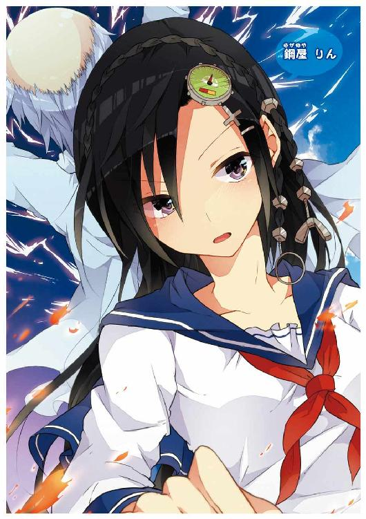

| 青春サイバーアクション漫才ハードボイルドコメディな転校生 (スマッシュ文庫) | |
| リタ・ジェイ | |
| PHP研究所 (2012) | |

青春サイバーアクション漫才ハードボイルドコメディな転校生
著●リタ・ジェイ
イラスト●とばり

爆発の炎がほんの一瞬、遠くに連なる山々と、その足下に広がる葦の原に立つ少女の顔を浮かび上がらせた。
瞳に影を作るほど長く伸びたまつげと、まだ幼さの残る小さな顔。
腰まで届きそうな黒髪は、コンサート会場に一台置かれたピアノが、ピンスポットのライトに照らされたかのように、しっとりとした輝きを放っていた。
再び闇へと溶け込もうとする少女を追うように、黒い影が二つ、草をかき分けて進んでゆく。
やがて虫の声に混ざって、鉄の塊同士がぶつかり合うような、鈍い音が聞こえてきた。
二つの音色はつかの間、和音を奏でたようだったが、そうした不自然なコンサートはすぐに終演を迎えた。
また爆発が起こり、その炎は少女を追ってきた黒い影の正体を鮮明に映し出した。
少女の前には、男が立っていた。
首から下は黒いウェットスーツのような素材に覆われ、手には金属の棒を握り、顔には表面に細かいひびがびっしりと入った、緑色の仮面を被っていた。
もう一人は倒れ、背中から火を吹き出している。首筋からは火花が散り、銅線のようなものがはみ出していた。
二つの影は、彼らであった。
「メタルＲ......コ、コレガ......特機ノ......性能......」
仮面のせいか、立っている男の声はしわがれ、まるで無線機のスピーカーから出力されているかのようだった。
「ダガ......ソノ能力ハ......マダ......解放、サレズ......！」
男は全身に力をこめ、握っていた金属の棒を鋭く少女に突き立てた。
しかし、少女は体をわずかに傾けただけでその攻撃をかわし、伸び切った男の腕を軽くはじくと、懐にぴたりと身を寄せた。
「鍵がなくても、量産機なら」
少女が口を開いた。この場に似つかわしくない、鈴の音のように高く、そして儚げな声だった。
「撃滅──」
静かな声とは裏腹の言葉と共に、少女は右腕を男の胸元にあてた。
虫の声が一層大きくなり、葦の原にひそんでいた鳥が一斉に羽ばたいた。
それに混じり、モーターが高速で回転するような音と、何かの配線が切れ、金属の砕ける音が響いた。
「──完了」
虫の声がちょうど止んだ頃、少女は言葉を発し、男の胸から手を離した。
男は立ったまま激しく震えている。それもそのはず、彼の胸元から背中にかけて、向こうの風景が見えるほどの穴が空いていた。
男は「ガ、ガガ......」と、ラジオのチャンネルをザッピングするときのような音を出すと、鉄の棒を落とし、そのまま後ろに倒れ込んだ。
「ア......Ｒヨ。ソ......組織ニ、断リナク、貴様ハ、コノママ、逃ゲラレヌ......ガガ......」
男の動きが止まったのを見とどけると、少女はゆっくりと葦の原を歩き出した。
少女の左腕はあらぬ方向に曲がっていたが、痛みを感じないのか、特に表情に変化はない。
「組織に、断り、なく......」
歩きながら、少女は曲がった左腕を頭上にあげ、そのまま大きく振り降ろした。
ガシャン。
と、固いドアノブをまわしたような音とともに、腕はまっすぐな元の形を取り戻した。
「断り......なく」
やがて、三度目の爆発が起こった。
揺らめく炎を背に、少女の引き結ばれた口が、ゆっくりと開かれた。
「挨拶などは、必要ないわ」
「はいどうもー！ ノース南田ですーよろしくお願いしますー。
で、ノースで南って、どっちだよって言いますけどね。このどっちだよっていうのは、ノースが南......あ間違えた、北ですね。北。北と南がひとつの名前に入っているから、ちょっと面白いというね。なんでやねん！ 面白いですよね。
そう！ たとえば、細川太、みたいな名前ね。やせてるのか太ってるのかどっちだよっていう。あと、水野お湯太郎。みたいな名前ね。水なのかお湯なのかどっちだよっていう。それで飲んでいるのがお茶という。欲張りすぎだよと。
あと、山田海の介とかもイヤですね。体は山より大きくて、海から出てくるという。お前それ人間じゃねえよ。ダイダラボッチだよって。なんでやねん！ ダイダラボッチかよーっ！
はいっ、今、ノース南田、ボッチポーズを決めさせていただきました。妖怪ダイダラボッチをイメージしたこの......」
「ひ ど す ぎ る！」
木下・ボーズビー・洋一がピシャリと言い放った。
「ちょ、ちょっと待てよ。続きが......」
南田是也は、ネタを途中で止められて、さすがにムッとした様子で食い下がったが、続けようにも、木下の言葉でネタの続きを忘れてしまっていた。
「......ひどいって、どこがひどいんだよ」
「全部だな」
木下がメガネを持ち上げると、そのレンズは放課後の西日を受け、キラリと反射した。
「全部？ 確かに、ちょっと緊張してたけど、ギャグ自体はよかっただろ」
是也は木下のメガネの光に目を細めながら、机に置いたペットボトルをつかんだが、キャップをあけようとして、それが、ガイコツのマークが描かれた除草剤のボトルだということに気づいた。
「こんなもの置いとくなよ！ 死んだらどうするんだよ！」
「片付け当番は南田よ、お前だ。先週、俺が腐葉土の袋を積んだんだからな」
「じゃあまあ、それはいいよ。で、ネタの話だけど、全部悪いってことはないだろ」
「ナンダよ。全部というのは間違いかもしれない。ネタは全部見ていないからな。正確には現時点で百パーセントだ。今からダメだったところを順番に言うぞ」
肥料の臭いと、湿気のこもった空気が全体を覆う、筒美学園園芸クラブの部室で、木下による是也へのダメ出しが始まった。
「まず第一に、最初の名前でボケるところ。ノース南田の、北と南を言い間違えて早くもグダグダになっている」
「それは、自分でも感じたけど......」
「で、一発目の『細川太』はとりあえずいいとして、二発目に『水野お湯太郎』が来るのは、まだ早い」
「早いって？」
「そんな名前、普通ないだろ」
「だから面白いんじゃないか」
是也の返事にかぶせるように、木下が一気にまくしたてる。
「いや、『どっちのイメージかわからない名前ボケ』の二回目に、その角度でボケても、まだ見ている人の準備が足りない。急にヘンな名前が出て、客はキョトンとするだけだ」
「そんなもんかな」
「そうだ。『そんな名前はない』というツッコミがあれば大丈夫かもしれないが、それもないだろ」
「そうか......じゃあ、二発目を変えるのか......」
「ああ。たとえば二発目は......『大田小太郎』にするとか」
「でっかいのかちっちゃいのかどっちだよ！」是也は反射的に手の甲で木下の胸元をポン、と叩いた。
「......ナンダ、今のツッコミ、いいよ」
「......あ、そうなんだ。思わず出たよ」
「で、話は戻るが」是也のツッコミの衝撃でズレたメガネを直しながら木下は続ける。
「そこから『水野お湯太郎』と『山田海の介』にいけばいい。が、妖怪ダイダラボッチはちょっとマニアックすぎる」
「マジか。好きなんだけどな」
「ベタに『見上げ入道』にしておけ」
「もっとマニアックだろ！」
「うん、今のツッコミもいいな......それがネタの際中にも出れば......」木下は咳払いをした。「......話は戻って、一番気になったのが、いきなり入る『なんでやねん！』だ。あれはヒドい」
「え？ なんで？」
「お笑い芸人は、そうそう『なんでやねん』とか言わないんだよ。ああいう、上っつらだけお笑いにかぶれたような感じが一番ダメなんだ」
「でも、テレビで使ってたよ。ほら、アーリー・チャールストンの『アリトーク』でもさ、ツッコミの田原が」
「さ ん 付 け ろ や！」
「え？」急に語気を強めた木下に、是也はたじろいだ。
「さんを付けろ。『アーリー・チャールストンの田原さん』だろ。コンビ名だけを言うときは『アーリー・チャールストンさん』だ。ナンダよ、お笑い芸人を目指してるんなら、将来からむかもしれない先輩には、普段から敬語だよ」
「......お前、すごいな」
「当たり前のことだ」木下はメガネを上げた。「それに、田原さんは関西の人だよ。......まあ、いろいろ言ったが、今日のネタに関してはざっとこんなもんだ」
部室に差し込む西日は若干和らぎ、もう木下のメガネを反射しなくなっていたが、陽の光が薄まった分だけ、部室の中は暗くなり、是也の気持ちにも影がさしたようだった。
「全部ダメ......か」
「とは言うものの、ナンダよ」木下はカバンの中にメモ帳を戻しながら言った。「ひとつ、わかったことがある」
「ん？」
「ネタ以外のところで見ると、お前のツッコミはそんなに悪くないと思う。一人でネタをやって空回るなら、誰かボケができる相方を探してコンビを組んでみるのはどうだ」
「じゃあ木下、お前とちょっとネタやって──」是也の言葉を全部聞かないうちから、木下は大きく手を振った。
「前にも言っただろ、俺は芸人になる気はない」
「そんなにお笑いが好きなのに？」
「ナンダよ。『好き』と『やる』の差がわからんのか。食べ歩きのブログを書く人間が、調理師になる義務はない。わかるか。楽しみが仕事に変わると、それを気持ちよく味わうこともできないんだよ。お笑いは、観るのが一番」
じゃあな、と言って部室を出ようとする木下を是也は引き止めた。
「ちょっと、新しいギャグ出すのつきあってよ」
「ダメだ。これから家に帰って『勝手にはじけろ』の生放送を観る」
「お前、それいつも録画してるだろ」
「生放送を生で観ないでどうするんだ！ ネットで実況をする楽しみをなんだと思っているんだ！ ナンダ！ 録画は万が一見逃したときのお守りみたいなものだろ。そんなこともわからないでお前は芸人になってテレビに出たいとか言ってるのか！ ナンダ！」
「わかったわかった！ あと、ナンダ、ナンダって連呼するな。俺は『みなみだ』だ！」
「べつにナンダでいいだろ」
「イヤだよ、昔のブッダの弟子みたいだろ」
「お、そういう『たとえツッコミ』も悪くない」
「え？ ありがとう......いやいや、そうじゃなくて」
「とにかく、もう俺は行く。課題は伝えたぞ。また明日な」
カバンを背負い、木下は急いで部室から出て行った。
木下を見送った是也は、机に置かれたネタ帳のノートを見るともなくめくった後、除草剤のボトルを、部室の奥にある棚へと戻しに行った。
棚のガラス戸はいつも固く、閉める際、強く戸を引かなければならなかった。そうすると、元々たてつけの悪い棚の上にのせているダンボール箱がぐらぐらと頼りなく揺れた。
箱からは刈り込み鋏、熊手、シャベルといった道具の柄の部分が覗いていた。落ちてきたら危ないので、下に降ろそうとしたこともあるのだが、見るからに重そうなダンボール箱が上に乗っていることで、逆に劇薬の除草剤を入れた棚の安定感を高めているかもしれず、二人は箱をそのままにしていた。
ダンボール箱に注意を払いながら、是也はやっとガラス戸を閉めた。と同時に、部室の外の壁に何かがぶつかり、棚が大きく揺れて、是也はあわてて飛びのいた。
窓から外を見ると、野球部の新入生がボールを拾いにきていた。時折、野球部やサッカー部の練習のこぼれ球が、グラウンドの隅にあるこの部室の壁に当たるのだった。
是也はそのまま野球部の練習風景をながめた。ピッチャーがマウンドで投球練習をしており、何球か投げ終わると、キャッチャーと共に監督に呼ばれ、何やら指示を受けている。監督が別の生徒に目を向けると、二人は軽口を言い合っているのか、お互いの肩を叩きながら笑い合っていた。
「相方......か」
是也は机に腰掛け、ペットボトルのジュースを一口飲み、ネタ帳をカバンに戻した。新しいギャグを出す、と木下に言ったものの、今日はこれ以上、ネタを考える気にはなれなかった。
是也は両親の仕事の都合で、高校二年生になったばかりの半年前に、東京都売野市にある筒美学園へ転入してきた。
昔からお笑いはやってみたかったのだが、是也には相方どころか、ネタを見せられるほど親しい友達もいなかった。
何か部活でもやっていれば別だったのだろう。しかし、運動が得意ではない是也は、スポーツ系はまず無理。
かといって美術、吹奏楽といった文化系の部活も女子しかいなくて入りづらい。結果、なんとなく帰宅部のまますごしてしまったため、取り立てて仲のいい友達を作れなかった。
一度、クラスの中のオタク的グループに属して、仲間と協力してモンスターを狩り、その毛皮を使って自分のファッションブランドを作るというゲーム「モンスターミラノコレクション・春」に励んだ時期があったが、グループの仲間にお笑いのことを一度話したら、鼻で笑われてそれっきりだった。
ゲーム自体も、三十時間ほど遊んだデータが消えたとき、もう一度最初から始める気にはなれなかった。そして、データが消えた是也を慰めるどころか、再びプレイしないことを「根性がない」と責めたてる彼らとの距離を感じ、そのグループからも離れたのだった。
結局、是也はクラス内で微妙なポジションに終始していた。
なので、少なくとも以前までいた学校で、是也と一緒にお笑いをやろうとする人間は、いなかった。
そんな是也がこの筒美学園で出会ったのが、同じクラスの木下だった。
アメリカ人とのハーフで、木下・ボーズビー・洋一という名前ながらも、生粋の日本人顔をしたこの男は、是也が英語のテストで、うっかり解答欄をひとつずつずらして書いてしまい、放課後に再試験を受けることになったとき、まるでこの世が終わったような顔で隣に座っていたのだった。
再試験が始まり、自分の答案用紙を覗こうとする木下の表情に、なにやら決死の雰囲気を感じ、是也はそれとなく手をどけてやった。
補習が終わり、「さっきはありがとう。英語は死ぬほど苦手なんだ」と、礼を言ってきた木下と「ハーフなのに？」といった会話を交わしているうちに、是也は、木下のカバンからお笑い雑誌の表紙がのぞいていることに気づいた。
「......木下くん、お笑い好きなの？」と、是也は軽くたずねた。それが、今にいたる「木下ネタ見せ」が始まるきっかけだった。
木下はお笑いに詳しかった。マニアと呼べるほどに。
お笑い雑誌の隅から隅まで目を通し、お笑い番組をすべて録画し、ラジオを聴きながらお笑いライブの予定を調べ、アンケート用紙の裏にまでネタの感想をギッシリと書き、それをライブのスタッフには渡さず、家に持ち帰って長文のブログを更新する......ということを、どうやら中学生の頃から続けていたようだった。
是也が軽く「俺、お笑いやってみたいんだよね」と話すと、一間あって、「本気なのか？」と、異様に低い声のトーンで木下が聞いてきた。確か、そのときもメガネが光っていた。
そこからの木下の動きは早かった。
「今ネタはあるのか？ ないのか。じゃあ何でもいいからネタを作ろう。そのために稽古場が必要だ」とまくしたて、練習場を得るため、二人は学校のあちこちを見て回った。
結果、他の部員が入らず、唯一残った三年生の引退に合わせて廃止されかけているという、園芸クラブに目をつけた。
形だけの入部を済ませた二人は、花壇には育てる手間がかからない、丈夫なハーブ類を植え、木下がネットで見つけてきた、外国で使っているという強力な除草剤を部費で買い、草むしりの手間をはぶいた。
そうして申し訳程度であり、最低限度の部活動をしながら、是也が家で書いてきたネタを木下が見るという、部室ネタ見せが始まった。
園芸で、演芸。
意外とシャレが効いているかもしれないが、肥料の臭いが漂う部室は、当然ながら居心地が悪い。おまけに、クラスの皆に臭いと言われるのを恐れ、是也は部費でまかなえない服の消臭剤を買う必要があり、納得のいかない小遣い不足に悩まされていた。
「相方......ね」
野球部のバッテリーを見ながら是也は、もう一度同じ言葉を口に出した。
ネタを作り始めて四カ月ほど経ったが、木下の評価は実に厳しいものがあり、是也自身もまた、自分で作ったネタにあまり満足できていないところがあった。
いや、一人でやるネタには限界がある。
やはり、相方が必要なのだ。
木下は、是也のツッコミを悪くないと言っていた。ボケのうまい人間と一緒にネタをやってみたらどうだろう。どこかモヤモヤしながら書いている自分のネタも、もしかしたら輝くものになるかもしれない。
それに、もともと是也は一人でお笑いをやる気はあまりなかった。前の学校では相方が見つからず、この筒美学園では、最初に木下に会ってしまい、わけがわからないうちに一人ネタを作りはじめてしまったのだった。
かといって、その相方をどうやって見つけるのか。
テレビで観るお笑い芸人は、よくトーク番組などで「養成所の同期だった」「同級生とコンビを組んだ」ということを話しているが、完全にプロ志望になって、今から学校に通いながら養成所に行く、というのはなんだか考えづらく、両親にお金を出してもらうことを頼むのもためらわれた。
やはり、学校の中で探さなければならない。
ただ、転入して半年。スポーツは苦手。勉強も普通。イケメンとはまったく呼ばれたことがないが、ブサイクキャラとしていじられるわけでもない。ホームルームなどで人の言うことをいちいち茶化し、注目を集めようとするお調子者キャラというのは、かえって寒々しい、とさえ思っていた是也であった。
結局、是也はこの筒美学園でも、自分のクラス内におけるポジションの微妙さを感じていた。
「俺とコンビを組んでお笑いをやってくれるようなヤツなんて、どこにいるんだよ......！」是也の言葉はむなしく部室に響いた。
相方と出会ってみたい。何か衝撃的な、電撃的な出会いがほしい。キャラの強いボケの人間に会ってツッコミを入れてみたい。
そう、ツッコミはほめられたわけだし、ギャグは空回ったかもしれないが、自分の動きなどは、しっかりできていると思う。もう一度自分のツッコミのパートを増やして、動きのボケを自分でツッコむネタを作ってみようか......。
解決こそしていないが、前向きな想像もあれこれふくらみ、ちょっとネタを続ける気持ちが戻ってきた。
帰る前に、もう一回ネタを通してやってみようか。と、是也がネタ帳を見るためにカバンを開けると、携帯電話のお知らせランプが光っていた。
木下からメールだ。
「追加。『ダイダラボッチポーズ』ひどい最低。あれただの敬礼。自分のキャラにないことはしなくてＯＫ」
メールを見た是也は、携帯電話を投げ込んだカバンをひったくるように肩にかけ、部室のドアへと向かった。
是也は全力で走っていた。バス停までは、まだ距離がある。
いつもより強い向かい風を直接体に受けながら、走る。
肩からかけたカバンは腰をこするように左右に大きく動き、そのためにバランスを崩して倒れそうになった。
もともと運動が苦手な是也には辛い通学だ。
昨日は夕食をとり、「勝手にはじけろ」の録画を観た後、動きのギャグを少し考えたが、テレビで見る芸人のような奇抜な動きは考えつかなかった。
寝る前にパソコンを開いて、番組の感想をネットで検索すると、木下が管理している「笑いの木の下で」というブログに、長文がアップされていた。
「動きのギャグは、自分の中である程度動きの種類をためておけるタイプと、追い詰められた結果に思わぬ動きが出るタイプがある。前者は安心感があるので、他の共演者にイジられやすく、後者は相方がその追い詰める役を担う。ギャグに破壊力があるのは、当然後者である......」などといった感想ならぬお笑い論を読んでいるうちに、すっかり寝つけなくなってしまった是也は、気づけば寝坊しており、あわてて家を飛び出したのだった。
自宅から続く坂を登りきって三つ目のコンビニ「ＳＨＯＧＵＮイレブン」を右に曲がると信号があり、そこを渡って少し歩けば、筒美学園行きのバス停に着く。
カバンに体を振り回されないようにしっかりと両手に抱えて坂を登り、コンビニの前を走る。新発売のアイスのポスターを見たような気がする。帰りに寄ってみようか。コンビニあたりまでくると、ゆるやかなくだり道なので、少し余裕が出てくる。
がんばった甲斐があって、是也が予想したよりも早めに信号の前に着いた。
一息ついて、赤信号が変わるのを待っている間、是也はそばにある街路樹に寄った。
イチョウの葉も黄色く色づいてきた秋口とはいえ、全力で走った身はさすがにほてり、首筋に汗が流れているのがわかった。ざわざわと葉を鳴らす木陰に入り、ひんやりとした空気に触れるのが気持ちよかった。
道路を挟んだ向こう側には、同じく街路樹が立ち並んでいる。
そこには街の清掃局員だろうか、ツナギを着た作業員が、腰に安全帯をつけて木に登り、ノコギリを使って伸びすぎた枝を切っていた。
どさり、どさりと、重そうな枝が落ちてゆく。その様子をぼんやりとながめていた是也が、はっと目を見張った。
一人の少女が、道路を挟んだ道を、街路樹の方に向かって歩いていた。
華奢で身長こそ低めだが、その分、足の長さが際立っている。
小さな顔についた大きな瞳、長く伸びたまつげ。鼻筋はスラリと通っているが、口は小ぶりで、きゅっと引き結ばれている。道路を挟んでもその顔立ちははっきりとわかった。
なんて、可愛いんだろう──。
是也はたちまち目を奪われた。
何より是也の心を捉えたのは、少女の美しい黒髪だった。
それは腰までかかるかというくらいに伸びているが、暑苦しさは少しも感じられない。
時折強くなる風を受け、その髪が勢いよくなびく。しっとりと輝き、なだらかな曲面を描く髪のシルエットが、是也にはグランドピアノのように見えた。俺は今、外国人が出てくる化粧品のＣＭのような光景を生で見ている。と、是也は思った。
やがて、信号が青になった。是也は歩きながら、チラチラと向こう側にいる少女を見ていた。少女は筒美学園の制服を着ている。うちの学校にあんな女の子がいたなんて知らなかった。転校してまだ半年だからだろうか。しかし、あんな美少女がいて、学校中の噂にならないわけがないのだが。
是也が信号を渡りきったところで、少女が目の前を通った。そのためにわざと歩く速さを合わせたのだが、おかげではっきりと顔を見ることができた。やはり、可愛い。
是也が顔をゆるめたそのとき、一段と強い風が吹いた。
少女の黒髪が風にあおられ、孔雀の羽のように広がる。と同時に、スカートもまた風にあおられ、台風の日のビニール傘のように、逆さになってはためいた。
「ええッッ！」目の前で少女のスカートがまくられたのを見て、是也は思わず大きな声を出した。気を抜いたところに、突然目に飛び込んできた少女の下着はあまりにもまぶしく、是也の目には、その下着が銀色に光って見えた。
是也の叫び声を受けて、少女が振り向いた。二人は目を合わせた。
正面から見る少女の顔は、道路の向こうから見たときよりもはるかに可愛かった。
「あ、いや......」目が合った是也はすっかりうろたえてしまっていたが、少女は何も言わずに立っていた。
少女の瞳は黒々としながらも、その奥には、深みをたたえた鈍色の光があった。それは、よく磨かれた拳銃のような輝きを放っていた。見ただけで吸い込まれそうな、どこか危険な輝きを。
ああ、俺は、大きな声を出しすぎた──。少女に見つめられ、是也は自分の反応を恥ずかしく思ったが、目をそらすことはできなかった。
大体、恥ずかしいといえば、相手の方が恥ずかしいだろう。目の前で自分のスカートがまくれて、下着を見られてしまったのだ。少女の様子に特に変化はないが、顔色ひとつ変えずにこっちを見てくるというのは、重圧を感じる。もしかして怒りのあまり無表情になっているのだろうか。だとすれば、「見てないよ」と答えるか、それとも、黙って走り去るべきだろうか──。是也の頭の中は乱れ、動こうにも動けずにいた。
そのとき、また一段と強い風が吹いた。再び少女のスカートがまくれ上がった。
「ずええッッッ！」正面から下着を見てしまい、是也はさっきよりもはるかに大きな声を出した。気のせいではなく、少女の下着ははっきりと銀色に輝いていた。
しかし、少女の表情はなおも変わらず、スカートを押さえる仕草ひとつしなかった。
「隠さないの!?」はためき続けるスカートを見ながら是也は思わず叫んだが、直後に息を呑んだ。
少女の後ろ、街路樹のてっぺん付近でノコギリを枝の根元まで入れていた作業員が風にあおられ、大ぶりの枝を押さえていた手を離してしまっていた。
根元までノコギリが入っていた枝は、自重に耐え切れることなく、べしゃりと折れた。
そのまま枝は、高所からの落下と風のあおりを受けて、猛烈な勢いで少女の後ろに迫る。
しかし是也は、少女をかばうどころか、その場からまったく動けずにいた。
このままでは、彼女に当たる。せめて、声だけでも──。
「あぶな──」是也が叫ぶより早く、枝は彼女に当たった──のかはわからなった。気がつけば是也は、目をそらしてその場にへたりこんでしまっていた。ただ、大きく鈍い音だけは、はっきりと聴こえた。
是也はおそるおそる目を開けた。倒れている少女の姿を見てしまうのだろうか。目の前のアスファルトから、ゆっくりと視線を上げてゆく。
少女の靴が、細い足首が見えた。それが二本、地面にしっかりとついている。
少女は立っていた。枝は、頭の上にあげられた、少女の右腕一本にのしかかっている。
少女が手を降ろすと、枝はどさりと落ちた。地面に落ちた際に枝についた葉が飛び、是也の足元に何枚かひらひらと落ちてきた。
「あ......だ、大丈夫？」あわてて立ち上がった是也は、少女に声をかけた。
「......何が？」少女は鈴が鳴るような声で、表情を変えずに尋ね返した。少女の声を初めて聴いた是也は、こんなときでも、顔も可愛いが、声もまた可愛いな。とか思ってしまった。
「いや、その、木が......腕とか」是也は話しながら、少女の右腕を見た。ケガどころか、見た目にはかすり傷ひとつない。
そこに、作業員が走ってきた。少女に頭を下げながら枝が当たっていないか聞いていたが、少女は無言で立っている。見た目にも変化がなかったので、作業員はしきりに頭を下げながら、枝を回収して仕事へと戻っていった。
「腕は、問題ないわ」少女は是也に答えた。
「そ、そうなんだ......でも骨とか、もし折れてたら」
「......あなたは、私と同じ年齢なのね？」少女は是也の制服を見て、違う質問を返した。
「え？ 僕は二年だけど」思わず是也は「僕」などと、同年代の相手には普段使わない言葉を口に出してしまった。
少女は是也に一歩近づいた。
「では、私の胸を、触ってみて」
「うん。......はぁ!?」突然の少女の言葉に是也は驚いて聞き返した。「いやいやいや、なんで!?」
「私には、鍵が必要だから」少女は答えた。ためらいのない声だった。
「鍵？」
「おじいさんが、言っていたの」
「おじいさん？」
「歳を同じくした有機体が鍵を持っていると、言っていたの」
「ユーキタイ？ なんのこと？」次から次へと少女から謎の言葉を浴びせられ、是也はあわてた。ひょっとして枝が頭に当たったのだろうか。
少女は、また一歩近づいた。
「私の胸を、触っ」
「いや、ちょっと待って」是也は少女が前に出た分、半歩下がり、途中で少女の言葉を制した。美少女からこんなに急に迫られると、正直、心の準備ができないし、気後れもする。
「腕は大丈夫なの？ 腕！」是也は話を戻そうと、もう一度腕の具合をたずねた。
「腕は問題ないわ。鉄だから」少女は即座に答えた。
「え？ テツ、鉄？ それともケツ？ いや、ケツ関係ないか、でも鉄だって関係ないか」なんのことだろうか。急に変な単語を耳にして、是也は思わず聞き返した。
「ケ、ツ......？」今度は少女の方が首をかしげている。
「あれ、ケツわからない？ ケツはお尻のこ......いやいや、何言ってるんだ俺は」
「腕は、問題ないわ」少女は是也の混乱にかまわず、続けた。
「鍵が、必要なの。あなたが持っているかどうかはわからないけど。だから、胸を触ってみて」
「だから、鍵と胸って、繋がってなくない？」やはり病院に連れていった方がいいかもしれない。このあたりは道が混むが、救急車だったらすぐやって来るだろう......と、道路を見やった是也はさらにあわてた。目の前を、筒美学園前行きのバスが通り過ぎようとしていた。
「ゲッ！」是也は飛び上がった。
筒美学園では遅刻の罰則は厳しく、「時間を守れぬものは何も守れず」という校訓の下、遅刻した生徒には、校内奉仕、別名４Ｋ奉仕と呼ばれる掃除が待っている。トイレの排水溝に詰まったゴミ取りや、焼却炉のスス磨き、屋上の手すりにサビ止めを塗るなど、その内容はキツく、汚く、危険かつ恐怖だった。
「病院行く？ いや、バス？ 学校？ 乗らないの？ どっち？」焦った是也はバス停に向けて体をひねりながら少女に聞いた。少女は答えた。
「あなたが何を言っているのか、わからないわ」
こっちのセリフだよ。是也は一瞬ではあるが、この美少女が小憎らしく思えた。ともあれ、特にケガもないようなら、今はバス停に行くことを優先させたい。「腕、大丈夫なんだよね？ じゃあ、僕は行くから」と言い残し、是也はバス停へと走った。
少女は目の前にいた少年がバスに乗り込むのを見ていた。その後で、枝を受け止めた右腕を何度かゆっくりと折り曲げて戻し、指を握って開いて、という動きを数回繰り返した。
「このくらいでは......問題ない」
少女は再び、歩き始めた。歩くたびに足をゆっくりと大股にとっていった。
「でも、鍵がなければ、これ以上のことは......」
バス停の先の交番を曲がった下り坂になると、少女の大股歩きは段々と、三段跳びのステップを踏むように、間隔が長く、スピードが乗ってきた。
いつしか少女の歩幅は、ちょうど街灯が置かれた間隔を、一足飛びで踏んでゆくほどになっていた。
少女はそのままのスピードで下り坂の終わりに建つ、ビルとビルの間に入ると、路地をはさむ壁を、互いに飛び移るように登ってゆく。猫が驚いて路地から外へと飛び出した。
ビルの屋上に立った少女は、街を見下ろした。その視線の先に、筒美学園が模型のようにこじんまりとして見える。
「鍵は......私の鍵は......」
少女はそうつぶやくと、また大股で歩き出し、屋上の柵へと飛び乗ると、そのままゆっくりと体を倒し、隣のビルへと身を投げた。
巨大なカラスが翼を広げたかのように、空中で風を受けた少女の黒髪が大きくはためいた。はいているスカートもまたはためき、下着が放つ銀色の光で、飛んでいた鳥がめまいを起こして、空中でよろけながら高度を変えた。
バスから降りて校門へと向かいながら、是也は先ほどの少女のことを考えていた。
可愛かった。バラエティー番組で観るアイドルよりもはるかに可愛く見えた。あんな子と出会えたなんて自分は運がいい。ちょっとコワイところはありはしたが。
しかし、鍵がなんとやらとか言っていたが、なんのことだろうか。いや、それよりも本当にケガはなかったのだろうか。自分が耳にしたあの、大きく鈍い音は、枝が確実に何かにぶつかるような音だったが。
もっとも、あの枝はずいぶん長いものだったから、ひょっとして、あの音は、先に枝の下の重い部分が、道路についた音だったのかもしれない。そう考えると、一度落下が終わって、地面に立った枝がまた倒れてきただけなので、女の子の腕でも支えられそうな気もする。そうに違いない。
俺、ビビりすぎたよな──。
結論が出ると同時に是也は、あのとき、目をそらして倒れこんでしまった自分が、とても恥ずかしくなった。
いざというときに体が動かないのは、格好が悪い。お笑いでもそうだ。いつかの木下の言葉を思い出した。クラスでやたら目立とうとする人間は、どうもタイプではない。という話をしたときのことだった。
「確かに、ただ前に出ればいいというヤツは空気が読めていない。でも、明らかに自分が前に出なければならないとき、そして誰かにネタを振られたときにサッと動けないヤツは、周りの期待、すなわち空気が読めていないことになる」
くそ、木下め、くやしいが正論だ。歩きながら是也の顔はどんどん下を向いてきた。遅刻を気にしてバスに乗り込んでしまったが、まず学校に一度連絡をしてから、あの子を介抱するなり病院に連れていくなりしていれば、それは遅刻の正当な理由になるし、あの子ともっと話すこともできたかもしれない。
俺は、あの子に対して前に出れなかったのか。
そしてあの子は、胸を触ってもらうことを期待していたのか。
だとすれば俺は、千載一遇のチャンスを逃してしまったのか──。
歩いていた是也は、何やら大きく、やわらかい物体に頭をぶつけた。心地よい弾みを感じた是也が顔を上げると、そこには保健の鞠宮雪乃先生が立っていた。
「ちゃんと前を見て歩かなきゃ。事故っちゃったわよ」鞠宮先生は、ボタンがはちきれそうなブラウスの胸の部分に手を当ててにっこりと笑っている。
「あ......はい......へ!?」鞠宮先生の仕草を見て、是也は、自分がどこにぶつかったのかわかった。
「す、すみません！」顔を赤くして謝る是也に近づいて、鞠宮先生は言った。
「ダメよ、あんまり下を向いちゃ。姿勢が悪くなるし、可愛い顔はちゃんとみんなに見せて歩かなきゃ。南田、くん」フフ、と笑いながら、鞠宮先生は是也の制服についた名札を指でちょん、とつついた。
「え......？」
鞠宮先生は二週間ほど前、産休を取った保健の先生に代わり、臨時に筒美学園に赴任してきた。
スタイルは抜群で顔も綺麗だが、それを鼻にかけない優しい物腰が、赴任の挨拶ですぐに伝わった。ファッションも、清潔感のあるブラウスの上に白衣をはおり、ボブスタイルの髪型に少し太めのフレームのメガネを合わせ、切れ長の目が持つ印象を上手く和らげている。雑誌で見るような『オトナ可愛い』という雰囲気で、男子はおろか、女子からの人気も圧倒的に高かった。
「......あ、はい、わかりました！」是也は言葉の意味をかみ締めると、顔を赤らめ、半ば飛び上がるように、背筋をピンと伸ばして答えた。鞠宮先生はその反応にクスリと笑った。
「朝、通学バスの路線近くで交通事故があったみたいだから、みんな大丈夫かなって、外に出てみたの」
「え？」
「道に飛び出した猫をよけた車が電柱にぶつかったみたいで。ネットのニュースは早いわね」
「そうなんですか」バスに乗った後で、そんなことが起こっていたとは。是也はどのあたりで事故が起こったのか聞いたが、鞠宮先生もそこまでは知らないようだった。
「ケガ人は出なかったみたいだけどね。さ、私も戻らなきゃ」じゃあ、といって鞠宮先生は教員用の玄関へと歩いていった。是也はその後ろ姿を目で追った。
鞠宮先生が颯爽と歩く姿は、朝の少女とはまた違う魅力にあふれていた。歩くたびに揺れるふくよかな腰の周りには、白衣が軽やかにまとわりつき、体のラインをぴったりと際立たせている。これも、朝の少女のそれとはまた違う衝撃をもって是也の心に迫った。
風、吹かないかな──。
銀の下着があるなら、金のそれがあってもいいはずだ。これでもし、鞠宮先生の下着が金色だったら、これはまさに白衣の金のエンジェルということか──。
ふやけた顔でシモネタを考えている是也の視線を感じたのかどうかはわからないが、鞠宮先生が立ち止まった。
「南田くん、あなたもそろそろ、じゃない？」鞠宮先生は振り返ることなく、校舎の時計を指差した。ホームルームまで残り二分。
「あッ！」是也は全速力で玄関へと向かった。
結局、是也が教室に着いたのは、始業ベルが鳴る時間ギリギリだった。
是也は自分の席に座ると、カバンから制汗シートを出して、首筋をぬぐった。二度に及ぶ全力疾走で、すっかり汗水漬になっている。汗臭くはないだろうか。隣の席に座っている女子、太田ひろこの反応を気にしたが、相手は是也の存在自体を、まったく気に留めていないようだった。
朝の出来事を木下に話したかったが、木下との席は離れていた。その木下は、窓際の一番前の席に座り、思い切り前のめりになって、机の引き出しを体で隠すようにして、膝の上に置いたお笑い雑誌を読んでいる。その体勢はかえって怪しかった。
やがて、担任の針巣国松先生がやってきて、ホームルームが始まった。
「おいお前ら！ もうすぐ学園祭だぞ学園祭！ クラスの出し物、何やるか決めるぞ」
国松先生はのっけから興奮気味に、来月に行われる学園祭の話を始めた。
「そんなの、まだ三週間もあるじゃないですかー」女子の一人が答えると、国松先生はさらに興奮して言った。
「おいおい、もう三週間しかない、の間違いだろ？」国松先生はオーバーに体をそらした。背が高く、一年中ポロシャツを着たこの国語教師は、学校行事があるたびにやたらとテンションが高くなることで有名だった。「もし演劇とかやるんだったら、今から配役決めてちょうどいいくらいだぞ」
「演劇？」
「芝居だって。お前やれば？」
「やだやだ、ドラマ観るだけでいいもん」その提案をクラスの皆は軽く受け流しているが、国松先生の勢いは止まることがない。
「いいじゃないか演劇！ 楽しいぞ。みんなで練習して、衣裳縫ってな、大道具でねぶたとピラミッド作ってな」
それなんの劇だよ。是也は心の中でツッコミを入れた。
「それでダンボールでセット作るとき、布のガムテープじゃないと、テープ同士を重ねて貼れないからダメなんだよな。で、金ケチって安い方の、紙のツルツルしたガムテープ買ってきたヤツがひんしゅく買うんだよ。懐かしーなー！」
国松先生は興奮すると、ポロシャツの襟を立てたり戻したりする癖があるが、今日は空をも飛べそうなくらい、その動きを繰り返している。
「ステージでやるもの以外だと、オバケ屋敷とかどうだ。教室を迷路に仕立ててな。ダンボールで壁作ってな！」
ダンボール好きだなこの人。是也は頬杖をついて国松先生を見ていた。
「それで、首筋にコンニャクが当たってヒャーとか言ってな。人魂も作るんだけど学校で火を使うのはダメだから、代わりに形が似てるインドカレーのナンを使うんだよな。で、焼きたてのやつを使うから人魂と同じくらい熱いんだよな懐かしーなー！」
「えーなにそれキモーい」女子たちはいまひとつ国松先生の話の内容がわかっていないようだったが、クスクスと笑っていた。
是也も全部わかるとはいえないが、自分がネタをするときのような空回りを見せながらも、なぜかほほえましく見える国松先生のテンションの高さは、お笑いとして見るとアリかもしれない。とも思った。
「いいかお前ら。学園祭というのは、当たり前だけどお祭りなんだぞ。生徒は大いに楽しむべし！ 先生、できることあったらなんでも協力するからな」
国松先生とコンビを組んでみる、という選択肢はどうだろうか。頼んだら一緒にネタを一本くらいやってくれそうだ。
先生と漫才。なんだか面白くなりそうな予感はする。と、ボンヤリ考えてみたが、国松先生は確か三十代半ばだ。あまりにも世代が違う人間と組むことになるのはリスクを感じる。それに、人魂のかわりにインドカレーのナン、というのは、ちょっとわかりづらいコメントだよ。と、自分のことを棚に上げながら是也は思った。
「とにかく、次の金曜日のホームルームで、お前らのアイディア聞くから、考えておくようにな！ 先生からの学園祭の話は、以上」国松先生は学園祭のことをひとしきり話し終えると、ポロシャツの襟を元に戻した。
「で、もうひとつあるんだ。そろそろだと思うが......」国松先生は教壇から降り、ドアに向かった。その隙間に首をつっこんで廊下を見ていたが、やがて何かを見つけたようで、おーい、こっちだよ。と、手招きをした。
一体なんだろう、というざわついた空気がクラスの中に広がった。国松先生は教壇に戻り、ポロシャツの襟を立ててから言った。
「はいお前ら注目！ 今から、転校生を紹介するぞ」
よーし入ってこい。という国松先生の声と共に、ドアが開いた。
ざわついた教室が一瞬、シンとなって、その後、波のゆりかえしが来るように、大きくどよめいた。女子の嬌声と、男子の野太い歓声が渦を巻く。
是也は言葉もなく、口をぽかんと開けていた。
木下は一人、お笑い雑誌に集中していた。
転校生は教壇の横に立ち、クラスの皆に顔を向けた。首をふると、黒い髪がゆるやかに弧を描いた。
国松先生が黒板に転校生の名前を書いて、紹介を始めた。
「今日、筒美学園に転入してきた、鋼屋りんさんだ。みんな、仲良くしてやってくれよ」
朝、出会った少女が、是也の目の前にいた。
その日は、休み時間になるたびにクラスが熱狂に包まれた。
「鋼屋さん、どこから来たの？」「誕生日は？」「好きな食べ物は？」「血液型は？」「彼氏いる？」「誕生日は？」「それさっき聞いてね？」最初の休み時間になると、まずは男子が朝の少女、りんを取り囲んだが、すぐに女子が割って入り、男子を追い出した。
女子による、可愛い女子を自分のグループに引き入れようとする迫力には、男子もたじろいだようで、次の休み時間からはそれぞれの女子グループが、かわるがわるにりんを取り囲み、同じような質問攻めにした。
りんは、誕生日などの質問には答えようとせず、女子のグループが質問をするたびに「鍵を探しにきた。私の胸を触って」と、突拍子もない言葉を返して自分の胸を触らせようとした。
だが、こういうときは女子の方がノリがいいようで、りんの申し出に女子グループは大喜びで、「スタイルいい～」「モデルみたい～」と、はしゃぎながらりんの胸を触っていた。
その様子を見た男子はさらに興奮し、昼休みになるとそれが最高潮に達して、机の上に乗って叫ぶ者、携帯電話で動画を撮ろうとして女子に止められる者などが現れ、教室は大変な騒ぎになった。
そのうち、クラスのお調子者である大倉譲二が「たまんねーッ！」と叫んで制服のズボンを下ろすと、目の前で大倉のパンツを見た女子の一人が泣き出した。その尻馬に乗った形になるのか、かねてから大倉と言い合いをしている、学級委員の五輪あゆみが大倉に食ってかかり、クラスはさらなる混乱に包まれた。
ただしクラスが大騒ぎになる発端を作ったりんは、表情を変えることなく座っていた。
是也は、そんなクラスの様子と、りんの姿を遠巻きに見つめていた。
やっぱり、可愛いけど、この子はなんというか、不思議だ──。
放課後、グラウンドでは野球部にサッカー部、陸上部が、それぞれの部活動にいそしんでいる。
グラウンドの東側には、プレハブで造られた各運動部の部室が並んでいる。その汗と埃の雰囲気に包まれた並びから、水飲み場を挟んでぽつんと建てられたみすぼらしい園芸クラブの部室に、是也と木下はいた。
木下は結局、一日中お笑い雑誌を読んでおり、休み時間に話しかけることはできなかったので、是也は朝の出来事をここで木下に伝えた。
「──で、そのもったいないことになった可愛い子が、あの転校生なんだよ」
ひとしきり是也の話を聞いた木下は、ハンカチでメガネを拭きながら言った。
「転校生なんて、いたのか」
「マジかよ!?」是也は呆れ顔になった。「お前、うちのクラスに今日転校生来たの知らなかったのか？ ヘタなアイドルより可愛いんだぞ」
「アイドルには興味がない」木下は即答した。「俺はお笑い一筋だ。今日はずっと『暮れの明星』を読んでいたからな」木下はお笑い雑誌を是也に見せた。
「ナンダ、お笑い雑誌はインタビューがいいんだよ。ライブレポートは、ネタの設定が書いてあるくらいだからな。ボケとしての面白い答え方と、根っこにあるお笑いへのアツい姿勢のせめぎあい。これがいいんだ」
「お前に集中力があるのはわかったけど、クラスの中にも目を向けろよ」
授業が終わると、りんは、取り巻きになった女子をまくように、フラリとどこかへ行ってしまった。
鍵を探しているから、自分の胸を触らせる。意味はさっぱりわからないが、あの子はそういうことをしている。
じゃあ、今頃、あの子は学校中の人間に自分の胸を触らせて歩いているのだろうか。そう考えると、是也は、自分の胸に何かもやもやとした煙が入ってきたような気持ちになった。
「くそ、なんなんだよ」
「ナンダはお前だろ」是也の独り言に木下が茶々を入れた。
「そっちのナンダじゃないよ」
「ナンダよ。その転校生のおっぱい、いや、パイオツ？」
「おっぱいでいいんだよ」
「その、おっぱいに触れなかったからって腐るな。芸人になりたいんだったら、その失敗談をトークネタにまとめてみろ。失敗した話はおいしいんだから」
「俺は成功したかったよ」
「せいこう、したかった？」木下はせいこう、の単語を、ことさらはっきり、ゆっくりと言った。
「バカ！ そっちのせいこうじゃないよ！」是也はただちにツッコんだ。
「やはりナンダ、お前はツッコミ向きだ」木下は少し感心していた。
「お前、前に俺がネタ作ったとき、シモネタはやめろって言ってなかったか」
「俺はいいんだ。テレビ的にギリギリのところがわかっているからな。お前にはまだ早いということだ」
「勝手な話だなぁ」
「しかし、その転校生、一度見てみたいもんだな」木下がメガネを上げた。
「お前と同じクラスにいるんだよ！」是也は頭をかきながら力説する。「でもほんと、とてつもなく可愛いんだ。みんな、サッカー部の八神が学校で一番とか言ってるけど、超えたね」是也はグラウンドを指差した。グラウンドの右側、サッカーボールがまとめて入っている籠の横に、マネージャーの八神純が立っているのが小さく見える。
「ふーん、八神よりも、か」木下は目を細めてその姿を見ている。
「ああ」
「あそこに歩いている女子も、可愛い感じがするな」木下が指をさした先には、水のみ場の向こう、野球部の部室に入ろうとしている髪の長い女子の姿があった。
「ああ......え？ あれ！ あれだ！」是也は叫んだ。その女子が、りんだった。
「ああ、あの子か」木下はのんきに構えているが、是也は焦っていた。部室のドアを開けて野球部の面々と鉢合わせとなって、りんがあんな感じで胸を触らせたら......という状況を考えるだけで顔が熱くなった。
「ヤバいヤバい！ 問題起こる！ あ、でも野球部は部活中か。よかったー！」
「おい、何一人で興奮してるんだ」
りんは他の部室のドアも開けていた。
誰かを探しているのか、中に入ることなく、次の部屋へと移ってゆく。
部室のほかにもりんは、用具入れの倉庫へも向かっていた。倉庫の引き戸はずいぶん重い扉だと思うが、是也の目には、りんが軽々と開けているように見えた。距離が離れているからそう見えるのだろうか。そういえば、あの倉庫には普段、大きな南京錠がかけられているはずだが──。
運動部の部室をすべて開けたりんは、そのまま水飲み場へ向かって歩いてくる。もしかして園芸クラブの部室に向かっているのだろうか。
木下はここで初めてはっきりと、りんの顔を認識したようで、「なるほどなるほど、確かに可愛いかもな」と、メガネを上げてつぶやいた。
是也は、だんだんと近づいてくるりんを見て、思わずため息が出た。胸に入っていた煙たいもやもやが、吐き出されるようだった。
窓ガラス越しに是也たちの正面にいたりんが横にそれ、その視界から消えると、ややあって、部室のドアノブをひねる音が聴こえた。
是也たちが振り向くと、まだ扉は開いていなかった。
「......空いてるよ」是也はうながしたが、自分が想像していたよりも小さな声になってしまった。鍵はかけていないはずだが、まだ扉は開いていない。よく見ると、ドアノブが細かく揺れていた。それを見て是也は、はっと思い出した。
運動部の部室の扉は引いて開けるタイプだが、園芸クラブの扉だけは、押して開けるタイプである。先日、換気で開けておいた窓に野球のボールが飛び込み、それを取りにきた部員が言っていた。ドアノブの揺れは、もしかして扉を引っ張っているのかもしれない。
「あの、逆だと思──」是也の言葉の途中で、道に並べた青竹を車でひいたような、大きく乾いた音がした。
りんの姿が見えた。片側の蝶番がはずれた扉は、部室の外に向かって開かれている。りんの右手には、丸ごと外れたドアノブが握られていた。
「えぇー......」是也と木下は、同時にひきつった声をあげた。運動部のそれよりははるかに古く、そこらじゅうたてつけの悪い園芸クラブの部室だが、はたして、女の子がドアノブを壊せるほど、もろいものだったろうか。
りんはドアノブを地面に落とし、部室の中へと足を踏み入れた。あたりを見回す途中で、是也と目があった。
「......や、やあ。鋼屋、さん」是也はぎこちなく挨拶をした。木下はメガネに手をかけて、りんをじっと見ている。
「......約七時間前に見た、人ね」りんは鈴が鳴るような声で、堅苦しく答えた。りんは朝の出来事をどう思っているのか。是也にはその表情は読み取れなかった。
「南田、だよ。あの、その......ドアは気にしないで、よく壊れるんだ。すぐ直すから」是也はつい、心にもないことを言った。
「おいナンダ、部費なんてもうないぞ」木下が是也を肘で小突いた。
「わかってるけどさ。しょうがないだろ」是也は木下の方を見ないで答えた。目はりんに釘づけになっている。
「あの......まだ、探してるの？ 鍵」是也は聞いた。いつの間にか、口の中はカラカラに乾いていた。
りんは是也に一歩近づき、朝と同じように言った。
「そう、鍵を探しているの。私の胸を、触ってみて」
是也は息を呑んだ。両手は気をつけの姿勢のまま止まっているが、細かく震えているのが自分でもはっきりとわかった。
「ち、ちなみに、他の男子にも......この、お願いというか......」聞いてどうにかなるものではないが、是也は聞かずにはいられなかった。
「男、子......男の人は、あなたが最初」りんの答えに、是也は拳を強く握りしめた。予約をすれば普通に買えるゲーム機やパソコンソフトの発売日の数日前から並び、行列の先頭を狙う人間の気持ちがわかった気がした。後ろに人をしたがえる立場になる、というのが、これほど心地いいものだとは。
「鍵を......鍵を探すためだからね。これは。うん......」是也は震えながら、りんに向かって半歩踏み出した。
前に、出るのだ。
是也は小さく目を閉じ、ゆっくりと、手を伸ばした。
制服のすべらかな手触りを感じながら、是也は興奮を必死に抑えつつ、そのまま胸を包むように手の形を変えようとした。思っていたよりもふくらみはなく、人差し指が何やら固いものに触れた。金属の、おそらくはボタンだろう。ボタン。これは、確か自分の制服にも......。
是也が目を開けると、木下が立っていた。
「お前かよ！」是也はあわてて手を離した。「何やってるんだよお前は！」
「ナンダ、そんなに大喜びで女の胸を触ると、ヨゴレ芸人になるぞ。ヨゴレのポジションは、一度なると戻れないぞ」
木下はメガネを上げながらいった。
「大体、胸と鍵って、まったく繋がっていないだろうが」
「そんなの、朝、俺も聞いたよ」
「では、なんと言ってたんだ」
「そりゃ......あ、まあ」是也は言葉に詰まった。あのとき、通学バスが来てうやむやになっていたことだった。朝のチャンスを逃したこともあって、ただただ、胸を触りたい気持ちになっていたが、是也も元々、それが一番気になっていた。
目の前に立っている木下を横にのけてから、是也は聞いた。
「なんで、鍵を探すために......その、胸を？」
ずっと立っていたりんが、声をあげた。
「それを知らなければ、触れないの？」
「それはまあ......そうだね。多分、他の生徒だってヘンに思うだろうし」
「なら、聞かれたことには答えるわ。私には、時間がないから」一呼吸おいて、りんは言った。
「私の胸には鍵がかけられているわ。それを解放するには、特定の条件を満たさなければならないわ。その条件は伝達映像のエラーのため、私にはわからない。でも、おじいさんは私と同じ年齢の有機体が鍵を持っているといったわ」
「ごめん、もうわからない」是也は答えた。正直な気持ちだった。急にこの子は何を言い出したのだろう。特定の条件から先の言葉は、まったく耳に入ってこない。是也はあらためて聞いた。
「大体、その、胸の鍵っていうのは何なの？」
「メタルセクシャルバイオレット」
「え？」
「メタルセクシャルバイオレットを解放させるための、鍵」表情を変えずにりんは答える。
「ごめん、もう一回言って。なにメタル？」
「メタルセクシャルバイオレットシステム」
「今、ちょっと増えたよね。システム？」是也は思った。朝もそうだったが、この子と話していると、混乱する。自分が段々とりんのペースに巻き込まれていっているのがわかった。が、当初感じた、りんの見た目からくる圧倒的な緊張感が少し薄れてゆくのも、またわかった。
「で、そのメタル、セクシャルバイ、バイオレット？ っていうのは？」
「メタルセクシャルバイオレットシステムは、おじいさんが作ったわ」
「おじいさんって、朝も聞いたけど、鋼屋さんのおじいちゃんってこと？」
「おじいさんは、私を作った人」
「作った？ おじいちゃんがお父さんなの？」
「お父さん......」
「だから、おじいちゃんがお父さんで鋼屋さんを」
「お父さん......わからないわ」気のせいか、りんの目の色が少しくすんだようだった。話がそれている。と感じた是也はもう一度同じ質問をした。
「メタルセクシャルバイオレットって、何？」今度は噛まずに言えた。
「メタルセクシャルバイオレットは、ナンバー１から始まって、その数は不明。鍵をかけられた私の能力を解放させ、あらゆる状況に応じた物体を構築するためのシステム」
「はぁ？」
是也はさらに混乱した。木下に目をやると、険しい表情で二人の様子を見ている。自分があらためて情報を整理しなければならない。
一呼吸おいてから、是也はりんに聞いた。
「ちょっと話を整理して、最初からいい？ あの......鋼屋さんの胸に鍵がかけられていて、胸を触るとメタルセクシャルバイオレットが開く、かもしれない。そのメタルセクシャルバイオレットと鋼屋さんを、おじいさんが作ったと」
りんは黙ってうなずいた。
「あの、鋼屋さんって、一体、何......？」
グラウンドからは野球部の打球音、サッカー部のホイッスル、陸上部の掛け声などがまじりあい、にぎわいそのものといった音が聞こえてくるが、それが、園芸クラブの部室の静けさをかえって際立たせていた。
やがて、りんが口を開いた。
「......私は、機人混成兵器。タイプ近接戦闘Ｒ０８８１改型止メ、撃滅特機八号、メタルＲ」
「なんだそりゃ!!」
是也の叫び声を上回る、笑い声が聞こえた。木下が床に転げまわり、腹をかかえて笑っていた。床に重ねて置いてある空の植木鉢をいくつか倒したあとで、ゆっくりと起き上がり、ずれたメガネの位置を直してから、木下は言った。
「ナンダ、お前の相方が見つかったぞ！」
木下は興奮していた。メガネのレンズは西日を受けながら、これまでにない輝きを放っている。
「面白い、面白いぞナンダ！ その、ハガネヤ？ さん？ 彼女とネタをやってみろ。可愛い見た目でヘンすぎることを言うキャラ。これぞまさに天然！ 貴重だ、貴重だぞナンダ！」
「おい木下、ちょっと待て」
「お前のツッコミ、かなりよかったぞ。やはりお前はツッコミだ」木下は指で是也とりんを交互に指差しながらいった。「そして、天然ボケでルックスがいいボケの相方。華がありすぎる。ナンダ、お前のような華も花も実もない、山菜みたいなタイプにはちょうどいいぞ」
「待てって。あと山菜って何だよ」
「あー、テレビ？ ちょっとテレビが見えてきた。テレビのイメージが。電飾にまみれたセットに立つお前たちの姿が見えてきた」木下は興奮して一人、歩き回っている。
「だから待てって！」是也も確かに、先ほどのりんとの会話に、まともなツッコミができたことで生まれたテンポのよさを感じてはいた。
りんは、その見た目に反して、とてつもない角度からボケを繰り出してくる。しかし、一緒にネタができるかどうかは別の話だ。自分がお笑いをやりたいからって、彼女が興味があるとは、思えない。
「確かに、鋼屋さんは面白かったけど、一緒にお笑いやるなんて、そんな──」
「聞かれたことに、答えたわ」是也の振り返りざまに、りんが言った。
そう、なんともよくわからない会話だったが、是也が聞いた、胸と鍵の話は終わったのだ。
「私の胸を、触ってみて」りんがまた一歩迫ってきた。是也は木下を見た。木下はまだ一人でブツブツ言いながら歩き回っている。
こうなったら、もう、いくしかない──。
メタルセクシャルバイオレット云々という話は、あまり信じられることではなかったが、とにかく、この子自身は本気なのだ。
是也は手を前に出した。今度は目をしっかりと見開いた。
ゆっくりと、半歩前に進んだ。
風が吹いたのか、部室の扉が戻され、蝶番が外れた分だけずれた扉が、入り口のふちに当たって音をたてた。もう直ることはなさそうだが、ちょっとでも扉が閉まってくれたというのは、是也にとってはありがたい話だった。人に見られるのは、やっぱり恥ずかしい。
──そう、扉だ。
是也はりんが入ってきたときのことを思い出した。この子は、扉を壊して入ってきた。
本当に、扉は壊れかけていたのだろうか。
それともこの子は、扉を、壊せるのか。
──撃滅特機八号、メタルＲ。か。
それに連鎖して、是也の頭に朝の出来事が浮かび上がった。イチョウの木のてっぺんから落ちてきた、あの長い枝。それが、いくら地面に一度落ちたものかも知れなくても、この子はまったくの無傷だったのだ。
腕は、鉄だから──。りんはあのとき、確かにそう言っていた。
もしかすると、彼女は、本当に──。
ドン、ドン、と音がして部室が揺れた。「ごめんなさーい」という八神の声が遠くで聞こえる。サッカー部のボールがいくつか外の壁にぶつかったようだった。
あれこれと考えをめぐらし、動きが止まっていた是也はその音に驚いて軽く跳ね上がった。あらためてりんに向き合う。と、もう一度跳ね上がった。
りんの後ろにあるガラス戸の棚が大きく揺れていたのだ。
先ほど、扉が壊れたときにすでにズレていたというのか、上に置いたダンボール箱が前にせり出し、今にも落ちそうだった。
なにせ熊手やシャベルが入っている箱である。下に落ちると大変なことになる。
「あぶない！」是也はしっかりと声をあげた。
朝、枝が飛んできたときは体が動かなかったが、ここは是也の拠点でもある。
今度こそいいところを見せなければ。
是也はすばやく一歩踏み出し、りんの肩をつかんで横にのけようとした。
が、先ほど木下が転がした植木鉢を踏んでしまい、体のバランスを大きく崩す。
肩をつかむどころか、そのまま両手でりんを押してしまい、りんはガラス戸に体をぶつけてしまった。
是也は体勢を立て直すことができず、その場に転んだ。
急いで棚の上を見ると、ダンボール箱が傾いていた。
止めようもなくダンボール箱は倒れ、中身が下に落ちてゆく。
刈り込み鋏、シャベル、熊手、草刈り用の片手鎌。どれもツララが落ちるように、りんの頭上に降ってゆく。
ヤバい。本当に、あぶない──。
是也は大きく目を見開いた。
声も、出なかった──。りんの、動きを見ると。
りんは、前を見据えたまま右手を突き上げると、手のひらで刈り込み鋏の刃を止めた。
そして、刃の片方を握りこむと、そのまま手首を回転させた。
手首を、回転させる......？
それは通常の、関節を前後左右に動かすような回転ではなかった。
りんの手首のまわりに瞬間、切れ目のような溝が入った。
かと思うと、その手首だけが独立して、高速で回転を始めた。
りんの手首は、ヘリコプターの軸のように回転している。
開いた刈り込み鋏の持ち手は、Ｙ字のプロペラとなっている。
シャベルや熊手がそれにはじかれ、部室のあちこちに飛んでいった。
すべてのものをはじき終わったりんは、手首の回転を止めた。
手首に出来ている溝からは、銀色の機械が覗いていた。
次第に遅くなるモーターの回転音を、是也ははっきりと耳にした。
──彼女は本当に、本当に、撃滅特機八号、メタルＲ。
りんが刈り込み鋏を床に落とした音が、部室に響いた。
是也も、木下も、一歩も動けず、その姿を見つめていた。
「鍵がなければ、これ以上のことができないわ」
りんの言葉を聞き、それだけできれば、十分ではないか。と、目の前の出来事にショックを受けながらも、心の中でツッコミを入れた是也だが、りんと目が合うと、あわてて立ち上がった。
この異様な状況を前にして、どうすればいいのかはわからないが、危ない目にあったのは、確実に自分のせいだった。
「ケ、ケガとか、大丈夫......」
手を伸ばした是也に合わせるように、りんは半歩前に出た。
是也の手が、そのままりんの胸に触れた。
「あ......！」是也は手のひらに圧倒的な柔らかさを感じた。自然と胸の形に合わせて曲面を作った自分の手のひらが、たちまち汗ばんでゆくのがわかる。その感触は、先ほど目にした衝撃をも一瞬、忘れることができた。
が、是也は、無表情に見えるりんの瞳が、かすかにくすんだ色を見せたことにも気づいた。
自分が胸に触れても、りんに変化はなかった。
そうだ、彼女は本気で、鍵を探していたんだ──。
是也は手を離した。
「......ごめん」
りんは木下に目をやった。
「あなたは？」
木下はその場から動こうとしなかった。見ると、ちょうど両足の間の床に、片手鎌が深々と刺さっていた。木下の膝は激しく震えていた。
りんは是也に向き直った。
「鍵がなかったのなら、私は──」
また、ドン、と音がして部室の壁が揺れた。
八神が謝る声も、遠くから聞こえてきた。
是也は棚の上を見る。もうダンボール箱はないはずだ。
が、棚の上には、重ねられた植木鉢がひとかたまり残っていた。
是也が声を出す間もなく、それはゆっくりと倒れ、そのままりんの頭の上に落ちた。
ゴッ、と鈍い音がして、素焼きの植木鉢の底が、りんの頭に直撃した。
「げえッ！」是也は叫んだ。
何重にも重なった植木鉢はみるみるうちにヒビが入り、ふんわりしたオムライスを作る手順のように、底から二つに割れながら、りんの両頬を伝うように崩れ落ちた。
是也は息を呑んだ。
同じく、声にならない叫び声を耳にして、はっと木下の方を見ると、木下は膝の震えこそおさまったものの、アゴがはずれそうな勢いであんぐりと口を開けていた。
是也はりんの方に向き直った。
一体、どう、声をかければいいのだろう。そんな心配をよそに、
「──他を探さなければならない。移動、するわ」りんは何事もなかったかのように表情を変えず、さっきまで話していた言葉を続けた。
「ノーダメージか」
思わず是也は、手の甲でりんの胸元にツッコミを入れた。
パシッと、乾いた音がした。
このとき、是也が手の甲に感じたかすかな振動、その感触こそが、是也の人生を、運命を変える、衝撃的で、電撃的なものとの出会いだった。
「あ......ン」りんの頬がたちまち赤く染まったかと思うと、耳までもが赤くなった。
その小ぶりな耳からは、圧力鍋のように蒸気が吹き出る。
モーターか、歯車か、それとも油圧ピストンか。りんの体の奥から、様々な機械の作動音が低く、早く、うなりを上げた。
りんの口が、下あごを落とすようにして縦に開いた。
口はそのまま動かなかったが、そこからスマートフォンの秘書アプリのような、抑揚のない人工的な音声が聞こえてくる。
「分速０・８８１キロメートル、２・５３キログラムジャストの有機体反応を確認。固有情報を記録しました。撃滅特機八号における、限定封機能力を、解除」
「え！ 何？ 何？」
是也は手の甲とりんの胸元を交互に見た。
人工音声はなおも続ける。
「──メタルセクシャルバイオレットシステムを、解放しました」
「か、解放!?」是也は叫んだ。
りんの眼の色が変わった。黒い瞳が、まぶしいほどの銀色になった。
「メタルセクシャルバイオレット、ナンバー１０１、発動」
「は、発動!?」今度は木下が声を上げた。
りんの首がガクン、と、うなだれると同時に、床に届きそうなほどに垂れた黒髪が、勢いよく逆立った。
その髪の毛は一本一本、意思があるようにねじれてゆく。
ねじられた髪の毛はワイヤーのように、数本の毛がみっしりとした細い束を作り出し、その束が、今度はりんの顔を覆うように編みこまれてゆく。
やがて、束同士がお互いの溝をなじませ、編みこまれた表面を滑らかにしてゆく。
これが、これがメタルセクシャルバイオレットシステムなのか──。
是也は、目の前のりんから目が離せなかった。
やがて、りんが顔をあげた。
りんは、自分の黒髪で作られた兜を被っていた。
頭上には、モヒカン刈りのごとく三枚の刃が立てられ、こめかみの両側から口元にまで湾曲した角が出た、なんともいかめしい兜だった。
「メタルセクシャルバイオレット、ナンバー１０１。ケンオー・イシイヘッド。装着完了しました」
人工音声が意味不明な兜の名称を呼び終えると、りんの口は再び引き結ばれ、瞳の色も元に戻った。
「鍵が──」りんは、自分が被っている兜にゆっくりと手をはわせながら、是也を見て言った。
「鍵が、見つかったわ」
そしてりんは、震えている是也の右手を取った。
「あなたが、私の鍵。あなたと一緒にいれば、組織と、戦える」
「ちょ、ちょっと待って！ ちょっと待ってー！ 本当に、特機ゲキメツ八号？ メタル、Ｒ？ なんだよね......えーマジかよ！ マジかよ！ 何これ何これ!? あと戦うって何？」
是也は部室の中を歩き回りながら、腕を振り回し、息をつく間もなくまくしたてた。
りんは答えた。
「あなたが何を言っているのか、わからないわ」
「こっちのセリフだよ！ 二回目！」
「合わせて訂正をすると、特機ゲキメツ八号ではなく、タイプ近接戦闘Ｒ０８８１改型止メ、撃滅特機八号、メタルＲ、だわ」
「憶えられないよ！ あーなんなんだもう!!」
是也は我を失いかけていた。
朝、りんと出会って、胸を触るように迫られて、放課後は部室にりんが来て、兵器であるという告白を受け、ツッコミを入れたら、りんの能力が本当に解放された。
これが、今日一日で起きた出来事と考えれば、無理のないことではあった。
「ますます、キャラが立ってきたな」木下がメガネを上げながら言った。
「立ちすぎだよ！ 木下お前、なんとも思わないの？」
「ここまで強烈なキャラを活かすネタは存在するのか。俺の興味は、すでにそこにある」木下はカバンからノートとペンを出すと、ブツブツ言いながらメモを取り始めた。
「お前、つくづくすごいな......」木下のおかげで、結果的に是也は若干ながら冷静さを取り戻せた。
是也は一度深呼吸をして、りんに向き直った。
「......その、特機八号も、メタルセクシャルバイオレットも信じるよ。この目で見たし、解放？ もさせたし。鋼屋さんがロボットだったってこともわかった」
「私はロボットではないわ。機人混成兵器」
「......それ、なんなの？」
「人間と機械が、混ざり合ったもの」
「じゃあ、サイボーグ......まあ、ロボットではないってことだよね」是也はＳＦの知識に乏しいので、これ以上この手の説明を求めても仕方がないと思った。
目の前のりんは、見た目は完全に人間に見える。それも、格別の美少女で、胸もあんなに柔らかい──。是也は頭を振って、横道にそれた考えを戻した。聞きたいことは、他にある。
「で、その......戦うって、なんなの？」
「私は組織と戦う。メタルセクシャルバイオレットを使って」間髪入れずにりんは答えた。
「組織って？」
「おじいさんは組織から私を逃がしてくれた。でも、私は戦う」
「おじいさん......」りんをこの体に改造したのが、おじいさんなのだ。是也は、先ほどの会話を思い出した。
「そう、おじいさん」
りんが右腕を前に出した。左手で手首を握ると，そのまままっすぐ引っ張った。
ガシャン、と音がして、引き出しを開けるように、りんの手首が拳一個分ほど伸びた。そこから機械の部分がむき出しになっていた。
「ゲッ！ おい......！」そうした能力があるのはすでに見たはずだが、やはり驚かずにはいられなかった是也は、木下の肩を叩いて、りんへと注意を向けさせた。
りんは右手首から、サイコロ大の金属のブロックを取り出すと、机の上に置いた。
そのブロックには小さなレンズがついていた。
りんがブロックのてっぺんを指で押すと、レンズが光って、映像が照射された。
白衣を着た老人が、是也たちに背を向けて立っている。
これが、おじいさんなのか──。
映像には、手で触れることができそうな立体感があった。
立体映像、ホログラム、だ。是也は以前、ニュース番組か何かで映像を一度見たことがあるが、実物を見るのはもちろん初めてだった。触れないことはわかっているが、つい、手を伸ばしていた。
「お前は、神にも悪魔にも仏にもなれるのだーっ!!」
突如、映像の老人が振り返り、両腕をヒグマのように上げながら叫んだ。
是也は腰を抜かしてその場にへたりこんだ。
老人は頭頂部こそ禿げ上がっているが、横と後ろには白髪がボリュームたっぷりに生えていた。
同じく真っ白な口ひげはとがり、左目には黒光りする眼帯を付け、それをあてても隠せない傷あとが、縦に大きく走っている。
白衣と共に、ゆるめた赤いネクタイがはためいていた。
実に、恐ろしい姿であった。
「これが......」
「おじいさん」映写装置の光が反射しているからだろうか、りんが老人を見るまなざしは、是也にはどこか優しげなものに映った。
「Ｒよ」
立体映像の老人は、両腕を上げたままの体勢で喋り始めた。
「わしはお前にメタルセクシャルバイオレットシステムを組み入れた。太古の文明が用いし技術を使ったそのシステムは、現在の状況にもっとも適した装備を構築する。それが解放されれば、それはつまり......」
老人はここで天をあおいだ。
是也は身を乗り出す。
「神にも悪魔にも仏にもなれるのだーっ!!」
再び是也は前のめりに倒れそうになった。「この人このセリフ好きだな！」
老人は叫び終わると、激しく咳き込んだ。胸をゆっくりさすった後、再び両腕を上げて話し始める。
「だが、メタルセクシャルバイオレットは、まだ不安定な技術だ。解放のたびにお前は特定の条件を満たさねばならないだろう」
老人は腕を大きく広げた。白衣がより強くはためきだした。
「いいか、組織も知らぬ解放の手順をお前に教えよう。メタルセクシャルバイオレットの解放には、お前と歳を同じくした、有機体が必要だ。今から伝える特定の条件で、お前の......胸の、反、応──」
突然、映像が乱れた。ゆがんだ映像の中で、老人の声が聞こえたが、音声も乱れており、何を言っているのかはわからなかった。
しばらくすると、映像が元に戻った。老人は首を左右に曲げ、自分の肩をもんでいた。そして、ゆっくりと両腕をあげた。
「このポーズ、必要かな」是也は首をひねった。
「だがＲよ。お前はここから逃げるのだ。家や名前、金も用意しておいた。メタルセクシャルバイオレットの秘密と共に逃げろ。もうこれ以上、組織には関わるな」
りんは、じっと老人の顔を見つめていた。
「いいか、Ｒよ。撃滅特機八号にして、お前は特別な存在だ。お前はわ......に......お前が、奪われた......」
ふたたび映像が大きく乱れた。
しばらくして映像は元に戻ったが、老人の動きは止まったまま、体の上に走査線が出ては消えていた。立体映像はここで終わったようだった。
りんは映写装置をつまみ取ると、また手首をスライドさせ、腕の中にしまいこんだ。
「おじいさんからこの伝達映像を渡されて、私は逃がされたわ。受け取ったときにエラーが出ていたので、解放の条件は、不明だった」
でも──。りんははっきりとした口調で続けた。
「私は、逃げない。メタルセクシャルバイオレットシステムで、私は、組織と戦うわ」
傾き始めた陽の光が、部室を照らした。割れた植木鉢は、焼き菓子のようにあたたかな色味を持って床に散らばっている。床に刺さった鎌やシャベルまで、そのやわらかい光に包まれていた。
「南田、くん」りんは初めて是也の名前を呼んだ。
「メタルセクシャルバイオレットシステムの解放条件は、特定の有機体による、分速０・８８１キロメートル、２・５３キログラムジャストの衝撃だったわ」
「......それが、さっきの俺のツッコミ......？」
「南田、くん」りんはもう一度是也の名前を呼んだ。
「私は、あなたと一緒にいるわ」超のつく美少女に、面と向かってここまで言われるのは、幸運のきわみといえるが、状況が状況だった。
「戦うため......だよね」
「ずっと、一緒にいるわ」
「武器を出すため......だよね」是也は、りんが被っている兜を指差した。
りんは、それ以外に何があるのか。というように、首をかしげた。
「でも、武器を出すっていっても......」
「そう！ だからナンダとハガネヤさんが、コンビを組めばいいんだ。ナンダはネタができる。ハガネヤさんは武器がもらえる。一石二鳥だ完璧だ」木下が手をあげた。
「お前なあ、そんな簡単に」急に割って入った木下に文句を言うべく近づくと、木下もまた、是也の頬に当たるか、というほどに自分の顔を近づけてきた。
「おいナンダ。あんな強いキャラ、どこのお笑い養成所を探したって、いないぞ。アイドルを超えたルックスの美少女とお笑いなんて、売れるコースまっしぐらじゃないか」
「まあ、確かにそうかもしれないけど......」是也は少し顔をにやつかせた。
「甘くみるなや！」木下は声を荒らげた。
「うるせーよ！」耳元で叫ばれた是也は後ろに飛びのいた。
その背中に、りんの兜の角の先端が当たり、鋭い痛みを受けて是也は体をそらせ、また前に飛び出し、元の位置に戻った。
「痛てーよ！」なぜか是也は木下に向かって怒鳴った。
木下は是也の両肩をつかんだ。
「いいかナンダ！ ルックスはネタへの入り口を広げるだけだ。肝心のネタがダメなら意味がないんだよ！」
「お前が先に言ってきたんだろうが！ 大体、俺は──」
木下は手に力をこめて是也の肩をゆさぶり、言葉をさえぎった。そして、これまでにない、落ち着いた口調で是也に語りかけた。
「いいかナンダよ、お前が芸人として伸びるかどうかは、これからのネタで決まるだろう。今のお前は、ピンでやっていたネタとは明らかに違うトークの伸びがある。相方とのトークの相性はネタに反映される。それは、漫才の根っこだ。お前だって、ハガネヤさんとのやりとりで、感じていたはずだ」
是也は言葉に詰まった。まったく、こいつはいつも痛いところを突く。
分速０・８８１キロメートル、２・５３キログラムジャストの衝撃。
またあのツッコミが出るかどうかは、正直、わからなかった。
りんと一緒に戦う。というのも、まったく実感がつかめない。
だが、コンビのネタは作ってみたい。
こんな美少女とコンビを組んだら、どんなにいい画面か。
そして、りんとのかみ合わない会話を、また楽しみたい──。
それは是也が初めて感じた、ツッコミとしての気持ちよさだった。
是也はりんに向き直った。
「鋼屋さん。一緒にいる、ということは、たとえば......僕と、お笑い、やったりする？」
りんは、兜の角を両手の指先で支えながら言った。
「お笑い......それが何かわからないけど、私は、あなたと一緒にいるわ」
是也とりん。コンビが結成された瞬間だった。
木下はすばやく携帯電話を確認し、日時をノートに書き込んだ。
「将来、インタビューを受けるときに使えるからな」
「気が早いな、お前は」そう言いながらも、是也もまた、自分の胸が高ぶっているのがわかった。
「鋼屋さん。これから、よろしく」
あらためてりんの姿を見ると、被っている兜はあまりにもいかめしく、かつ大きかった。だが、それもまた、りんの小さな顔を引き立ててもいた。
飼い猫の頭に、カニの甲羅を兜のようにかぶせた画像をネットで見たことがあったが、それを思い出して、是也の顔から笑みがこぼれた。
「しかし、それ、すごくゴツいよね。植木鉢が当たってからそれが出てきたっていうのも、今考えると面白いよ」
木下がノートから目を離さずに言った。
「ナンダ、そのコメントを待っていた」
「それ、元に戻らないの？」兜を指差した是也に、りんが答えた。
「メタルセクシャルバイオレットは、状況に最適の装備を構築するシステムだわ」
「言ってたよね。......あれ、と、いうことは、まだ頭に何か当たったりする可能性──」
ドン、と音がして、壁が揺れた。
またサッカー部か。もう、棚の上には何もない。流れ球の多さにウンザリしながら、是也はグラウンドの方を見た。マネージャーの八神が走ってくる──よりも先に、正面にサッカーボールが飛んでくるのが見えた。
サッカーボールは部室のガラスを突き破り、是也の顔面を直撃した。
是也が真後ろに倒れると、そのまま後頭部に植木鉢が当たった。
部活の終了を告げるホイッスルが遠くで鳴っていた。
天井に刺さった熊手と、みるみるうちに元の姿に戻ってゆくりんの頭を見ながら、是也の意識は、次第に遠のいていった。
ツンとした消毒液の臭いを鼻に感じて、是也は目を開けた。
白い天井と硬めのマット。周りにかかった薄いピンクのカーテンで、自分が保健室のベッドに寝ていることがわかった。
起き上がり、カーテンの隙間に手を差し入れると、机の上で書類を書いている鞠宮先生の後ろ姿が見えた。
木下とりんも、近くの丸イスに座っている。
「南田、くん」りんと目が合うと、木下も是也に気づいた。
「おお、ナンダ、無事だったか」
二人の声を聞いて、鞠宮先生も振り返り、是也に歩み寄る。
「大丈夫？ 南田くん。頭は痛くない？」
鞠宮先生は是也の頭を包むように両手を添えた。
ベッドに座っている是也の目の間に、鞠宮先生のゆたかな胸が、数センチという距離で迫っている。
鞠宮先生のブラウスから漂うかすかな柔軟剤の匂いと、つけている香水の匂いとが立て続けに是也の鼻を通った。目から鼻から、大人の魅力の波状攻撃を受けた是也の顔は、たちまち赤くなった。
「あら、血の巡りがよくなりすぎると、ケガの治りが遅くなるわよ」鞠宮先生は、是也の反応を楽しむかのように続けた。「南田くんの彼女？ 見てるわよ。顔赤くしてると後で怒られちゃうぞ」
りんはじっとこちらを見ていた。是也の顔はさらに赤くなった。
「いやいや！ 彼女じゃないです！」
「そう、相方です」
「木下うるさいよ！」今、お笑いのことを鞠宮先生とあれこれ話すというのも恥ずかしかった。それに、組んでまだ数分なのに相方、というのも輪をかけて恥ずかしい。
「いやあの、クラスメイト、です！ 転校生なんです」
「フフ、からかってごめんなさいね。歩いて帰れる？ だったら今日はもう大丈夫よ。お大事にね」鞠宮先生は自分の机へと戻った。
是也はベッドから起き上がり、イスにかけてあった制服の上着を手に取った。
頭に触れてみると、額から後頭部にかけて、軽く包帯が巻かれていた。右の鼻の穴にはガーゼが詰められている。後頭部に大きなこぶがひとつと、いくつかの切り傷ができていて、痛みはしたが、我慢できないほどではなかった。
「包帯......ありがとうございました」
「メガネの彼から聞いたわよ」鞠宮先生は書類を書いていた手を止め、指ではさんだボールペンを上下にひょこひょこと動かしながら、木下を指した。
「すごいわね。植木鉢に頭をぶつけたのに、ちょっとした切り傷とたんこぶだけで済んでるんですもの。きみの頭って、鉄みたい」ウフフ、と鞠宮先生は笑った。
是也は思わずりんを見た。
鉄は、彼女だ。
三人は保健室を後にして、玄関へと向かって歩いていた。
保健室で寝ていたのは、正味、十分もなかったようだが、実にいろいろなことがあったので、部室の掃除やら何やらは後にして、今日は帰ることにした。
「さっきはありがとう。運んでくれて」是也は二人に礼を言った。
「俺は何もしてない。ハガネヤさんが運んでくれたんだ」
「あ、ありがとう......」是也はりんを見た。先ほどの保健室での出来事もあったので、なんだかおぼつかない言い方になってしまったが、りんの表情に特に変化はなかった。
「メンテナンスルームの場所は近かったわ」
「メンテ......保健室ね。でも、ほんと、助かったよ」
「ハガネヤさんはすごかったぞ。片手でナンダの足を引っ張ってどんどん歩いていったからな」
「すごいな」
「それで、引きずっている途中で、地面から出た石がお前に当たりまくったんだ。多分、あれがケガの原因だろう」
「なるほどな......」頭もそうだが、背中も十分に痛かった。
三人が玄関の近くまで来たとき、三年生の清水厳太郎と鉢合わせになった。
清水はバンドをやっているオシャレな不良、という学校内のポジションで、腕っぷしもよければ顔もよく、何かとモテる男だったが、その分、ほかの男子や地味な女子をバカにするところもあるようで、一部ではあまり評判はよくなかった。
「おー、転校生？ 転校生だろ？ 話聞いてたけど、マジで可愛いな」清水はりんを見つけると、なれなれしく話しかけてきた。薬局で買ったような安い香水の臭いが是也の鼻をついた。
「ほんとマジで、可愛いな。なあ、この子、アイドルの『まさの せら』に似てねえか？」
清水は是也に聞いた。
「いや......すみません、ちょっと知らないです......」
「なんだ、知らねーのか。お前、知ってるか？」
清水は木下に聞いた。
「アイドルには興味ない」
「バカ！」
「......あ？」メガネを上げて即答した木下を、清水はじろりと見たが、再びりんに視線を戻した。
「そうだ、後輩の女子から聞いたぜ。転校生ちゃんさあ、おっぱい、触らせてくれるんだろ？」清水がからみつくような声を出した。
「おつ、ぱ、い......」りんは清水の言葉を繰り返した。
「胸のことだよ」是也はフォローした。
「胸。胸はもう、他の人が触る必要がないわ」りんは清水の横を抜けて玄関へと歩いた。
「おーい、ちょっと待てよ」清水がりんの肩をつかんだ。
「......私は、行くわ」
「や、やめてください」是也は止めに入ったが、清水は是也を無視してりんに迫った。
「あーほら、じゃあ公平にさ」と、清水は肩から手をすべらせてゆく。
「俺のも、触っていいぜ」清水はりんの手をつかみ、自分の胸に導こうとした。
「私は、行くわ」
是也の目に、りんの手首に溝が入ったのが見えた。
「鋼屋さん！」是也は止めようとしたが、りんの動きはそれよりもはるかに早かった。
りんが右手を持ち上げると、清水の体が浮いた。
手首は高速で回転をはじめ、りんの手を握っていた清水の体もそれに合わせて、空中で回り続ける。
是也と木下は、りんのモーター音を消すべく叫び声をあげた。
ハムスターの遊具のように回転していた清水は、やがて、すとん、と、尻もちをつくような形で廊下に落ちた。実にスピードが乗っていたので、清水は廊下にワンバウンドした。
自分の尻を押さえてうずくまる清水に聞こえるように、是也は声を出した。
「だめだよ鋼屋さんー！ いくら合気道の世界大会に出てたからってこんなことしちゃー！」
「ナンダ、その情報は初めて聞いたぞ」
是也は木下の肩を小突きながら、りんの背中を押して、玄関へと急いだ。
「はいどうもー！ ノース南田でーす」
「......」
「ノース南田でーす」
「......」
「......ちょっとちょっと～！ 名前！ な、ま、え～！」
「鋼屋、りん」
「......あ、です。あの、鋼屋さん、ですを、つけよう」
「です」
「いや、それだけでもホラ......名前の後ろにさ......」
「南田くん、あなたに渡された仕様書には、『鋼屋...（名前を言う）』としか書いていなかったわ」
「台本ね。いや、そういう自己紹介とか書かなくてもわかるかなって......じゃあ、そこは飛ばします。飛ばしまして、はい！ 二人合わせて、『北のレアメタル』でーす。はーい発掘発掘！ ってね」
「って、ね」
「いやー、僕最近、バイト始めようかなって思ってるんですよ」
「......」
「......ほら、バイト。あれ......？」
「仕様書にはバイト、という単語はなかったわ」
「え？......そう、アルバイトです！ アルバイト。日本語は正確にいきましょう。アルバイトを始めようかなって思ってるんですよ」
「いいです、ね。コンビニとかは、どうでしょう」
「コンビニいいですねー。じゃあ早速僕が面接受けるんで、そっち店長で。はい自動ドア開けました。ウイーン」
「いらっしゃい、から揚げませー」
「どんな挨拶だよ!! 急にから揚げ勧めるのって、それどんな挨拶だよって！」
「......二回、その単語が出てくるとは、仕様書に書いていなかっ──」
「ハイそうですね！ そうでした！ では早速面接お願いしまーす」
「よろしくお願いし、ます。店長の水野お湯太郎です」
「それどっちの名前──」
「ダ メ す ぎ る わー!!」
木下が、二人のネタを途中で止めた。
見れば、木下はメガネに指をかけたまま全身を震わせており、その揺れるレンズは、西日を反射して、大小さまざまな光を放っている。さながらそれは、怒りに彩られた宝石箱だった。
「いや、でもまだ途中......」
「見ないでもわかる！ わかるわ！ ナンダ！ 一体このネタはどうした」
「まあちょっと、練習不足な部分はあるけど......」
「もう、そういうレベルの話ではない。ほぼすべてがヤバい」
今日の園芸クラブの部室は、肥料の臭いがさほどこもっていなかった。窓ガラスが割れ、扉も壊れた今、風通しだけはやたらとよくなっていた。
それだけに、声も周りに聞こえやすくなっているのだが、木下はそんなこともおかまいなしに興奮していた。
「まず、最初。自己紹介のテンポが悪すぎる」
「いや、鋼屋さんが、名前の終わりに『です』をつけなかったから」
「そこをフォローして導くのがツッコミの役目だろ！ ナンダ、お前があそこで素になったから、実に気持ちの悪い空気になった」
「そうかもしれないけど......」
「かもしれないじゃない。そうなんだ」木下はなおも続ける。「他の部分でもちょいちょい素の部分が出ていたぞ。アドリブのフォローが難しいなら、ハガネヤさん用に台本？ 仕様書？ をキッチリ書いておくように」
「わかったよ」
木下はメモを見ながら言った。
「続いて、『発掘発掘』のポーズもヒドい。なんで、急に足の裏を指さしたんだ」
「いや、それはほら、レアメタルの発掘と、自分の履いてるクツをかけた言葉という」
「最悪だ」
「マジか！ なんでだよ」
「動きのギャグが、後から説明が必要なダジャレなんて、最悪としか言いようがないだろう」
「いや、最初に、動きでつかみを入れたかったんだよ......」是也は言い訳をしたが、すぐに木下が詰め寄った。
「この間も言ったろう。自分のキャラにないことはしなくていいんだ」それに、と、木下はメガネを上げて言った。
「ハガネヤさんにも同じポーズをさせたから、片足を上げたときにパンツが見えたぞ」
「え......鋼屋さん、ごめん！」是也はあわてて謝った。
「何か、問題があったの？」
「いや、パンツ、というか下着を見せてしまったから......」
もじもじと、りんの腰のあたりを手で囲む仕草をする是也を見て、りんは言った。
「この、布を見せると、問題があるの？」りんはスカートをまくろうとした。
「わー！ わー！」
あわてて是也はりんを制した。
「鋼屋さん、そういうのは、その、やたらと見せない方がいいと思う」
「お笑いは、女子のお客さんが圧倒的に多いからな。可愛い子がそういう行動をとると、お客は引くし、嫉妬をかってウケなくなるぞ」
「へー......」木下の分析に是也は感心した。
「とにかくハガネヤさん、そのキャラでヨゴレ路線になる必要はないので、その、布は見せないように」
「布、を......」首をかしげるりんに、木下はスカートを指していった。
「そうだな......そこ、ほら、装甲が薄いから、出しておくと戦うときに不利になる」
「わかったわ」りんはうなずいた。その会話を聞いて是也はさらに感心した。
「お前、すごいな」
「本来は相方のお前の役目だぞ」木下はメガネを上げた。「そして、最初のボケ『いらっしゃいから揚げませ』で、胸元にツッコミを入れたが、あんなに強くツッコむ必要はない」
「テンションは大事だ。お笑いの『お』は大きい声だ。って木下、お前が言ってただろ」
「それよりも大事なのはメリハリなんだよ。お客が観る準備ができていないうちから、大きなツッコミを入れると、空回りするリスクが高くなる」
「メリハリ、か......」
「結局、バイメタも発動しなかったしな」
「バイメタ？ 何？」是也はきいた。
「ハガネヤさんのシステムだよ」
「え？ メタルセクシャ......あぁ」いつの間にか木下は、メタルセクシャルバイオレットを、ひっくり返して短縮させ、業界用語のように使っていた。
「とにかく、しょっぱなからあんなに全力でツッコんだら、後がもたないからやめておけ」
「南田、くん。速度、インパクト共に大幅にオーバーしていたわ。メタルセクシャルバイオレットの発動には、調整が必要よ」
「みんな細かいなぁ」二人から集中攻撃を受けた是也は、逃げるように、机に置いたペットボトルを取りに行った。
だが、木下のダメ出しはさらに続いた。
「そして話は戻るが、気になったのはコンビ名だな。『北のレアメタル』？ あれはちょっとどうかと思うぞ。全然、親しみが湧かない」
「格好いいじゃん。ノースの北で、レアでメタルでほら」本当は是也も、これといったコンビ名を思いつかなかったので、昨夜、お茶の間で流れていたニュース番組から引っ張ってきただけだった。
「いや、他にもっとあるだろう。ナンダとハガネヤさんのルックスを考えれば......」木下は是也とりんに合ったコンビ名をひねり出すべく、部室の中を歩き回った。
是也とりんがコンビを組んでから、六日が経っている。
コンビ結成の翌日、土曜日で学校は休みだったが、三人は部室に集まってこれからのことを話し合った。
りんとしては、是也という鍵が見つかった今、学校に留まる理由はなく、一刻も早く組織と戦いたい、という気持ちを見せたが、戦うにも肝心の組織が一体どこにいるかわからないようだった。
話を聞くと、りんはずっと、組織の基地らしき場所にはいたが、「おじいさん」に逃がされたとき、長い地下通路を通った後、地上に出た途端に「脱出用カタパルト」という、何やらホッチキスの中身のバネを大きくしたようなもので遠くに飛ばされ、そこの位置などの情報は一切持っていなかった。
残されたのは、あの日見たサイコロ型の映写装置と、ここ、売野市の地図や、引越し先の情報とキャッシュカード、筒美学園に転入する各種手続きのデータだけだった。
それを聞いた是也は、猛烈な勢いで空を飛んでゆくりんの姿を想像して、不謹慎ながらも少し笑ってしまった。そして、いくらサイボーグ特機とはいえ、りんをサーカスの人間砲弾のように吹っ飛ばす老人「おじいさん」がますます怖くなった。
ともあれ、組織と戦うにもその情報がなく、戦いのために肝心なメタルセクシャルバイオレットの発動は、是也のツッコミにかかっている。
──だからこそ今、ハガネヤさんとナンダは、まず、ネタをやった方がいい。
木下があらためて出した提案をのむ形で、りんはそのまま学校生活を送ることになった。
撃滅特機八号、メタルＲ。という情報はもちろん隠した方がいいという判断で、休みが明けてからのりんは、見た目には「無口で大人しい転校生」というキャラで通すことになった。
授業中は特に問題なく過ごしているりんだったが、休み時間などにあまり自由に会話をさせるのはあぶなっかしい。
そこで是也はりんに、園芸クラブの先輩が読んでいたのだろう、部室にある妖怪の漫画本を与え、それをいつも読ませておき、マニアックなムードで人を寄せつけない。という作戦をとった。
その効果は思っていたより高く、寄ってきたミーハーな女子などは、りんがビッシリとした点描画で描かれた妖怪漫画を読んでいるのを見て、「フハッ」という声を漏らし、明らかに会話の接点をなくしていた。
ネタは、是也が書いてきたものを、部室で練習をしてから木下に見せるというスタイルにしたが、是也にとっては初めて書くコンビネタなので、思っていた以上に時間がかかってしまった。
結局、休みが明けてから数日を使い、今、木下に見せて怒られたのが最初のネタだった。
「まあ、ベタだが、売れてるコンビ名の法則を使うか」歩き回っていた木下だが、あまりいいコンビ名が思いつかなかったようだ。
「法則って、何？」是也の問いに木下は、それも知らないのか。と、少しあきれ気味になって答えた。
「売れてるコンビ名の法則。それは濁点と、『ん』だよ」
「え？ それは？」
「大体、売れているコンビは、コンビ名に濁点がついてたり、『ん』が入ってたりするんだよ」
「へー。そうか。言われてみれば『アーリー・チャールストン』......さんは、『ん』が付いてる」
「『らっきー・えんど』さんは二つ共ついてるだろ」
「確かに！ 濁点と『ん』だ。俺、らきえん、好きなんだよ」
「......あ？」
「ら、らきえんさん！」木下の視線に、是也は背筋が凍る思いがした。
「......まあ、色々と説はあるが、呼びやすくて力強い感じがするからな」
「確かに、あらためて口に出すと呼びやすかった」
「あと、らきえんさんみたいに、短縮できる名前というのもいい。それを考えると『北のレアメタル』の弱さがわかるだろう」
「確かに、何もいいところがない......」
木下の意見で、先ほどのコンビ名は、まったく価値のないものになってしまった。そんな二人の会話を黙って聞いているりんに、是也は話をふった。
「鋼屋さんは、ある？」
「......何が、あるの？」
「いや、コンビ名。濁点とか『ん』がついてるやつ。俺と鋼屋さんが二人で一組っていうイメージとかで、ある？」
「濁点、ん......」
りんは少しの間、顔を上に上げていたが、やがて、顔を戻していった。
「......南田、りん」
「おお、濁点も『ん』も付いている！ あ、でもその名前って、なんか、二人がっていうか......ウフヘヘ」
「ナンダ、気持ち悪いぞ。お前が夫婦漫才をやるのは五十年早い」ニヤニヤしている是也に木下は冷たく言い放った。
「な、何の話だよ、よくわかんねーよ！」是也は苦しく言い返した。
「まあ、一人の名前みたいになるのは、ピン芸人みたいでわかりにくいな」木下は携帯を見た。「とにかくナンダよ、法則を使って『北のレアメタル』以外で考えてみろ。もう時間だから俺は行く。家に帰って──」
「『勝手にはじけろ』の生放送か」
「ああ。また明日な」
木下は部室を出ていった。気がつけばコンビを組んでから初めて、是也とりんは二人きりになった。
開いた窓からは、グラウンドの土埃を含んだ冷たい風が入り、ネタを見せるために制服の上着を脱いでいた是也は、少し肌寒さを感じた。
机の上に置いた上着を取ってから、りんの方を見ると、風の強弱に合わせて黒髪が軽やかに揺れていた。それは、ずっと見ていたくなる優雅な動きだった。
コンビを組んで数日だが、いまだに是也は自分の置かれた状況が信じられなかった。
確かに、りんは撃滅特機八号というサイボーグ兵器である。その事実を知り、威力をこの目で見て、是也は大いに驚いた。
しかし、実はそれ以上に自分が驚いているのは、りんのような、超が付く美少女と一緒にお笑いをやっている。という状況そのものだった。
りんにはかなり変わったところがあるが、こうして会話はできているし、サイボーグは、ロボットではなくて人間だ。
是也には今まで、彼女はおろか、仲のいい女友達もできたことがなかった。
前の学校に通っていた頃、是也がとても可愛いと思っていた女子と、席替えを機に少し話をすることになった。話は弾み、科目での教室移動など、何回か一緒に行っていたが、いつの間にその子が、クラスの人気者と付き合っていることがわかり、ひどく落ち込んだことがあった。
「──くん」
転校することが決まったときも、その子と特に話をすることはなかった。
自分にもっと人気があれば、あの子と付き合えたのだろうか。わからない。そして今、特に人気もない自分にできたのは、彼女ではなく相方だ。不思議なものだ──。
「南田、くん」
昔を思い出しながら、りんの髪のゆらめきをながめていた是也を、りんが呼んでいた。
「あ......！ ごめん、何？」
「インパクトの速度と、強さがオーバーしたときのこと」
「え......ネタのこと？」
「仕様書の、一枚目」
是也はノートを確認した。
「......『いらっしゃいから揚げませ』のところだよね」
「そう。衝撃を加える際に、その位置決定に数秒の遅れが出たわ。それでタイミングが変わり、速度がオーバーしたのだと思う」
「あ、うん......実は、鋼屋さんにツッコむときにね」是也は頭をかいた「その、ちょっと当たっちゃったらどうしようかなって、思ったんだよね」
「もちろん衝撃を加えるためには、当てなければならないわ」りんは自分の胸元に手を添えた。
「いや、というか、その、胸元の下に当たるかも......って」
「胸の、こと？」りんは手をそのまま下に降ろした。
「あ、うん」
「おつぱいのこと？」
「言い直さなくていいよ」
「そう、なのね」
「まあ正直、そのあたりに当たっちゃうのが気になって」
「初回でわかったことは、インパクトはこの位置でなければならないということ」りんは再び胸元に手をあてた。「ただ、あなたが訓練でミスをしても、気にすることはないわ。実戦の際に、完璧であればいいのだから」
「まあ、そうなんだけど、ちょっと違うっていうか......」是也は髪をかき上げながら天井を見上げた。恥ずかしいという感覚は、どうやらりんにはない。こういうところで普通の人の感覚とはちょっとしたズレがあるようだ。
そして、実戦か──。
ひとつは、組織との戦いという実戦。
もうひとつは、現時点で木下に見せるために作っている、このネタの実戦。つまり、完成したネタを人前でやることだ。
そのどちらも、今の是也にははっきりとした想像ができなかった。
黙っている是也に、りんは言った。
「インパクトの速度と強さを合わせるために、もう一度、その部分の訓練をしなくては」
「訓練......練習ね。まあでも確かに必要だよ。ちょっと前の部分から始めようか」
「いいわ」
「じゃあ......一枚目の下から三行目、コンビニに入るところからやろう」
二人は横並びになり、是也がネタの途中から始めた。
「はい、自動ドア開けました。ウイーン」
「いらっしゃいから揚げませー」
「どんな挨拶だよ！」是也はツッコミを入れて、手の甲をりんの胸元に当てた。
それを受けたりんは、胸元にすこし手をあててから言った。
「速度が、遅かったわ。インパクトもそれに伴い、弱くなったわ」
「じゃあ、もう一回いこう。自動ドア開けました。ウイーン」
「いらっしゃいから揚げませー」
「どんな挨拶だよ！」
「速度が、速かったわ」
「じゃあもう一回。自動ドア開けました。ウイーン」
「いらっしゃいから揚げませー」
「どんな挨拶だよ！ あ、ごめん！ ほんとごめん！」
是也は顔を赤くした。
「インパクトの位置が、下だったわ。もう一度ためしてみて」
「どんな挨拶だよ！ 痛ってえ！」
是也は手を押さえてうずくまった。
「肩には強化プレートが入っているの。もう一度ためして」
「ちょ、ちょっと一回ネタ戻ろう。自動ドアあけました。ウイーン」
「いらっしゃいから揚げませー」
「どんな挨拶だよ！」
「インパクトが弱かったわ」
「開けましたウイーン」
「いらっしゃいから揚げませー」
「どんな挨拶だよ！」
「速度が──」
「はいウイーン！」
「いらっしゃいから揚げませー」
「どんな挨拶だよ！ 痛ってえー!!」
是也は手を押さえて床を転げまわった。
「鎖骨には超強化プレートが入っているの」
「......あの、鋼屋さん」
「なに？」
「この、『いらっしゃいから揚げませ』って、面白いのかな？」
息を切らせながら、是也はりんに聞いた。
りんは答えた。
「私には、わからないわ」
「そうだよね......」
「ただ──」
「ただ？」
「──この単語を発したとき、木下、くんが、手に持った筆記具を折ったわ。彼は、おそらく何かを感じたわ」
「......まあ、感じただろうね」とびっきりの怒りを、だ。是也は天を仰いだ。
グラウンドの向こうで、部活の終わりを告げるホイッスルが鳴った。
こうなると、部室の前にある水飲み場に集まってきたサッカー部員たちにネタの練習風景を見られてしまうかもしれなかった。
りんと部室に二人きりでいる。という状況をあれこれ言われるのもいやだったので、是也はりんに「腕が痛くなったから」と、練習の切り上げを提案した。
「わかったわ。メンテナンスルームには、行くの？」りんは保健室の方向を指した。
「い、いや、今日は大丈夫。じゃあ、これ」是也は机の上にあったカバンを取った。
りんのカバンはとても軽く、教科書など最低限のもの以外は何も入っていなさそうな感じがした。
「南田、くん、あなたはいつから私の行動パターンを読んでいたの？」カバンを差し出す是也の手を見ながら、りんはいった。
「え？ なんのこと？」
「私は、それを取りに行くところだった。行動を読まれると先手を取られるわ。先手は、戦術的にも有利に──」
「いやいや、そういうのじゃなくて。近くにあったら、普通取って渡さない？」
「近くにある、他者の備品を......？」りんは今ひとつわかっていないようだった。「南田くんは、優秀なのね」
「優秀......とかじゃないけど、ね」是也はもう一度、りんにカバンを差し出した。りんはそれを受け取った。
「......また、明日、訓練をしなくては」
「練習ね。でも、ほんと、そうだね」
この子は、いったい今までどんな毎日を送っていたんだろうか──。是也はりんの過去が気になったが、今あらためてそれを聞くのは、ためらわれた。
帰り支度をして、壊れたドアの前まで来たところで、是也のカバンからわずかな振動を感じた。少しいやな予感がして、どこか見たくない気持ちはあったが、カバンを開けて携帯電話を見た。お知らせランプが光っていた。
確かめると、予想通り木下からのメールだった。
「追加。水野お湯太郎。急に入れ込んで意味不明。第一ハガネヤさんは女。ボケワード適当最悪」
「あぁ......」是也は顔をしかめたが、メールには続きがあった。
「ただ、いらっしゃいから揚げませ、これは斬新」
是也は、りんが名前を呼びかけるまで、目を丸くして携帯電話の画面を見ていた。
「さあさあさあ!! お前ら、学園祭何やるか決まったか？ やっぱり演劇か？ 演劇なのか？ それかオバケ屋敷か？ コンニャクいっとくか？ オラオラ、アイアイアーイ！ アイディアモッテコイヤァー！」
翌日。帰りのホームルームで、国松先生はポロシャツの襟を立てては戻しながら、一人、猛烈な勢いでまくしたてていた。後半はただの奇声のようになっていた。
是也はそんな国松先生の様子を、頬杖をついて見ていた。木下は、相変わらずお笑い雑誌を読んでいる。
「まだ決まってないでーす」是也の後ろから女子の返事と、クスクスとした笑い声が聞こえた。是也も、休み時間に誰かが出し物について話し合っているのを見たことがなかった。
「おいおい！ お前らここ一週間何してたんだ？ もう、ざっくりしたものでもいいから今出せ。一年に一度の祭りに向かってゆけよ！」国松先生は黒板をバン、とはたいた。そこには大きく「学！ 炎！ 祭！ ファイヤー！」と書かれていた。
ちょっとの間があって、はい。と、五輪あゆみが手を上げた。
「おお！ 学級委員長、来い！」国松先生は両手を大きく広げた。
「模擬店はどうでしょうか」五輪は、はきはきとした口調で言った。
「いいねー。いいじゃないか模擬店！ 女子が模擬店でお菓子作ってな。男子がダンボールでお菓子の家作ってな。で、お客を誘導したくて『ヘンゼルとグレーテル』みたいに廊下にお菓子砕いてばら撒いたら、結局アリしか来なかったってな。懐かしーなー！」
この人はどんな学生時代を送っていたのだろうか。是也はあきれ半分ながらも、ちょっと面白そうな学園生活だな、と感心していた。
国松先生がひたすら一人で喋っている間に、クラスの皆も次第にノリがよくなってきたようで、「お菓子作りたいー」「わたしクレープがいいな」「つけ麺屋やろうぜ」「カフェがいい」と、思い思いの声が上がってきた。
その流れに合わせるように、大倉譲二が大きな声を出した。
「それだったら、メイドカフェがよくない？ 女子のメイド服、見てーよー」
「あ、それいいな！」
「見てえ！」
「Ｂ組から八神もスカウトしようぜ！」
男子がはしゃぎだした。
「メイド？ 何言ってるのよ大倉くん！」
「でも、あゆみ、多分メイド服似合うわよ」
「いやよ、絶対！」
「私は、一回着てみたいな～」
女子もまた、いやがるもの、まんざらでもないものとが混ざり合い、にぎやかさは増していった。
「はーい！」大倉がもう一度手を上げた。
「転校生の鋼屋さんにも、何かやってもらいたいと思いまーす」
「そしたら、鋼屋さんのメイド......？ 見てえー!!」
「キャー見たい見たい！ 鋼屋さん絶対似合うよ～」
男子は絶叫し、女子は黄色い声を飛ばした。
「ネットで写真売れるんじゃね？」
「そして八神とツートップだよ」
「あゆみも入れてスリートップよ」
「私はいやだって！」
「つけ麺屋やろうぜ」
「これこれ、これですよ......」国松先生はそんなクラスのにぎわいに、目を閉じて喜びをかみしめていた。
クラスの盛り上がりは最高潮だった。この時点では。
これはいける、と思ったのか、大倉はりんに向かって言った。
「鋼屋さーん、みんなお願いしてるから、メイドやってよ」
クラスの目がりんに集まった。
「メイ、ド。それが何かわからないけど、できないわ」
「えー、なんで？」
クラスに落胆のムードが広がりかけた中、りんは答えた。
「南田、くんと、お笑い、をしているから」
教室が一瞬、シンと静まり返った。そこに、是也の頬杖が外れ、あごが机に当たる音が合わさった。
爆発が起こったかのように、クラス中に驚きの声がこだました。
それは、先ほどのにぎわいが、まるで図書室の静寂だったかのように思えるほどのボリュームで教室に充満した。
「お、お笑いィー!?」
「鋼屋さんが!?」
「マジでマジで!?」
「え？ みなみだ？ 今、南田って言った？」
「何、その組み合わせ！」
「鋼屋さんお笑いやってるの？」
「つけ麺屋やろうぜ」
「誰ださっきからしつけーな」
「南田くん？ 南田くん本当？ それ本当なの？」
隣の席の太田ひろこが、是也の机を揺さぶった。是也の顔は真っ青になっていた。
まさか、まさかこんなことになるとは。
確かに、特機八号という情報は口止めしていたが、お笑いに関しては何も言っていなかった。
是也はそんな自分の配慮の足りなさを呪った。よりによって、このタイミングでバレてしまったのだ。
「体育館のステージでお笑いやってよ！」女子の誰かが言った。
「あ、それ超見たい！」
「ネタ見たーい」
「ネータ！ ネータ！ ネータ！」
皆の視線とネタコールに追い込まれたように、是也はフラフラと立ち上がった。
是也は木下を見た。さすがに「お笑い」という単語に反応して状況に気がついた木下は、雑誌を机にしまい、是也を見ていた。
困っているのか、怒っているのか。木下の表情からは、緊迫している、ということ以外はわからなかった。
「まあ......お笑いは、その......やってる、けど......」
どうする──。
是也が拳を握ると、しずくが落ちるくらい手が汗ばんでいた。
「今は......ネタ......作ってるとこで......」声が消え入りそうになっているのが、自分でもわかった。
クラス中の目が、是也に集まっていた。
是也ははっきりと、期待という空気の充満を感じた。
前に、出るのか──。今──。
「ねえねえ？ 二人のコンビ名は？」太田ひろこが聞いた。
「コンビ名......」
「ナンダ」木下が小声で是也を呼んだ。
「ナ、ナンダ？ と......ハガネヤ......で......」
前に、出るのだ──。
手を開いて、もう一度握った。
是也はりんを見た。
りんも是也を見ていた。その鈍色の瞳には、一点の曇りもなかった。
「りん......？ ナンダ......ダー、リン」
ん。
是也の胃の中に、ずっと詰まっていたものが、すとんと落ちた気がした。
「コンビ名は......ナンダ・リンダ。です。お笑い、やります」
巻き起こる歓声の中、国松先生が黒板を叩いた。
「南田、鋼屋、お前ら......いい！ いいじゃないかお笑い！ よーし決まった！」
国松先生はポロシャツの襟を思い切り引っ張った。
「学園祭。我らがクラスの出し物は、模擬店とお笑いの二つだ！ 女子が教室で模擬店。男子はダンボールで模擬店の飾りと、体育館のステージにお笑いのセットを立てる。で、南田と鋼屋のお笑いの最後に、模擬店の宣伝を入れる!!」
クラスが盛り上がる中、是也は席に座るタイミングを逃し、ずっと立ったままだった。
放課後、すぐに是也たちは園芸クラブの部室に集まった。
「これは本当に......とんでもないことになってしまったな......どうする！ どうする！」
最初に口火を切ったのは木下だった。
両手で頭を抱え、激しく振りながら叫んでいるので、手のひらで固定されたメガネのフレームが、頭の動きに合わせてひょこひょこと上下していた。速く動かした分だけ、レンズに反射する光も鋭くなり、是也は目を細めた。
「お前、いろいろ技持ってるな......」
「なんだって？」
「なんでもないよ。でも、あの状況なら、もう、やるしかないだろ......」是也は木下をなだめながらいった。
「そんな簡単な話ではないんだ」木下はその手を振りはらった。
「いいか、初舞台でウケが取れなかった芸人は、三年以内にお笑いを辞める確率が飛躍的に上昇するというデータがある。それくらい、初めてのネタの反応というのは怖いんだ」木下はカバンから『暮れの明星』を出し、表紙を指差した。
「それに、学園祭という舞台で、もしスベってみろ。卒業までずっと、面白くない人間、という烙印を押されるんだぞ」
是也は息を呑んだ。クラスの熱気にあおられる形となったが、本来、是也は一番そこの部分を気にしていたのだった。
昨日はネタの一部を練習したが、あれを人前でやって笑いをとることが、はたして本当にできるのだろうか。
ヘタなことをやって、卒業までバカにされるのはいやだ。
そんな是也の心情を察したのか、木下が言った。
「だが、弱気になっても仕方がない。気持ちが負けたら、絶対にネタはスベる」
木下は断言した。そして、ゆっくりとメガネを上げた。
「こうなれば、特訓だな」
「特訓？」
「ああ、休みを全部使って『ナンダ・リンダ』のネタを作るぞ。ナンダ、ハガネヤさん、明日の土曜日は朝八時に駅に集合だ。俺は準備に入る」木下は二人の都合も聞かず、いそいそと荷物をまとめ始めた。
「おい、急だな......鋼屋さん、明日の八時に駅集合とか大丈夫？ ネタの練習が」
是也の問いに、りんは即答した。
「問題ないわ。訓練ね」
「練習ね。あ、でも特訓は、特別な訓練のこと......か」
「では、明日は訓練ね」
「そう、なるかな」
「南田、くんは昨日、そして今も、訓練を、練習だと訂正したわ」
「そ、そうだね」
「明日は、訓練なのね。訓練、なのね」
「......鋼屋さんって、意外と根に持つタイプ？」
りんは、ほんの少し首をかしげた。
一番先に駅に着いたのは、是也だった。
今日の是也は、薄い水色のワークシャツを、白いＴシャツの上から羽織っていた。胸元には外国の古いドーナツショップのキャラクターワッペンが縫いつけられている。
下はストレートのジーンズで、スニーカーは、最近買ったものがあったので履いてきたが、古着っぽい今日の格好と、ぴかぴかとした新品のスニーカーの質感は、あまり合っているとはいえない。
土曜日の朝ともなれば、通勤や通学のあわただしさはなかった。
お年寄りなどは逆に活発に動いており、布張りの、車輪がやたらと大きい買い物カートを引っ張るスピードなどは、普段では見られない勢いがある。
駅構内の大きな柱に寄りかかった是也の目の前には、おそらく大学生くらいだろう若者が四人、券売機の前に集まっていた。
大きなリュックを背負っているのが二人、サンダル履きの軽装が二人という構成で、路線図を指差して何やら笑い合っている。
どこに行くのかまったくわからないな。と、是也は思った。
もっとも、それは自分も同じである。木下から、この時間に集まるように言われたものの、詳しいことは何も聞いていなかった。
昨日はあのまま全員解散となって、家に帰った是也は、とりあえず机に向かってネタの台本を直してみたが、進みは非常に悪かった。
いざ、本番の日取りが決まってしまうと、書いたネタを見直すたびに、はたしてこれがベストのものなのだろうか。という気持ちがどんどん強まってきて、一言セリフを書いては消す。という作業を繰り返し、結局、一行も書けなかった。
りんのキャラクターを活かすネタ。そのポイントはどこにあるのだろうか。少なくとも、今のままのスタイルではダメな気がする。そんな違和感を抱えたままだった。
やがて、木下がやってきた。ベージュのカーゴパンツに、濃紺のパーカーといういでたちだった。靴は使い込んで渋い色味が出た、茶色のワークブーツである。
体形だけはアメリカ人とのハーフらしいというか、よく見ると細身で足の長い木下は、私服を見ると、ずいぶんとおしゃれな男に見えた。これで、周囲を寄せつけないお笑いマニアっぷりさえなければ、クラスでももっと別のポジションを築けそうなものだが。と、是也は思った。
「すごいな、あの背中のリュックは」と、目の前の集団にコメントしている木下の後ろ姿を見ると、そこには黄色のインクで大きく「勝手にはじけろ」のロゴがプリントされていた。
「お前の背中も、すごかったんだな......」
木下は笑顔で振り返った。
「ナンダ、うらやましいだろう。抽選を当てるために使った裏技エピソード、聞かせてやろうか」
「いや、大丈夫だ」自分で作ったものじゃないことがわかっただけでもよかった。
若者の集団は、ようやく切符を買って改札に入っていった。
一番先に改札に入った若者の一人が振り向き、後に続く仲間を待っているときに、何かを見つけたようで、追いついた仲間の肩を叩いた。皆、何かを見ながら、一様に鼻の下を伸ばしている。
若者の視線を追うように是也が横を見ると、りんがこちらに向かって歩いてくるところだった。
黒髪を揺れ動かしながら歩くりんは、淡いピンク色をした、袖のないワンピースに身を包んでいた。
胸元は丸く、少し広めに開いており、胸の谷間が見えるか見えないか。というところだったが、けっして下品にはなっていない。
ウエストには黒い幅広のサテンのベルトをしめ、半透明のビニール素材に銀色のラメがちりばめられたサンダルは、かかとが高くなっている。それらが、りんのウエストの細さと、足の長さを際立たせていた。とても高校生とは思えない格好だが、まったく違和感なく着こなしている。
是也は、りんの歩く姿を上から下までじっくりと眺めていた。口はいつの間にか、開けっ放しになっていた。
「南田、くん。口から、液体が出ているわ」
りんに声をかけられ、あわてて是也は口を閉じ、取り繕うように話しかけた。
「お、おはよう！ あ、そういえば私服、初めて見たなーって......。どこで買ったの？」
「私の拠点に、学校用と、それ以外の装備一式が置いてあるの。それを、使っているわ」
「装備......あ、そうなんだ。でも、すごい似合ってるよ」
りんは特に返事をしなかった。
「おいナンダ、そろそろ行くぞ」木下が割って入ってきた。
「行くって言っても、どこに行くんだよ」
「とりあえず電車に乗るぞ。ほら、切符だ」
木下は二人に電車の回数券を渡すと、改札に進んでいった。是也とりんも後に続いた。
りんの歩く速度はとても速く、あっという間に木下を追い越し、改札の前に来た。
りんは切符を入れずにそのまま改札を通ろうとして、ストッパーに当たった。
動じることなく、なおも歩こうとしているりんに、是也は叫んだ。
「一旦止まって！ その切符......小さな四角い紙を、手前の溝に入れてー！」
りんは手に持った切符をゆっくりと改札機の中に入れて、ストッパーを開けた。
「その四角い紙、また取って、手に持っててー！」
りんはうなずき、切符を取った。
木下に追いついた是也は、りんのそんな後ろ姿を目で追った。
「しかし、私服姿の鋼屋さんも、いいよなぁ......」
「まあ、ルックスは確実に売れるタイプだな」木下はあっさりとした口調で答えた。
「お前、あれ見て他に何も感じないの？ もっとこうさぁ」
「......上着がないから肩が寒そうだな」
「お前なぁ......まあ、でも、ひょっとしたら、寒さはあまり感じないかもしれないよな」
「特機、だからか。もっとも、ハガネヤさんが寒いと感じるのは、お前とのネタがスベったときだろう」
「うまいこと言わなくていいよ」
「ナンダよ。俺が興味あるのは、お前とハガネヤさんが作るネタだ。だから、もしハガネヤさんが寒くなったら、そのときは、バイメタを解放させてテンションを上げてやれ」
「なかなか、それがうまくいかないんだよなぁ」是也は頭をかいた。それに、本番中にあれが作動するというのも、考えてみれば怖い話だ。
「ナンダ、お前が弱気になったら......。ハガネヤさーん、右の階段！」木下は是也に話している途中で、改札からまっすぐ進もうとしたりんに、階段の方向を示した。
りんは右方向を指差し、階段を上っていった。是也は再度、りんの後姿を目で追った。きゅっと締まった細い足首がまぶしかった。
ホームに入ったタイミングでちょうど電車が到着し、三人はそれに乗り込んだ。
早速、座席に座ろうとした是也のシャツを木下がつかんだ。
「なんだよ。空いてるからみんなで座ろうよ」
木下はメガネをあげた。
「ナンダよ。お前の特訓はもう、始まっているんだ」
「え？」
「目的地まで、片足で立っていろ」
「なんだよそれ!?」
「これはネタ以前の問題だが、ナンダ、お前は立ち姿がまず悪い。ネタ中にやたらフラフラ動いていたのが自分でわからなかったか。こんな風に」
木下はその場で手を前に組み、左右に足の重心を変えながら、肩をゆすり、落ち着きのない動きを見せた。
「あ......いやいや、そこまでヒドくないだろ」
「南田、くんは、体の重心が、短時間で不規則に変わるわ。そうなると、メタルセクシャルバイオレットを解放するための衝撃の強さが不安定になるわ」りんが木下に同調した。冷静かつ説得力のある物言いに、是也は言葉が出なかった。
「お前はバランスを意識する必要がある。体がブレるという癖は、ネタがうろ覚えだったり、自信がなかったりするときに出てしまうが、そのままにしておくと、自分の立ち姿に意識がいかなくなり、ネタが頭に入っても、見苦しい動きが直らないんだ」
木下はそう言うと、自分の右足を左足のくるぶしの高さまで、少し上げた。
「これくらいの姿勢でいいから。スタートだ」
是也は木下と同じポーズをとった。あまり足が上がっていない状態とはいえ、揺れる電車の中で片足立ちを維持するのは大変なことだった。何度も足をつき、揺れに耐えきれず、吊り革に手をかけることもしばしばだった。
「あの......これ、あとどれくらいやってるの？」数分後、早くもふくらはぎのあたりを震わせながら、是也は聞いた。座席に座っている木下は、ドアの上にある路線図を見て、駅の数を数えながら言った。
「ま、各駅停車だからな。あと四十分くらいだ」
「四十分!?」泣き声を出した瞬間に電車が大きく揺れ、是也はしりもちをついた。
目の前には、りんが立っていた。
片足は膝まで上がり、もう片足は爪先立ちという完璧な姿で、微動だにしていない。
是也はくやしさと同時に、もう少し足を高く上げてもらえないだろうか。とも思った。
電車が目的の駅に着き、ドアが開いた瞬間に是也はホームのベンチへと倒れこみ、自分の足をもんだ。指が入っていかないくらいに、ふくらはぎはパンパンに張っていた。
「これを本番まで毎日やれば慣れるだろう。ナンダはバス通学だろ？ その間にでもやってくれ」
木下はカバンからペットボトルのお茶を出し、一口飲んだ。
「木下、くん。訓練はここでするの？」りんがあたりを見回しながら聞いた。
「いや、ここから歩いて七分くらいのところだな」
「では、移動をしなければならないわ」
「ちょ、ちょっと待ってよ！」是也は立ち上がって、歩き出した二人の後を追った。震えた足で歩く速度を上げると足がもつれ、早くもバランスを崩していた。
三人は駅の外に出た。
広めに作られたロータリーには、バスが二台停まっている。
あまり目立ったビルなどもなく、居酒屋とコンビニが数軒並んでいるだけで、道の向こうは緑が茂る住宅地、という趣だった。
正面の植え込みには、ヘルメットを被ったフクロウが、ピンク色のウサギを背負っている絵が描かれた、古びた看板があった。
ウサギの口元には漫画のような吹き出しがついており、そこには「売野パークパクランドは、右に５００メートルだヨ」と書かれている。
ウサギの両目は互いに違う方向を向き、フクロウは大量の汗を流している。今の時代では見られなくなった、拙さがじんわりした笑いと、どこか怖さも呼ぶような、味わいのある看板だった。
「このロータリーを右に曲がって五分くらいだ」木下が言った。
「え？ ひょっとして、ここに......？」是也は看板に手を触れた。ざらっとした感触に手を離すと、ホコリで指が真っ黒になっていた。
「ああ、懐かしいだろ？」
「いや、知らないよ」
「そうか、ナンダも転校してきたんだったな。パークパクランドは、売野市では老舗の遊園地だ」
「遊園地......」
「ゆうえん、ち？」
りんが首をかしげた。足をさすりながら歩く是也には、今、りんに遊園地とは何かを説明する気力はなかった。
歩いている間、二人は木下の話を聞いた。
売野パークパクランドは、今から四十年ほど前に建てられた、公園と遊園地を兼ねた施設である。
自然に囲まれた園内に、古きよきアメリカの遊園地を模して作られた遊具コーナーがある。そこの「国内初の、馬以外の動物に乗れるメリーゴーラウンド」というのが最大の売りだったが、同じ路線の急行が停まる駅に最新のテーマパークができてしまったことにより、一気に廃れた。
今は遊具の半分を閉鎖し、小学生が団体で遠足に来る以外は、ほとんど来場者はないようで、テニスコートを貸したりなんだりして運営をしているようだった。
「そんなところで何を特訓するんだよ。半分廃墟じゃないか」
あまりにも興味をそそられない内容に、是也は口をとがらせたが、木下はニヤリと笑って言った。
「ここはな、筒美の生徒が誰しも一度は行ったことがある、いわば心のふるさとみたいなもんだ。ここでいろいろネタを探して本番に入れ込めば、マニアックさと懐かしさ、二つの方向から笑いが取れるんだ。転校生のハガネヤさんがパークパクネタをいったら、意外性がある。これは絶対ウケるぞ」
「あ、なるほど......」
「テレビでは使いにくいから、本当はあまり入れたくなかったがな。今回は学園祭に特化したバージョンということで妥協しよう」
「じゃあ特訓っていうのは、ここで遊ぶってことか」
「そういう部分もある」
「へー、なんか、楽しそうだな。ねえ、鋼屋さん」是也はりんの方を見た。
「訓練は、遊びとは違うわ」りんは正面を見たまま言った。
「その通りだハガネヤさん」
「裏切るの早くね？」
「そういう部分もある、と言っただけで、やることはいろいろあるんだ」
「マジかよ」
「......訓練は、遊びではない。気を抜けば、死ぬ。遊びのように簡単に、人は死ぬ......」
りんは一人、この言葉を繰り返していたが、言い合っている是也と木下には聞こえていなかった。
やがて三人はパークパクランドの前に着いた。
大きな門の上には「ようこそ、パークパクランドへ」という木製の看板があり、その両隣に、駅前の看板でも見た、ヘルメットを被ったフクロウと、ピンクのウサギが描かれている。
「おっと、入場料出すよ。木下、ここいくら？」りんの分も払うつもりで、是也は格好をつけながら財布を出した。
「一人、四千円だったかな」
「高っけえ！」是也は飛び上がった。「乗り物半分閉めてるのに、この値段？」
「遊具は別料金だぞ」
「何それ!? 廃れたのはそれが理由だろ！」
「まあ、パークパクランドは心のふるさとであり、売野市の七不思議のひとつだからな。ここは俺が出そう」
木下は財布を取り出し、さっと三人分の料金を払った。
「いいの？ 電車の切符もそうだけど、なんか悪いな。ありがとう」
「『草狩人ＶＸ』、あるだろ」木下はチケットを配りながら言った。
「え？ ああ、お前が買ってきた除草剤か」
「あれ、あまりにも危険らしくて、輸入元の中国で発売が禁止されたみたいなんだ。で、ネット見るとプレミアがついててな。部室にあるボトルを二本、ネットオークションに出したら十万になった」
「へー、そりゃすげえ......って、おい！ お前なんでその金、懐に入れてんだよ！」是也は木下の肩を突いた。
「部室の扉の修繕費を稼いだんだよ。残りはこうやって還元してるだろ」
「お前、今日全部オゴリだからな。鋼屋さん、今日はお金、大丈夫だから」
是也はりんの方を向いた。りんは看板のウサギの絵をじっと見ている。
「あの、鋼屋さん......鋼屋さん？」
是也が何度か呼びかけると、りんが振り向いた。
「鋼屋さん、今日、財布出さなくていいから」
「財布は、ないわ」りんはさらりと言って、看板に目線を戻した。
「え？ 外、出るのに、財布、持ってきてないの......？」
「外に出るときは金を持たない女か。またキャラが起ってきた。さすがだな」
「現金は、あるわ」
りんは目線をそのままに、サテンのベルトから紙幣の束を取り出した。
「すごいところから出てくるな！ バクチ打ちみたいだよ......」
是也のツッコミを見て、木下はニヤリと笑った。
「やはり、外出でエピソードを増やすというのは効果があるな。よし、中に入ってもっとネタを見つけにいくぞ」
りんはいまだに看板を見ていたが、木下に押されるように、是也と一緒に進んでいった。
三人が門を通り過ぎる頃、看板の横から、何か影のようなものが動いた。
りんは歩きながら、後ろを振り向いた。
首を上げて看板のあたりを見たが、そこには、何の変化もなかった。
パークパクランドの中は、さすがに老舗らしい落ち着いた雰囲気だった。
正面に置かれた石造りの噴水は老朽化しつつあり、水の出こそおとなしめなものの、周りに広がる芝や、向こうに見える木々との調和は取れていて、心和むものがある。
周辺の芝には、シートを広げてピクニックをしている中年女性のグループと、イーゼルを立てて絵を描いている老人がいるくらいだった。
土曜日だというのに人が少ないのは、この料金設定と、さすがに時間が早いのとがあるように思えた。是也が携帯電話を見ると、まだ午前九時をちょっと過ぎたところだった。
噴水の右奥にはテニスコートがあり、左を見ると、フクロウの看板が立てかけられていた。
このフクロウはウサギを背負ってはいないものの、変わらず大量の汗を流しており、口元についた吹き出しに「左手にアメリカン遊園地、ありまス」と書いてあった。
「やっぱり、遊具コーナーに行きたいよね」是也が歩こうとしたところで、また木下がシャツをつかんだ。
「今度はなんだよ」
「ナンダ、第二の特訓が先だ」木下は絵を描いている老人を見て、「懐かしい。やっぱり今も来てるんだな......」とつぶやいて、メモ帳に何かを書いてページを破ると、それを折りたたんで是也に渡した。
「第二の特訓は、これを、あの絵を描いている人に渡してくるんだ。中を見るなよ」
「それが、特訓......？」
「ああ。それが終わったら遊具コーナーに行くぞ。早くやれば早く終わるから」
木下は是也を送り出した。是也は首をかしげながらも老人のところに歩いていった。
絵を描いている老人に是也がメモを手渡しているのを、木下とりんは見ていた。
「南田、くんは、今からなんの訓練をするの？」りんが聞いた。
木下はメガネを上げながら答えた。
「ナンダは、大勢の客の視線にまだ耐えられない。この間のホームルームがそうだった。そのまま本番を迎えてしまうと、緊張してネタが飛んだりして、使いものにならなくなるだろう」
「......？」
老人はメモを見るやいなや、猛烈な勢いで立ち上がり、両手で是也に握手を求めた。
「だから、他人の視線に耐えて、いわば、度胸をつけなければいけない」
老人はおもむろに是也のシャツをはぎとった。是也は驚き、飛び上がりながら抵抗していたが、老人の力はとても強いようで、たちまちパンツ一枚の姿にさせられていた。
「あの人は、パークパクランドの名物なんだ。地元の有名な画家らしいけどな。ここの風景と男のヌードを合わせた絵を描くのが好きで、来る人来る人にモデルを頼んでいるんだよ。でも、やってくれる人はなかなかいないし、人も来なくなった」
「視線への、耐性......」
老人は噴水を背にして是也にポーズをとらせた。たちまち中年女性のグループが老人の周りにむらがり、是也の体形に寸評を加えたり、自分の夫と比較するなどして、はしゃいだ声を是也に投げかけている。
是也の顔は泣いているのか笑っているのか、一目ではわからないほど大きく崩れていた。
「あのおじいさん、数分前の動きのパターンと、まったく違うわ。身体能力が増幅している」いきいきと半裸の是也をデッサンする老人を見て、りんは言った。
「人は、言葉で変わるもんだよ」木下は自分の言葉で、何かに気づいたようだった。「あ、そうか。ハガネヤさんの特訓は、それなのかもな......」
「私の、訓練......」
「いや、それは俺が教えられるものでもないか」木下は頭をかいた。
「......」りんは是也を見ていた。噴水の前で内股になり、腰を思い切り突き出していた。
「まあ、ナンダのことを、考えることかな」
「南田、くんのことを......」
「相方だからな。ナンダがこれを言ったら喜ぶ。テンションが上がる。という言葉を出せれば、ネタの勢いも上がるから。バイメタだって出やすくなると思うよ」
「木下、くんは、あの人のことを、考えていたの？」りんは老人を指差した。
「相方ではないけどな。あの人の能力の高まる言葉を、考えて書いたよ」
「何を、書いたの？」
「『僕を、あなたの太い鉛筆で好きにしてください』だよ」
木下のメガネが光った。
是也はベンチに座り、木下が自販機で買ってきたホットコーヒーをすすっていた。
「お前、本当にいい加減にしろよな......」背中を丸めてぐったりしながらも、是也の顔は真っ赤なままだった。
「ナンダ、恥ずかしかったか」
「当たり前だろうが！」
「だが、これでずいぶん度胸がついたと思うぞ。本番で緊張したら、このときのことを思い出すといい」
「思い出したくないよ。最後に、一番トシとったおばちゃんから電話番号渡されたぞ！」
「面白いトークエピソードじゃないか」
「大体、ああいうの、お前の嫌いなヨゴレじゃないのかよ......」
「ああいうのはアリなんだ。お年寄りとおばちゃんを喜ばせるキャラなんて、仕事の幅がグンと広がるぞ」
「そういうもんかな......」是也はちらりと、りんの方を見た。自分のパンツ一枚の姿を見られてしまったので、どうにも意識をしてしまう。
「南田、くん」是也の視線に合わせたように、りんが口を開いた。
「な、なに？」
「あそこに立っていたとき、体の重心が、以前より安定していたわ。体勢的には、直立時よりも負荷がかかっていたのに」
「あ、うん、ありがとう。特訓の成果、出たかな」
りんは、座っている是也に正面に立つと、その場にかがんで視線を合わせた。
「え？ え？」是也の顔はいちだんと赤くなった。
「だから、あなたは──」りんは是也の目を見て言った。
「な、何......？」
「──実戦時に、被弾する確率が下がったわ」
「はぁ......」
是也は口をポカンと開けていた。
木下は軽くため息をついてから、二人を立たせ、遊具コーナーへと連れていった。
遊具コーナーは、話に聞くとおり、閑散としていた。是也たち以外には、人の気配はなかった。
古きよきアメリカの遊園地を模したというだけあって、周りにはポップコーンやホットドッグ、アイスクリームにドーナツといった屋台が置かれ、カラフルな六角形のテントの下に、射的と輪投げ小屋があった。大きな樽がいくつも置かれ、ところ狭しと英語の看板がかけられている。
射的小屋の隣には、大きなハンマーで地面の的を叩き、立てられたポールの目盛りを上げるスタンドと、電話ボックスほどの箱にピエロの上半身が入った機械などがあった。
テントの上から遊具を結ぶコードはくもの巣のように張り巡らされ、そのくもの巣についた朝露のように、いくつもの電球がぶらさがっている。
しかし、屋台や射的小屋には誰もいなかった。電球も、何個かが割れたままである。
「半分どころか、ほとんどの施設が閉まってるな......」
さみしいどころか、うっすらとした怖さをも感じさせる景色に、是也は肩をすくめた。
「電気代やら人件費やらの節約で、人が必要なものはもうちょっとしてから開くんだ。まずはマシンでも触ってみるか」木下は二人をうながした。
「そうだな......どれがいいかな......このピエロは何？」
是也とりんは、ピエロが入った箱に近づいた。
ガラスの奥に見える、古ぼけたピエロは、黄色と青のストライプの服を着ていた。頭には、ぼさぼさの髪を隠すように、服と同じ柄をした三角の帽子を被っている。
ゴムでできた顔の塗装は少し禿げており、ピエロは口の端が裂けるほどの笑顔を作っていたが、何より目が笑っていなかった。
ガラスの少し下に、硬貨の投入口があった。
「ちょっと、やってみていい？」
是也は木下から百円玉を受け取り、投入した。
すると、ガラスケースの中にあるランプがついた。
中に入ったピエロの腕がゆっくりと動き、前に出した両手を左右に振った。
是也は思わず同じ動きをした。
ピエロの腕が、元の位置に戻った。
一間あって、頭上のランプが消えた。
後ろで木下の声が聞こえた。
「それで終わりだよ」
「終わり!? 正気かこの機械!?」よくも誰かが壊さないものだ。「百円払ってこれ？ 腕動いただけじゃん......」
是也が次の遊具に行こうとすると、りんが言った。
「腕だけではないわ。顔が、変わったわ」
「え？ 腕だけでしょ、動いたの」
「顔も、変わったわ」
「......じゃあ、もう一回やってみる？」
りんが動こうとしないので、是也は木下に手を差し出した。
「小銭が切れた」木下は財布を出さなかった。
「俺かよ。後で両替して払えよな」
是也は百円玉を入れた。
ランプがついて、ピエロの腕が動いた。
是也はピエロの顔を見ていた。特に変化はないようだった。
ピエロの腕が元の位置に戻り、ランプが消えた。
「ほら、顔、変わらなかったよ」
「口が、動いたわ」
「気のせいだって」
「南田、くんの角度では見えないわ」
「じゃあ、もう一回？」
是也は百円玉を入れた。
りんが見ている角度から、ということで、是也はピエロの左側にまわるようにして顔を近づけた。
必然的にりんの顔がすぐ隣にきて、是也の頬にその黒髪が、かすかに触れた。
秘かに是也はほんの少しだけ後ろに下がり、りんの髪の匂いを嗅いだ。
りんの髪は、新車の座席に芳香剤をほんの一滴たらしたような匂いがした。中学生の頃、スポーツカーの展示イベントで運転席に乗り込んだときの記憶が、頭に飛び込んできた。自分の体が、強大な力と一体化したような、あの、心おどる気持ちがよみがえった。
「ナンダ、何やってるんだ」後ろで木下の声がした。
「な、何もやってないけど？」
「顔が、変わったわ」
「え？」
りんの声に振り向くと、いつの間にかランプが消えていた。
「あ！ 見てなかった」
「では、もう一度、ためしてみて」
「マジで!? 顔動いたところで、それだけでしょ......？」
是也はぶつくさ言いながら、もう一度、百円玉を入れる。
ランプがついた。
すぐ消えた。
「終わりかい！」ずっこけた是也は、体勢を立て直すとガラスをバン、と叩いた。
すると、ピエロの首が吹き飛んで、目の前に迫ってきた。
「ギャッ!!」是也は腰を抜かした。
おそるおそるガラスケースの中を覗くと、ピエロの首はバネ仕掛けになっており、ゆっくりと元の位置に戻ってゆくところだった。
「なんだよ、これ......」
「内部のわずかな振動により、私の角度から、顔が変わって見えたわ」
りんは分析をしていたが、是也にとってはどうでもよかった。後ろで木下が爆笑している。
「何回かに一回、こうやって首が飛ぶんだ。いや、ハガネヤさんの天然アシストも含めて、最高だよ。普通、一人で何回もやらないからな」
木下は笑いながら続けた。
「さあ、他のマシンもやってみよう」
その後、是也たちは、遊具コーナーのものを一通り遊んだ。
大きなハンマーを餅つきのように叩いて目盛りを上げるスタンドは、是也が必死にやっても、ポールの半分ほどしか目盛りが上がらなかったが、りんがハンマーを片手で持ち上げ、目にも止まらないスピードで地面に振り下ろすと、てっぺんまで上がった目盛りがそのまま戻ってこなくなった。ハンマーは根元の部分から折れてしまっていた。
奥の壁に三つ並んだ籠にボールをどんどん入れてゆくという遊具は、お金を入れると、正面の穴からボールではなく、なぜかゴムでできたガイコツが大量に転がってきた。是也は、地獄の鬼のような気持ちになってガイコツを放り投げた。
りんは遊具のルールがわからないようだったが、一度教えると、ミスの一切ない完璧な投げっぷりを見せ、パーフェクトの得点を叩き出した。
壁の横からパーフェクト賞の景品が出てきたが、それは、小さなバスケットボールだった。りんはそのままの流れでバスケットボールを籠に投げ入れてしまった。
射的小屋を抜けたところにあるメリーゴーラウンドは、園内で一番の売りだけあって、さすがに堂々とした姿だった。
しかし、通常のメリーゴーラウンドでは、飾りのついた鞍もまばゆい白馬に乗るところを、ここは、馬の代わりにヘルメットをかぶったフクロウに乗る形になっていた。もちろん、その顔には大量の汗が流れていた。
メリーゴーラウンドに乗っているりんは、黒髪をふんわりとなびかせており、その絵になる美しさに是也は見とれてしまった。
ただ、奥の列のフクロウに乗った木下とすれ違う度に、明らかに乗り物酔いをしている木下がどんどん脂汗をかき、フクロウと同じように汗だくになってゆく姿も見なければならなかった。
すべての遊具を遊び終えた三人は、ようやく開いた屋台でソフトクリームを買い、木下を先頭にして歩いていた。
遊具コーナーを抜けて、ちょっとした石段を上ると、三人の目の前に野外ステージが広がっていた。
野外ステージはすり鉢状になっており、三人はベンチに取り囲まれた階段を下り、コンクリートで作られたステージの前についた。
ステージはとても広く、学校のそれと比べても、二倍以上の広さがあった。
「よし、いろいろとネタを見つけたところで、この間のネタに、それが入れられるかどうか試してみるぞ。今日は、ステージの予定が何もないから、本番と、同じ、距離感で......」
木下は話している途中で口元を押さえた。
「おい、大丈夫か？」
「......やっぱり......さっきのメリーゴーラウンドで、酔った」
木下は持っているソフトクリームを是也に手渡し「トイレ......。アイス、お前にやる......」と、息もたえだえに階段を上っていった。
「しかし、メリーゴーラウンドで酔うなんて、お前のほうがよっぽど面白いエピソードだよ......」
木下を見送った是也が振り返ると、りんはステージの最前列のベンチに座っていた。人一人分の間隔を空けて、是也もその横に座った。
しばらくの間、二人は並んでソフトクリームをなめていた。
「ソフトクリームってさ、どこで買って食べてもちょっと違う味がするよね。でも、どれを食べてもうまい。なんかすごいよね」
「......わからないわ。この食料は、初めて、口にしたから」是也の軽口に、りんはソフトクリームを見つめながら答えた。上手ななめ方もわからないらしく、ソフトクリームの裾野の部分がだんだんと溶け落ちて、細い指に溶けたクリームがついている。
「初めて......？」
考えてみれば、是也も、りんが何かを食べているのを見るのは初めてだった。昼休みの間もずっと、りんは是也が渡した妖怪の漫画を読んでいた。
「......じゃあ、初めてのそれは美味しい？ 好きな味？」
「どう報告すればいいのか、わからないわ」
りんはいつの間にか、ソフトクリームの大半を食べ終わっていた。コーンの先端をつまみ、それを素早く口に入れると、是也の手をじっと見ている。
「......食べる？」是也は左手に持った、手つかずのソフトクリームを差し出した。
「また、行動を読まれたわ。南田くんは、優秀ね」
「それは優秀じゃなくてもわかるよ」
りんはソフトクリームを受け取り、あっという間に食べた。
「温度が低く、糖分が高い。さらに、脂肪分との調整が非常に......今までにない......」
「それは、美味しいってことで、いいと思うよ」是也は目を閉じてうなずいた。実に感動的な食べっぷりだった。
「おい、しい......。そう、なのね」りんは、溶け落ちたソフトクリームがついた自分の指を見ながらいった。「これまで、口にしていた食料とは、違ったものだから」
「今まで、何を食べてたの？」
「組織から渡されていた食料は、栄養粉末と半固形ゲルパックだったわ」
聞くだけでまずそうだ。と、是也は思った。
「今の家では何を食べてるの？」
「栄養粉末と半固形ゲルパック」
「あ、同じものがあるんだ」
「今の拠点にある栄養粉末は『核味屋のノリダマふりかけ』、ゲルパックは『刺身コンニャクｉｎゼリー』という名称だわ」
「それ、栄養なくない？ おじいさんも、すごいもの置いてるな」
是也はりんがふりかけを口に含みながらコンニャクのパックを吸っている姿を想像して、その違和感に頭を振った。
天気はよく、木々を抜けてほどよく勢いのそがれた秋風が、からりとした心地よさをともなって、是也の肌をなでた。
朝から電車に乗って出かけて、遊具で遊んでからアイスを食べる。
なんだかんだで、今、デートをしてるみたいだ──。
そう思った途端に、一気に気恥ずかしさがこみ上げてきた。
「は、鋼屋さん！ ネタ、練習しようか」是也は自分の頬を叩きながら立ち上がった。
「訓練、よ」
「そうだった。で、さっきの遊具とかで、何かネタになることあった？」
りんは答えた。
「わからないわ」
「そう言うと思ったけどね......でもほら、鋼屋さんの武器を出すためにもさ、もうちょっと考えてほしいっていうか......」是也は頭をかいた。
「考える......。南田、くん。あなたのことを、考えるの？」
「うん、それは嬉しい......えぇ!? いやいやいや、お笑いのことだよ！」急にあらたまったことをりんに言われて、是也はしどろもどろになった。
「お笑い......南田、くんは、お笑い、のことを考えているの？」
「まあ、少なくても今は考えてるよね」
りんは座ったまま、是也を見て言った。
「私は、組織と戦うことを考えている。それが、目的だから。南田、くんは、お笑い、が目的なの？」
「え？」根本とも言える質問に、是也は言葉に詰まった。
昔から、お笑いをやってみたいという気持ちはあったが、それを木下以外の誰かにはっきりと伝えたことはなかった。
それこそ単純に、ＴＶで面白おかしくしている芸人は楽しそうだと思ったのと、クラスで目立たない自分が、画面の奥にある豪華なセットで喋っている姿を想像するのが楽しかった、というくらいである。
転校して偶然、木下と出会って、猛烈な勢いに巻き込まれていた部分もあった。ここまで深みにハマるとは、是也自身も思っていなかった。
そして今、お笑いをやっている目的の大きな比重を占めているのが、りんと一緒にいられるのが楽しい、というものだった。
彼女の、影がかかるくらいの長いまつげがついた大きな目。小さな口。柔らかそうな頬。美しい黒髪。サイボーグ兵器だろうがなんだろうが、こんな美少女が隣にいる事実。
そして何より、あの、初めて出会った日にかわした会話の面白さ──。と回想したとき、最近、自分がそれをできていないことにも気づいた。
「......鋼屋さんは、お笑いをやってみてどう？ 面白い？」考えたことをはっきりと伝えられるわけもなく、是也はりんに違う質問を返した。
「わからないわ。面白い、ということが」りんは静かに答えた。
「面白い......っていうのは、なんだろうね。たとえば今、鋼屋さんが、ここでこうしているのって、なんかいろいろな出会いがあって、ここにいるわけでしょ。じゃあ、もし出会わなかったらとか、そういう、自分では考えてもみなかったことをあらためて考えるのって、面白くない？」
りんは黙って是也を見ている。
「それか、ギャグでもさ、面白いっていうのは、その状況には関係ないことを言ったり、聞き間違えたりね。『いらっしゃいから揚げませ』もそうだし、『こんばんは』を『看板は？』みたいに間違え......いや、これ全然うまくなかったか。でも、わかる？」
「......」りんは是也をじっと見ている。
「......面白さを説明するのって、なんか、難しいね」是也は頭をかいた。
「とりあえず、ネタはがんばって書くよ。本番も近いわけだし」
「実戦、よ」りんは正面のステージに視線を向けて言った。
「うん、本番でも実戦でもいいよ」
「南田、くん。実戦よ」
「オッケー、わかったよ」
「南田、くん」
「え？ 何？ もうわかったから──」
正面を見据えたままのりんを不思議に思い、是也も視線をステージに移した。
ステージの奥に、何か黒い影のようなものが動いていた。
「実戦よ」
りんはもう一度言った。
野外ステージの奥から現れた影の正体は、ピンクのウサギの着ぐるみだった。
顔は看板と同じく、両目が違う方向を向いていたが、身体は、着ている人間のシルエットが見える、安手のたるんだタイプである。
「なんだ、着ぐるみじゃん」
お世辞にも可愛いものとはいえなかったが、遊園地らしいものが出てきて、是也はにんまりした。写真を撮って木下に見せようと、ステージに上がって着ぐるみに近づいた。
「南田、くん」りんが立ち上がった。
是也は携帯電話を出した。
「あの、写真いいですか」
ウサギの着ぐるみは腕を前に出した。
「あ、オレ撮りますんで。自分撮りで、ほら一緒に」
是也はウサギの隣に立った。
ウサギは、腕を高く上げた。
着ぐるみの手を突き破って、金属の棒が出た。
先端が鋭く尖ったその棒は、電極がつけられているのか、全体に光が走っては消えている。
「......え？」
「南田、くん──」
りんはステージのへりに両手をつき、そのまま両足を後ろに蹴り上げて前方に回転した。
ウサギは腕を振りかぶった。
是也は、一歩も動くことができなかった。
空気を切り裂く音と共に、ウサギは金属の棒を是也の顔めがけて強振した。
是也は、目を閉じた。
死んだ......そう思った瞬間、金属と金属とが激しくぶつかり合う音がして是也が目を開けると、目の前に、りんのふくらはぎがあった。
二人の間に飛び込んだりんが、足を蹴り出して、右足の甲で金属の棒を止めていた。
金属の棒と、金属の、足。
ウサギとりんは互いに力を込め、全身を細かく震わせていた。
是也はその場にへたりこみ、後ずさりした。
りんの足は、棒から伝わった電気が通り、光を放って激しく振動している。
りんは、コォ......と、短く息を吐いた。
ぴたりと、息が止まった。
かと思うと、すさまじい速さで全身をひねり、右足を蹴り抜いた。
ウサギが持った金属の棒が真上に飛ぶ。
ウサギは、りんの軸足を刈るように下段の蹴りを放った。
りんはその動きに合わせ、垂直に飛ぶ。
蹴りが空振りし、ウサギは体勢を崩した。
りんは空中で両足を伸ばし、ウサギの頭をはさむと、そのまま体をひねりこんだ。
ウサギの頭のかぶりものが取れ、そこから、顔全体を覆った緑色の仮面が見えた。
「やはり......量産機......」
カラン、と、ステージに金属の棒が落ちた。
棒と同時に着地したりんは、一気にウサギの懐へ飛び込んだ。
ウサギはそこに、内側へとえぐりこむ鋭い右フックを放つ。
りんは拳に合わせるように、左の肘をかち上げる。
拳と肘とがぶつかり合い、ガイン、と音がして、ウサギはのけぞった。
ウサギの拳は砕け、むき出しになった機械部分が火花を散らしている。
りんは半歩踏み込んで右腕を伸ばし、ウサギの胸元をわしづかみにした。
手首にスーッと溝が入ったかと思うと、それは、高速で回転した。
回転するりんの手首は、綿菓子を作るように、着ぐるみを巻き込む。
モーター音が大きくなる。
強力なドリルと化したりんの腕が、カーテンの隙間に手を差し入れるように、何の抵抗もなくウサギの体に入りこむ。
ウサギの体内のコードがちぎれ、鉄片がはがされ、部品の砕ける音がステージ全体に響いた。
りんが腕を引き抜くと、ウサギの体には、向こう側が見えるほどの穴が開いていた。
ウサギは立ったまま全身を痙攣させ、そのまま、後ろ向きに倒れた。
飛んでいった着ぐるみの頭が、是也の足元に転がってきていた。
それぞれ違う方向を向いたウサギの両目は、りんと是也の顔を捉えている。
是也は、着ぐるみの頭の視線から逃れるように、急いで起き上がった。
近くに、機械でできた人間、いやサイボーグが倒れている。
目の前の状況が、にわかに信じられなかった。
りんの能力もこの目で見た。その目的も知っている、はずだった。しかし、いざ、りんの戦いを見ると、これまで自分が頭の中で想像していた、生半可なＳＦっぽいイメージは簡単に消し飛んでしまった。
撃滅特機八号。これが、彼女の、戦いなのか──。
「撃滅、完了」
りんはそうつぶやくと、手に持ったウサギの部品を落として、是也に歩み寄った。
「南田、くん。うかつに近づいては、いけないわ」
「これが......組織？」
「そう。組織の、機人部隊。その量産機」
「じゃあこれも......鋼屋さんと同じ、人間と機械の......」
「いえ、特機以外は、遺伝情報を用いた炉心回路を入れているだけだから、正確には人間、ではないわ」
「そ、そうなんだ。よくわからないけど......」人を殺したわけではないのかな。と、是也は納得することにした。
「そうだ、お礼も言わずにごめん。助けてくれて、ありがとう」
「あなたは、鍵だから」差し出した是也の手を取ることもなく、りんは静かに、ハッキリと答えた。
「そう、鍵、だよね......。いや、でも、強いよ鋼屋さん。あっという間に倒してさ。俺いらないじゃーん」なんとなく空気を変えたくなって、是也は軽口を叩いた。
「量産機相手では、私が有利。強化型以上との戦闘になれば、私が不利。だから、メタルセクシャルバイオレットシステムを解放させなくてはいけないわ」
りんはそう言いながら、顔をステージの奥に向けた。
りんは、じっとその方向を見据えている。
是也はいやな予感に全身を包まれながら、りんの視線に合わせた。
ステージの奥で、影が動いている。
ゆっくりとステージに出てきたのは、フクロウの着ぐるみだった。
先ほどのウサギより、ゆうに二まわりは大きく、黒いウェットスーツのような素材に覆われた腕が、着ぐるみを突き破って肘のあたりから出ていた。
「これは、つまり......」
「強化型。正確には、特大強化型だわ」
「マジかよ......」
りんは是也を見て、言った。
「南田、くん。システムを解放して」
「え!? いや、急に言われても！ なんかボケてくれないとツッコめないよ」
「ボ、ケ......」
フクロウは肩をゆすりながら、ゆっくりと近づいてくる。
「いやほら！ ネタの台本に書いてあるところをさ」
「台、本......」
「仕様書！ う......わ......」
是也の目の前にフクロウが迫っていた。二まわりどころではない大きさだった。
フクロウは拳を握り、両腕を高く掲げた。
りんは一歩前に出た。
フクロウは、かんしゃくをおこした会社員が机を叩くように、握りこんだ拳をそのまま振り下ろした。
りんは両腕をＸ字の形に交差させ、フクロウの攻撃を受け止めた。
その衝撃が伝わったかのように、隣にいた是也はよろけた。
見た目にも、そして拳のスピードも、先ほどのウサギとは比べものにならないフクロウの攻撃を受け、溝が入っていたりんの右手首の皮膚ははがれ、機械の部分が露出した。
右腕はきしむ音を立て、ネジやボルトなど腕の中の部品が取れて、ステージに落ちた。その中には、サイコロ大のサイズをした金属のブロックも入っていた。ブロックはステージに落ちた際、一瞬火花を散らした。
「南田、くん。システムを」
「そんなこと言っても......！」
フクロウは体を預けるように腕を押し込む。
りんのサンダルのヒールが折れた。
体勢を崩したりんを押し潰そうと、フクロウは体ごと倒れこむ。
りんは横に転がりながら逃れた。
その回転をいかして、ステージすれすれを払うように、フクロウの足を刈った。
ガイン、と音がしたが、足を蹴られてもフクロウの体勢はまったく崩れることがなかった。
振り返ったフクロウは、りんの足首を掴み、そのまま持ち上げた。
「鋼屋さん！」
フクロウは、野外コンサートでファンが持つタオルのようにりんを振り回すと、ステージの奥へ投げつけた。
りんは空中で体勢を整えようとしたが、間に合わず、左肩からステージに落ち、そのまま火花を散らしながら、コンクリートのステージを削って滑っていった。
起き上がったりんは、左肩の機械部分が露出し、腕がダラリとぶら下がったままだった。
フクロウは動きが遅く、りんを投げた方向もわからないようで、二人の位置を見失っている。
是也はステージを大きく迂回しながら、りんの元に駆け寄った。
「鋼屋さん、大丈夫？」
「特大強化型との、通常戦闘は不利だわ。南田、くん。システムを解放して」
「俺だってそうしたいけど......！」
「システムを、解放して」りんは胸元に手をあてた。先ほど投げつけられた衝撃なのか、りんのワンピースの胸元が少し破れていた。
ワンピースの破れ目からわずかに肌が露出している、という程度なのだが、こんなときにも関らず、是也は我を忘れて見入ってしまった。
「はぁー......」
「──くん」
「え？」
「南田、くん。動きが止まっているわ」
「あ、ああ！」
「早く、システムを解放して」
フクロウが首を回し、こちらを見た。
「うわ！ こっち見た！」
「南田、くん。システムを」
「だからボケて......ああもう！ じゃあツッコむだけやってみるから！ なんでだよ！」
是也は手の甲でりんの胸元をポンと叩いた。
「速度が速かったわ」
「なんでだよ！」
「インパクトが弱かったわ」
フクロウは肩をゆらしながら、ゆっくりと近づいてくる。
「なんでだよ！」
「速度が速かったわ」
「畜生！ なんでだよ！ 痛ってえー!!」
是也は手を押さえた。
「鎖骨には強化プレートが入っているの」
「知ってる......またやった」
「......私はミスをしたわ」
「え？」
「鎖骨は超、強化プレートだったわ」
「どっちでもいいよ！」
パシッ、と、乾いた音がした。
りんの胸元に置いた手の甲から小さな振動が伝わってくる。
あの、感覚だ──。
「あ......ン」りんの頬が、耳が赤く染まった。吹き出た蒸気が是也の頬にかかる。
フクロウは二人の目の前に立ち、再び拳を握り、両腕を高く掲げた。
りんの口が、下あごを落とすようにして縦に開く。
「か、解放......？」視線をりんから正面に戻すと、是也は腰を抜かしそうになった。
是也に向かってフクロウが両腕を振り下ろしていた。
りんは素早く右肘を上げて、フクロウの攻撃を受け止めた。
フクロウは全体重を預けるように力を込める──が、りんの体はいっこうに動かなかった。
りんの瞳が、まぶしく銀色に光る。
すると、りんの両足のふくらはぎからかかとまで、縦にまっすぐ溝が入り、左右にぱっかりと割れた。
ふくらはぎの中に縦に並んだ三つの円が、赤く光っている。
外にせり出したそれは、ロケットに付けられているような、噴射口だった。
噴射口は炎を吐き出し、それは赤から青、青から透明へと、純度を上げた。
りんは下段の蹴りをフクロウに放った。
ロケットの勢いがついた右足は、かつてないスピードでフクロウの足にヒットした。
フクロウの左膝はたちまち砕け、足は「く」の字に折れ曲がる。
フクロウはステージに手をついた。
さらにりんは、フクロウの頭が下がったところに、左の中段蹴りを合わせた。
フクロウのこめかみに、ロケットの蹴りがめり込む。
大量の汗をかいたフクロウは、ボクシングの選手がパンチを受けた瞬間に汗を飛び散らせながら仰け反るようにして、はじけ飛んだ。
フクロウがよろよろと体勢を立て直す頃には、りんはすでに空中に飛んでいた。
飛ぶ、といっても、ただその場で飛び上がる、というものではなかった。
ふくらはぎの噴射口が下を向き、まさにロケットのように、りんは空高く飛んでいた。
野外ステージの最後列の席と同じ高さになると、噴射口が今度は上を向いた。
りんは空を裂きながら急降下してゆく。
そのまま、りんは両足を揃えてフクロウの頭頂部を高速で踏みつけた。
降下速度と、鋼鉄製であるりんのボディの全重量が重なる衝撃。
グジャリ、という音と共に、フクロウは亀のように首を肩にめり込ませた。
フクロウは、腕を大きく広げてこわばらせ、ついに前に倒れこんだ。
着地したりんの口から、スマートフォンの秘書アプリのような、あの、人工的な音声が聞こえてきた。
「メタルセクシャルバイオレット、ナンバー５２１、レインボー・アンド・スニーカーエイジ。装着完了しました」
是也はりんに駆け寄った。
改めて見ると、りんの体はとても傷ついていた。
特に、フクロウの攻撃を受けた右手首は損傷が激しく、半分、腕から外れかかっているようにも見える。
「大丈夫？ とりあえずそれ、隠して......」
是也は着ていたワークシャツを脱ぎ、りんに渡そうとしたが、りんは服を受け取らず、是也の目を見て言った。
「南田、くん。あなたは、ミスが多すぎるわ」
「......え？」
りんはもう一度言った。
「あなたは、ミスが多すぎるわ。システム解放までの時間が、かかりすぎる。強化型がもう一体出ていたら、私も、あなたも、確実に死んでいたわ」
「死ぬって、そんな......」大げさな。と言いたかったが、先ほどの戦いでウサギが持っていた金属の棒の鋭さを思い出し、またフクロウとの戦いで傷ついたりんの体を見て、是也は、りんから視線をそらした。
「約40時間前に行った訓練で、あなたは、システムの解放ができなかったわ」りんは一昨日の部室での練習を引き合いに出した。
「そしてそのミスが、実戦で重なった。戦闘能力のないあなたには、そうしたミスの重なりは許されないわ」
「いや、でもさ。解放っていっても、ボケなかったらツッコめないから......。鋼屋さん、ボケてなかったし」さすがに、言われっぱなしも癪にさわったので、是也も言い返した。
「戦闘能力のないあなたは、システムを解放させるための方法・条件を、より多く出すべきだわ」
「え？ それ、もしかして俺のせいってこと？ ネタの台本から、なんでもいいからボケを言えばよかったのに」
「私には、わからないわ」
「何が？ ネタが？ ボケが？」
「あなたが行う、システム解放のためのインパクトのタイミングについては、あなたが先に、それを提示した方が効率がいいわ」
「じゃあ、先に俺がネタを振れってこと？」是也はウサギやフクロウの残骸を指差した。「でも、この雰囲気でさ、そんな急に言われても......って気にならない？ だからさ」言葉に詰まりながらも言い返した。戦いの責任を全部、自分が負わされているようで、いやだった。
「そして」りんが割って入った。
「あなたは、実戦の最中に動きが止まったわ。あの状況で、何を、していたの？」
りんの胸を見ていたときのことを指摘され、是也は言葉に詰まった。
「いや、あれは......なんでもない！ なんでもない、っていうか......」そう、あんなときに、だ。恥ずかしさで顔を真っ赤にさせながら是也は言い訳をした。
「実戦で集中力を欠いてしまうのは、致命的だわ。特に、戦闘能力のないあなたにとっては──」
「確かに戦えないけどさ！」是也は声を張り上げた。
何度もりんに無力と言われている惨めさと、先ほどの恥ずかしさの両方をかき消すための、必死の抵抗だった。
りんは黙って、是也の顔を見ている。
「......怒鳴ってごめん。でも、こういう空気になったら、もうお笑いとかじゃないよ。だからもっとこう、鋼屋さんも軽い感じでネタをやらないと、ボケたりツッコんだりできないから」
りんは答えた。
「私には、わからないわ」
「わからないわからないって、だからネタがうまくいかないんだよ！」りんの返事に、是也は再び声を荒らげた。「だって、ネタがうまくいかなかったら、武器だって出ないだろ？ 鋼屋さんがお笑いのことを考えてくれてたら、もっとうまくいってたよ！ 俺、鋼屋さんのために、ネタ作ってるよ！ 鋼屋さんと、面白いことするためにさ！ もっと考えてよ！ お笑いのこと、俺のこと！ 鋼屋さんは俺のことどう思ってるんだよ！」
後半、何かとんでもないことを言った気もしたが、是也は一気にまくしたてた。
二人は無言で見つめ合った。
風は変わらずのゆるやかさを保ち、是也の、りんの髪をかすかに揺らした。
りんは、是也の目を見て、鈴の鳴るような声で言った。
「お笑い、は、南田、くんの範囲だわ。私には、わからないわ」
風が、一瞬だけ強く吹いた。是也の前髪が目の前にかかり、りんの姿を一瞬、隠した。
そして──。再び是也の目に映ったりんが続けた。
「──あなたは、鍵だわ」
是也は、唇をかみ締めると、りんから視線をそらした。
自分の足元を見ている是也の目に、影が映る。
是也が顔を上げると、りんが目の前にいた。そして、突然、是也の肩を突いた。
機械の腕で押された是也は、その衝撃の強さにもんどり打って、コンクリートのステージを転がった。
なんとか是也は息を整え、ゆっくりと起き上がった。ジーンズが破れ、肘と頬がすりむけている。
「......何すんだよ......」
りんは後ろを向いている。
「なんなんだよ......!!」
是也は腕にからまったワークシャツを乱暴に引き抜き、それを床に叩きつけると、ステージから降り、ベンチに置いたカバンを引ったくるように取って、階段を上っていった。
木下は、トレイに載せた三人分のホットドッグとポテト、そしてコーラをこぼさないよう、バランスを取りながら、急いで石段を上っていた。
メリーゴーラウンドですっかり酔ってしまったが、トイレに行って胃の中のものを出すと、実にスッキリした上に、同時に腹も空いてしまった。
ちょうど昼の時間帯ということもあり、屋台で食べ物を頼んだら、結構待たされてしまったのだった。
「ポテトをカットするところから始めるなんて、アメリカの屋台でもやらんぞ......」そうつぶやきながら石段を登りきったところで、木下は立ち止まった。
野外ステージに、人が増えている。
木下は目をこらした。よく見ると、ステージに寝転がっているのは着ぐるみだった。
ウサギと......フクロウか──？
二つの着ぐるみはどちらも頭部が取れていたが、顔まではわからない。一人は気のせいだろうか、着ぐるみの頭部がないのに、中に人間の頭部が見当たらない。
是也とりんは、向かい合って何やら話している。ネタを合わせているのだろうか。
しかし、あの着ぐるみ、ネタを観る態度が悪いな──。
木下が階段を降りながらステージの様子を見ていると、ウサギの着ぐるみが、下を向いて立っている是也に、何か物を投げつけようとしていた。先が尖って、とても危ない物に見える。
つくづく、ネタを観る人間の態度ではない──。
ウサギの動きに気づいたりんが是也を押し、是也が吹っ飛んだ。金属の棒は木下から見て、左側の奥にあるベンチに突き刺さった。
「おい、ほんと、危ないぞあれ......しかし、さすが特機だな」
是也は、シャツをステージに叩きつけた。キレたリアクションがなかなかうまい。後でほめてやろう。
りんはというと、是也の肩を押してから、ウサギへと歩み寄って、頭を思い切り踏みつけていた。
木下は思わずトレイを落としそうになった。
「おい、お客にそれは──」
と、声をかけようとしたところに、是也が自分の方に向かって歩いてきた。
「おおナンダ、お前もトイレか。ホットドッグ買ってきたから、戻ったら食べるぞ」
木下は声をかけたが、是也は木下を無視して、そのまま行ってしまった。
ステージのそばにきた木下は、今度は本当にトレイを落とした。
着ぐるみの体に風穴が空き、コードや鉄片がはみ出し、火花を散らしている。
りんもまた、破れたワンピースから肌を、腕からは機械の部分を露出させていた。
「ハガネヤさん、これ、何......？」
「じゃあ、これはあれか......組織、か......」
りんから、自分がいない間の出来事を聞き、木下はあらためて、倒れている着ぐるみを見た。
「組織の機人部隊、その量産機と、特大強化型」
「じゃあ、サイボーグ......？」
「いいえ」りんは、先ほど是也にした説明を繰り返した。
「で、それを倒すために、バイメタが解放された......と」
木下はりんの足元を見た。ふくらはぎからロケットの噴射口のようなものが、三つずつ飛び出している。
「システムの解放には、成功したわ」
木下は、ベンチに是也の荷物がないことに気づいた。
「ナンダは？」
「システムの解放に時間がかかりすぎたわ。それら実戦中のミスを指摘したら、南田、くんは帰投したようだわ」
「つまり、ダメ出しされてイジけて帰った、と。打たれ強いタイプなんだがな......」
観客席の階段を見ながら、木下はりんに聞いた。
「ナンダは、何か言ってた？」
「私のために、ネタ、を作っている。私と、面白い、ことをするために、と。そして、自分のことを、どう思っているのかと、私に聞いていたわ」
「......で、なんと答えたの」
「南田、くんは、システムを解放するための、鍵だと答えたわ」
「あぁ......それか」
木下はため息をひとつつくと、メガネを外し、パーカーのポケットからハンカチを出して、丁寧に拭いた。
「男女コンビってのは、距離感が命なんだよな。二人の関係をお客に想像させながら、それをネタにして、相方のどちらかがイジる。でも、まだそういったネタ作りは難しいから、今回はそれ抜きでやろうとも思ったけど......」
りんは黙って聞いていた。木下はメガネをかけ直した。
「ナンダには、まあ、後でコンビの心得を説教しておくとして、ハガネヤさんも、ナンダにその答えは、ＮＧだな」
「え、ぬじい......」
「適切、ではない？ ってこと」
「何が、適切ではないの」
「ナンダは、なんというか、ハガネヤさんのことがちょっと好......いや、これ説明するの面倒くさいな」木下は頭をかいた。
「とにかく、一緒にネタで盛り上がりたいんだよな。でも、ハガネヤさんは、鍵としてしか、ナンダのことを見ていない」
「南田、くんは、鍵だわ」
「それ以外のアイツは？ 人間だよ」
「人、間......」
「ああ。そして、相方だよ。朝も言ったけど、ナンダのテンション、いや、能力？ が上がる言葉とか、考えてやってよ。ナンダは結局、バイメタは解放できたんだから。一方的に利用しても、やっぱりうまくいかないんだよ。相方ってのは、さ」
「利用、ではなく......考える......。南田、くんの能力を......」
「ハガネヤさん。ナンダのネタに文句を言っている俺が言うことじゃな......いや、むしろそんな俺だから言うが、相方のことを面白くないと思ったら終わりだよ」
「面白い......面白い、というのが、わからないわ」
「わからないのもヤバいけどな。でも、少なくともその返しは面白い」木下は軽く笑った。
「木下、くん」
「何？」
りんは、木下の目をじっと見つめながらたずねた。
「相方、というのは、どんな存在なの？」
木下はメガネを上げ、しばらく右斜め上の空中を見やってから、答えた。
「相方は、お互いを利用、ではなくて、必要、としている存在だな。理屈ではないところでね。すごく飛び出たところと、なんか欠けてて、すごく足りないところがある人間。そんな人間同士がくっついて、欠けたものを補い合い、そして尖ったところをより尖らせる......というか。そういう存在だよ。あくまでこれは、俺の相方論だが」
言ってから自分に照れて、木下はしきりに咳払いをした。
「欠け、た......」りんはこの言葉に反応した。
「欠けた、ものが......私には、あったわ。私は、私の一部を、欠けて......欠けた。欠けていた」
「ハガネヤさん？」
りんはまっすぐに立って胸元を抑え、スポーツ選手が国家を歌うときのような姿勢でつぶやき続けた。鈍色の瞳が、ぎゅっとせばまっていた。
「私は......なぜ......戦う......戦う、のは......欠けた......」
「お、おい......どうした？ どうした？」
「お前は、拳だ」
そう言うと、りんの首がガクンと下がった。一間あって、りんはゆっくりと頭を上げた。瞳は元の形に戻っていた。
「......これ以上は......まだ、わからないわ。でも」
りんは木下に向き直った。
「私には、欠けたものがあったわ。そのことが、わかったわ」
木下はりんのハッキリとした物言いに押され、それ以上のことは聞けなかった。
「......そうか。まあ、ナンダだっていろいろ足りないからな。お互い補ってくれよ」
木下は、あらためてステージの惨状を見渡した。
「で、今日はナンダもいないし、終わりにしようかと思うが......これ、どうする？ 他の人に見られたくないよな......」
「私が、処分をしておくわ」
「あ、その傷も隠さないと怪しまれるな......え？ クソ、これに、なるのか......」木下は、うやうやしくパーカーを脱いだ。
「これ......着て。あと背中、汚さないで、頼むな。ほんと頼むな」木下は泣きそうな顔でりんに「勝手にはじけろ」のパーカーを渡した。
りんはパーカーに袖を通し、ウサギとフクロウの足を掴むと、ふくらはぎのロケットを点火させ、空中に浮いた。そして、二つの着ぐるみを持ったまま、ステージの奥にある林の方に向かって一気に飛んでいった。木下は口をポカンと開けてその様子を見ていた。
「特機っていうのは......なんでもアリだな」
木下がステージに目を戻すと、是也のシャツがボロボロの状態で床にころがっていた。これにしておけばよかった。とボヤきながらシャツを拾いに歩いたとき、何か光るものを見つけた。
近寄って手に取ってみると、それはサイコロ大の金属のブロックだった。ブロックには小さなレンズがついている。
「これは......？ 確か、ハガネヤさんの......」
木下は金属のブロックをカーゴパンツのポケットにしまい入れ、そのままステージを降り、階段を上っていった。
誰もいなくなったステージの奥から、やがて、ゆらりと、黒い影が動いた。
「量産機、特大強化型......共に大破。フフ......さすがは、撃滅特機。しかし、あの変形はどうやって......あれが、例のシステムならば......もう少し、観察が必要か」
影は、静かな笑い声を上げたあと、ステージの奥へと消えた。
次の日曜日を含めて三日間、是也は学校を休んだ。
とても学校へ行く気にならず、仮病を使って部屋にこもっていた。
あの日のステージでの出来事で、携帯電話は壊れてしまったが、むしろちょうどいい。何も考えないように、ひたすらゲームをしていた。
妹にお金を渡して買ってこさせた中古ソフトのＲＰＧは、頭をからっぽにして遊ぶのにはちょうどよかったが、途中から仲間になるキャラクターに長い黒髪の美少女が出てきたので、その時点で是也はゲームの電源を切って、ベッドに身を投げ出した。
りんは、タンクトップとショーツ一枚の姿で、ベッドの縁に座っていた。
ベッドと冷蔵庫と、丸太でできた人形の体のまわりにいくつかの棒がつけられた訓練器具、そしてさまざまな工具だけが置かれた無機質な印象の部屋だった。
スパナ、レンチ、ピンセット、銃の形をした溶接機や円盤が三つついた研磨機などなど。ベッドに並べた沢山の工具を器用に使いこなし、りんは、右腕の損傷部分の最後のネジ締めを終えた。
この時点で、パークパクランドで量産機と戦った日から、丸二日以上が経っていた。
指を順番に曲げたり戻したりして修理を終えたことを確認したりんは、冷蔵庫から、いくつかの真空パックを取り出した。その封を開け、ベージュ色をした、表面がヌラヌラと光る湿布のようなシートをつまむと、腕から露出した機械部分に貼っていった。
ベッドの上に置かれたスプレー缶のような物を取り、それを腕に吹きかけてから、指でシートを伸ばしてゆくと、みるみるうちにそれは機械部分に馴染み、傷ひとつない肌へと変わってゆく。
右腕が一通り終わると、りんはベッドのかたわらに置いた「核味屋のノリダマふりかけ」の袋を口にあてがい、そのままざらざらと中身を流し込んだ。そして、ふたたびパックを取り出し、今度は左の肩にシートをあてがった。
「利用......ではなく......考える......私には、欠けたものが、あった......私に、欠けているものは......それは、利用......ではなく......」
シートを引き伸ばしながら、りんは同じ言葉を繰り返した。
四日目にしてようやく、母親から叩き出されるように、是也は学校へ向かった。
りんは、まだ学校に来ていなかった。
ホームルームで国松先生が言うには、体の不調で休んでいて今日から復帰するが、都合で遅れる、とのことだった。クラスの皆が休み明けの是也を茶化した。
「南田と鋼屋さんが揃って休んでたから、コンビでテレビ出てたのかと思ったよ」
「それか、二人で泊り込みでネタ合宿とか？」
「やだー、ちょっとそれエロい～」
「いいねー、エロい合宿、いいじゃないか！ 合宿で夜盛り上がって脱衣マージャンとか始まっちゃってな。それで結局脱がせようとした女子の方がはるかに強くて、男たちが全裸にされてな。俺の百点棒とお前の万点棒を重ねるぞコノヤロウっていやいや、そんなことよりお前のイーピンずいぶんいい色してんなとか言ってな、懐かしーなー！」
「先生、何言ってるのか全然わかりませーん」
学園祭が近づいているので、クラスの皆がそのお祭りムードに浮かれているのか、国松先生も乗っかる形となり、クラスは大にぎわいになった。
是也はあいまいに笑ったままだった。
木下は是也にちょこちょこ視線を送っていたようだが、是也は目を合わせなかった。
あの日以来、是也は木下とも顔を合わせづらくなっていた。休み時間は逃げ回り、選択の授業が別なこともあって、必死に顔を合わすことなく過ごした。
クラスの皆は授業の合間に、ネタの進み具合などを聞いてきたが「ネタ？ まあ順調だよ。漫才かコントかっていったら、漫才コントかな」などと、是也はすべて適当な答えでごまかしていた。
しかし、そんな生返事をするたびに、自分の胃が縮まるように痛くなった。
学園祭まで、あと十日しかないのだ。
帰りのホームルームが終わるギリギリで、りんが登校してきた。
見た目に損傷の跡はまったくなく、肌は以前より輝いて見えるくらいだった。
是也は、りんの顔を見ないようにして、机の中の荷物をまとめ始めた。
終礼と同時に、皆が勇んで学園祭の準備を始めた。
女子は模擬店のメニューとコスチュームを話し合い、男子は国松先生が集めたダンボールの貼りつけを始めた。
「何だこのガムテープ、表がツルツル滑って重ね貼りできねえじゃん」
「誰だこれ買ってきたの」
「いや、安かったから......」と、初めて聞いた気がしない言い合いが聞こえた。
いち早く廊下に出た是也は、角を曲がろうとしたところで男子の一人に呼び止められ、お笑いのセットのデザインについて相談を受けた。
「南田、お前たちのお笑いの看板だけど、ちょっと聞いてくれない？ 俺、アイディアがあってさ──」
「じゃあ、全部お前に任せるよ」
「ほんとにいいのか？ みんな、俺の案はあんまり......って言ってるんだけど」
「大丈夫、大丈夫。じゃあ」
こうした話をするだけでも、ますます胃が痛くなってくる。適当に話を区切って歩き出した是也に、別の男子生徒が声をかけた。
「南田ー、木下がお前を探してたぞ」
是也は礼を言って、歩くスピードを速めた。
一階の、玄関へと続く廊下で、大倉譲二と五輪あゆみが、何やら言い合っていた。
メイドカフェが云々とか、お笑いの看板のスケジュールと模擬店のディスプレイの兼ね合いだとか、口ゲンカはそうした内容だった。
是也はまた自分に看板の質問がくるかもしれないと思い、立ち止まって後ろから二人の様子を見て、やり過ごそうとした。
大倉は耳をほじりながら五輪の小言を聞き流している。
五輪はひとしきり大倉に詰め寄ったあと、うなだれて目のあたりをぬぐい、大倉の胸を何度か軽く叩いた。大倉は五輪に一歩近づき、そっとその手を取った。
やがて、二人は手をつないで階段を上っていった。
是也は二人の姿を見て、舌打ちを止めることができなかった。
「なんだあいつら、いつの間にあんな──」それとも、知らなかったのは自分だけかもしれなかった。
是也は再び歩きはじめた。足の歩みはどんどん速くなり、自分がどんどん下を向いているのがわかった。
本番まで日はない。
ネタはやっていない。
できるかどうかもわからない。
どうして、こうなった──。
誰のせいだ──。
相方が──。
もう、そんなことさえも考えたくない。
自分の足元だけを見ながら急ぎ足で歩き、玄関近くの廊下の角を曲がったところで、どこかで一度だけ経験した感触──何やら柔らかいものにぶつかった。
スピードを出していたこともあり、そのまま大きくよろけた是也は、体のバランスを崩して転んだ。消火器にしたたか頭をぶつけ、すっかりゆがんだ視界に、鞠宮先生の顔がうっすらと見えた。
気がつくと、是也はまた、保健室のベッドで寝ていた。
カーテンを開けると、鞠宮先生がイスに座っている。
「目が覚めた？ よかった。でも、南田くんは本当に、頭が固いのね。また事故っちゃって、こっちがはれちゃったかも」自分の胸に手をあてて、フフ、と、鞠宮先生は笑った。
是也は頭の後ろをさすりながら、ベッドから起き上がった。うっすらとコブができていたが、包帯は巻かれていなかった。
「すみません......運んで、くれたんですか？」
「大人は力が強いのよ」鞠宮先生は茶目っ気たっぷりに力こぶを作った。白衣の上からなので、まったく腕の筋肉の有無はわからなかったが、手首をひねって外側に向けているあたりがボディービルダーのようで、そういった心得がありそうな感じがした。
「ありがとうございます。......じゃあ」
「ねえ南田くん。何かあったの？」
礼を言って出て行こうとする是也を鞠宮先生は呼び止めた。
「え？」
「みんな楽しそうに学園祭の準備をしているのに、顔色悪いから」
是也は思わず自分の顔をさわった。
「南田くんは、練習しないの？」
「え？ 練習？」
「南田くんのクラスの女子が言ってたわよ。みんな、お笑い楽しみにしてるって」
「......そう、ですか」
「先生も観たいな。南田くんと、彼女のお笑い」
「彼女じゃないです！」是也の返事に、鞠宮先生はまた笑った。
「そっちの彼女、って意味じゃなかったのに」鞠宮先生は手に持ったボールペンのキャップの部分を、ぽってりとした自分の口元にあてた。
「でも、意識しちゃうわよね。鋼屋さん？ があんなに可愛いと」
「だから......そんなんじゃないですよ。あっちだって」どうでもいいと思ってるんだから──。是也は笑顔の鞠宮先生から視線をそらした。壁に貼っている、新聞の四コマ漫画のような絵柄で描かれた人体解剖図のポスターと目が合った。
「......話すと、楽になるわよ」
鞠宮先生は、口にあてたボールペンを、是也の目の前にある丸イスに向けた。
しばらく立っていた是也だが、再度、笑顔の鞠宮先生にうながされて、丸イスに座って向かい合った。
ドアの向こうで、誰かが廊下を走ったのか、先生に注意をされている声がうっすらと聞こえてくる。
やがて廊下は静かになって、鞠宮先生の机の上に置かれた、薄い緑色をしたプラスチックの置時計が、コトリと分針を動かした。
「......正直、学園祭が怖いです。本当に自分にできるのかって考え出したら止まらなくなって、どうしていいかわからなくなって......。でも、僕がきっかけを持ってるんです。それはわかってるんです」
「それは......彼女との何か？」
「あ......はい。でも、こんな気持ちになっているのが何が原因か、誰が悪いのかって言ったら、正直、それもよくわからないです。......すみません。僕、なんか頭悪いですね」
途切れ途切れに話し出した是也に、鞠宮先生は優しい笑顔を見せた。
「いいのよ。わからない、わからないっていう気持ち、わかるわ。自分の言葉がうまく出ないのって、大変よね」
是也は、何かに気づいたようにはっと顔を上げた。その後、ゆっくりと顔を戻し、床を見つめていた。
でもね──。鞠宮先生は続けた。
「人間、相性というものもあるのよ。めぐり合わせ次第で、自分にとっての向き不向きは変わる。やめたかったら、やめてもいいと思うわ」
「やめる、なんて......そんな」
鞠宮先生は立ち上がり、是也に一歩近づいた。
「そうやって悩みすぎて、可愛い顔が青ざめるのは、先生、イヤだな」
「え......」
鞠宮先生は、座っている是也の肩にそっと手をかける。
是也の、膝の上に置いていた手が細かく震えた。
鞠宮先生は、是也の肩からゆっくりと、首元にまで手を動かす。
そして、是也の耳をすうっとなでた。
目の前に迫るブラウスの胸元から、あの、大人の匂いが漂ってきた。
「あ、あぁ......」
我を失いかけた是也の背中を斬りつけるように、保健室のドアが勢いよく開いた。
「ギャッ!!」是也は飛び上がった。
鞠宮先生は、あらあらと、口元に手をあてながら、笑って自分のイスに戻った。
「ナンダ、ここにいたのか」
是也が振り返ると、目の前には仁王立ちになった木下がいた。
木下に引っ張られるようにして、是也は校舎裏へと歩いていた。
校舎裏にあるゴミ焼却炉のあたりには砂利が敷き詰められていて、自分のペースで歩いていなかった是也は、ちょっと大きめの石につまづいた。
「ナンダ、体のバランスが全然できてないぞ。通学バスでちゃんとやっているのか」
是也は木下の手を払った。
「うるさいよ。一体なんだよ、急にこんなところに連れて来て」
学校の掃除は終わったようで、焼却炉の周りには誰もいない。
「一体なんだ？ 一体なんだはこっちのセリフだ。特訓もやってない、学校には来ない、来ても保健室に入り浸り、ネタもおそらく進んでない。学園祭まであと十日だぞ！」
木下は指折りをしながら是也を責め、最後に両手を是也の前に出して広げて見せた。
「......いや、それだけどさ」是也は木下に背を向けると、焼却炉に手をかけ、錠のかけれられた扉をガチャガチャともてあそんだ。
「それ？ ってなんだ」
「いや、鋼屋さんと、お笑いやるっていうのが、さ......」
「聞きたくないな」木下はメガネを上げた。
「おい、最後まで話してないだろ」
「どうせネタが進まないから泣きが入ったんだろう。ネタについては俺も手伝っているんだから、どんどん書いたものを持ってくればいい。それだけのことだ」
「簡単に言うなよ、お笑いオタクが」
「ナンダよ、コメントに悪意が入りすぎている。そうした毒舌のポジションは、相手に対しての言葉選びもそうだが、何よりも、お客が、自分の言っていることにどこまで味方をしてくれるのか、というギリギリのラインを判断する能力と、何より芸人としての格が求められるんだ。お前にはまだムリだ」
「そういうのだよ！」是也は舌打ちをした。
「ナンダ、お前はまだ相方への想像力が足りないんだ。いいか」木下は話しながら、周りに人がいないかを確認して、制服のポケットに手を入れた。その動きを制するように是也は腕を振った。
「相方への想像力？ じゃあお前だって想像してみろ。あんなすごい力で理由もなく思いっきり押されて、コンクリートの床に吹っ飛ばされる相方の俺の気持ちを」
木下は答えた。
「リアクションができておいしいじゃないか」
「おいしくないよ！ 本番でもなんでもなかったんだぞ。もちろんネタの練習でもなかった！ 急に、押されたんだぞ......」是也は砂利を蹴った。
「あのときのことか。あれは量産機？ たしかウサギのやつだ。あれがお前に、なんか凶器を投げつけたから、ハガネヤさんがお前を助けたんだぞ」
「え......」是也は目を見開いた。「ウソだろ......？」
「ウソをついてどうなる」木下は制服のポケットに手をやった。「だからお前は相方のことを──」
「考えてるよ！ 俺は相方のことも、お笑いのことも考えてるよ！」是也は木下の言葉を勝手に繋いでまくしたてた。
「あのときだって、必死にやったよ。それでシステムが解放されたんだ。ツッコミとして仕事をしたんだ。それでも鋼屋さんは遅い遅いってさ。そうだよ、鋼屋さんはネタのことを何も考えてないんだ。ネタのことも、俺のことも、何も考えてないん──」
「ダサすぎるわー！」
木下は是也の肩を突いた。是也はよろけて、砂利に足を取られて尻もちをついた。
「何すんだよ！」
「何も考えてない？ ナンダ、それはお前も一緒だろう。ハガネヤさんのルックスに惹かれて、パンツを見たの見ないだので浮かれた挙句、彼氏気取りで空回りか。お前は男女コンビで一番やってはいけないことをやっている。実にダサい。ダサすぎる」
「な......！ お前だって、お前だって売れるルックスだからとかなんとか言って──」
是也は明らかに動揺して、起き上がる際に二度、足をすべらせた。木下はメガネをずらしたまま、言った。
「ナンダ、お前は何がしたかったんだ。お笑いだろう。お前とハガネヤさんの最初のトーク、あれは本当に面白かったぞ。あのとき、お前とハガネヤさんは、確かにコンビだった」
是也は唇をかみ締めた。
「だが、今のお前は、ネタよりもハガネヤさんへの個人的な気持ちを優先──」
「うるさいうるさい！ だったらお前がやってみろ！」是也はむきになって両手を振った。
「俺は、お笑いはやらない」
「お前がやってみろよ！ 鋼屋さんとの正しい距離を見せてみろ！」
「俺は、やらない」
「お前が手本を見せればいいんだよ、そんなに言うなら！」
是也は木下に詰め寄った。
「しつこいぞナンダ、俺は」
「見せてくださいよ木下さんよ！ 得意のお笑い理論満載でさ！」
是也は木下の肩を突いた。木下は一瞬よろけて、反射的に大きな声を出した。
「やめろ！ 俺はもうお笑いはやらないんだ！」
「......もう？」
木下は一瞬、自分が何を言ったかわからないようだったが、すぐに顔をしかめてうつむいた。
「おい木下、お前、お笑い、やってたのか......？」
木下は、しばらくの間、足元の砂利を踏みにじっていたが、やがて顔を上げ、メガネを直した。
「......中三の頃だった。お笑い好きだからいろんなライブに行って、ネタも一人で書いていた。そうしてると、芸人になりたくなってくるんだ。だから、デパートの屋上でやってた、素人お笑い大会にエントリーしたんだ」
「大会......それで？」
「本番はボロボロだった。やる前はあんなに自信があったのに、実際に人前に出ると、全身が震えてな。声も極端に小さくなって、ネタの間、フラフラ動いていただけだった」
「そう、なのか......」
「で、今度はしっかり練習して、ネタも書き直した。それで電車に乗って、お笑いライブのネタ見せに行ったんだ」
木下はふぅ、と息を吐いてから続けた。
「それはもっとボロボロだった。ネタもそうだったが、ダメ出しもな。ギャグが頭でっかちだ。第一キャラに合ってない。中学生ってことを言い訳にしてる？ とか散々言われてな。で、一番致命的だったのは、それで本当に、自分が面白いことをしているかどうか、わからなくなったってことだな」
是也は木下を見た。木下は、思わぬところで自分の記憶をほじったことで、なげやりさがにじむ笑みを浮かべている。
「それで俺は、お笑いをやる気がなくなった。お笑いは好きだが、自分がやるのは、すっぱりやめた。観るのとやるのとは、違うんだってな」
木下は息を吸い込み、しばらく地面を見つめていた。
「そして──」木下はそう言うと、是也に向き直った。「正直に言おう。ナンダよ。お前がお笑いをやりたいと言ったとき、はじめは、俺と同じで、観るのが面白いからちょっとやってみようという、ただそれだけのやつだと思っていた。部室だって、俺がああいう部屋がほしかったから手に入れたんだ」
「......ずいぶん、ぶっちゃけるな」
「ああ。ここからもっとぶっちゃけよう。ネタだって、お前が最初に持ってきたのは本当にひどかった。多分、中学生のときの俺以下だ」
「おい」
是也の言葉を無視して木下は続けた。
「だがナンダよ、お前がネタを見せてきているうちに、俺は気づいた。お前は芸人にとって、もっとも大事なものを持っていたんだ」
「大事な、もの......？」
「お前は、あんなに俺がダメ出しをしているのに、お笑いをやめるとは言わないな。ネタを途中で止められても、自分で気に入ってる動きのギャグにＮＧを出されても、ハガネヤさんとのコンビ名に注文をつけても、やめるとは言わないな。ハガネヤさんと、こんなことになっていても、だ」
是也は黙って聞いていた。木下は、はっきりとした口調で言った。
「ナンダよ、お前は、自分では気づいていないが、芸人にとってもっとも大事なもの、『続ける気持ち』を持っている人間だ。ナンダよ、お前は、持っているんだ。──そう、お前は、俺がとっくに欠けさせてしまったものを......」
「続ける、気持ち......」
「ナンダ。それを持っているお前は芸人になれる。そして、そのお前に今、一番必要なのが、相方なんだ」
いつしか二人は、しっかりと目を合わせていた。是也には、メガネのレンズではなく、その奥にある木下の瞳が、光って見えた気がした。
木下は是也の表情に気づいて咳払いをした。そして、「脱線したな」と言って、制服のポケットから、おもむろにサイコロ大の金属のブロックを取り出した。
「これは......？ 部室で見た......」
「あの日、パークパクランドで拾ったんだ」
木下は周りに人がいないか確認した後、焼却炉の扉の出っ張りの部分に、ちょっとぐらつかせながら金属のブロックを置き、スイッチを押した。
レンズが光り、校舎の壁際に、立体映像が映し出された。
あの「おじいさん」が、腕を大きく広げている。白衣が強くはためいている。
「──メタルセクシャルバイオレットの解放にはお前と歳を同じくした有機体──」
「これ、この間見たやつだろ」
「家に帰って触ってみたら、続きが見えたんだ」
「──お前の胸に反応させるべく、歳を同じくした有機体に、分速０・８８１キロメートル、２・５３キログラムジャストの衝撃を与えさせるのだ」
「本当だ......！」
「──逃げろ。もうこれ以上、組織には関わるな」
「まだ続きがあるんだ」
是也は映像に見入った。
「──いいかＲよ。撃滅特機八号にして、お前は特別な存在だ。お前は組織の根本をひっくり返すほどの力を......いや、やめよう。Ｒよ。お前はわしに希望を与えてくれた。しかし、わしはお前に、絶望を与えてしまったのだ」
老人は目を見開いた。
「わしはお前を、特機に変えた。お前の精神はそれに耐えきれなかった。にも関らず......いや、だからこそ、お前はあの地獄に送りこまれた......。お前はわしをうらんでおるだろう。いや、そんなことも考えられぬ、か......。Ｒよ、お前は組織に......このわしに人の心を奪われてしまったのだ......！」
老人は、涙を流していた。右目の涙を袖でぬぐい、続いて左目の眼帯も外し、丁寧に涙をぬぐった。
「この眼帯、飾りだったのか」
「俺もそこでツッコんだ」
「だが、お前に新しく組み込んだメタルセクシャルバイオレットシステムは、あらゆるものを作り上げるシステムだ。体と、やがては魂......そう、この太古のシステムは、欠けてしまったお前の心を、また育んでゆく可能性があるだろう」
老人は身をかがめて大きく咳き込んだ。元の姿勢に戻ったとき、口ひげが取れていた。
「ええっ!?」
「俺もそこで驚いた」
老人はひげを拾い、顔に貼りつけてから、両腕を大きく広げた。
「そう、ゆえにＲよ。お前がシステムを解放する有機体にめぐりあったのなら、お前は、神にも悪魔にも──」
是也は身構えた。
「──仏にも......ならなくていい。本当は、そんなものにならなくていいのだ。お前はこれを聞いたところで、戦うことを選ぶだろうが......そうなって、おるのだが......」
老人は広げた両手を下ろした。
「Ｒ、いや、りんよ。願わくば、お前の武器以外に、その心を解き放つ有機体とめぐり合ってくれ。そしてお前は、人として、生きてくれ......！」
老人が何かの気配を感じたようで、あわてて白衣からリモコンのようなものを出し、前に向けてスイッチを押した。老人の動きは止まり、映像はそこで終わった。
「ナンダよ、俺はずっとお前に、これを見せようと思っていたんだ。ハガネヤさんは、俺たちが知らない世界で、ずいぶんな目に遭っていたんだろう」
是也は黙って、老人が映っていた壁を見ていた。
「だが、お前が相方としてお笑いをやれば、最高のツッコミを入れれば、それが、あの子のためにもなるはずなんだ」
「俺、だって──」是也は顔を下に向けた。
「俺だって、可愛いってだけで鋼屋さんとお笑いやってたんじゃないよ......あのときは、本当に、本当に......今までと、何かが違うって、思ったんだ」
是也はゆっくりと顔を上げた。
「俺、鋼屋さんが戦っているのを見て、正直、怖かった。でも、ツッコんでシステムが解放されたとき、なんていうか......すごい気持ちがよかった。俺、あの子と、面白いことできてるんだって......あのおじいさん、心って言ってたけど、もし俺が......だから......」
「笑わせろ」
言葉に詰まった是也の後を、木下が繋いだ。
「......え？」
「ナンダ、ハガネヤさんを笑わせろ。お前は相方として、ハガネヤさんを笑わせたことが一度もないぞ。まずは、一番近い存在の、自分の相方を喜ばせるんだ。それが、芸人だ。それが、お前たちのお笑いの、スタートだ」
「......そうだな。お前、いいこと言うよ。でも、ちょっと違うところがあるな」
「何が違うんだ。確かに、デビューは学園祭でそれがスタートということだが、心構えとしてだな......」
「違うよ。お前たち、じゃない」是也は木下に笑いかけた。「俺たち三人の、お笑いのスタートだ」
是也は、拳で木下の肩口を軽く叩いた。
「......それは......後で、メモる......」木下の声は小さく、是也には聞き取れなかった。
「え？」
「とにかく、ハガネヤさんのところに行くぞ」木下は咳払いをした。
「そうだ。俺、鋼屋さんに謝らなきゃ......。どこにいるんだ？」
「部室だ」
「よし、走る！ 木下、行くぞ！」
すっかりやる気をよみがえらせた是也は、駆け出そうとした。
「まて、その前にマシンを......」木下が焼却炉の方を見ると、扉の出っ張りにムリヤリ置いていた映写装置はコンクリートの台の上に落ち、火花を散らしていた。
「あ！」
映写装置を拾い、何回かスイッチを押してから、木下は首を振った。
「ダメ、か......」
「ナンダ......これも含めて、お前からハガネヤさんに謝ってくれ」
「なんでだよ！」
是也と木下は、校舎裏からグラウンドの側面にまわり、部室の前についた。
部室のドアは新調されており、そこだけが気恥ずかしいほどピカピカに光っていた。
「修理、速いな」
「窓と合わせて意外と安かったぞ。あと三回くらいみんなでパークパクランドに行ける」
「もう行かないよ。その残った金、部費に足しとけよ」
是也はドアに手をかけた。真っ先に謝ろう。そしてパークパクランドで助けてもらった礼を言ってから、学園祭のネタについて話そう。校舎裏で木下とやりあって、自分の気持ちを吐き出したとき、りんのキャラについての自分の考えが、ネタの方向性が、おぼろげながら見えてきた。それを伝えよう。そして、学園祭に臨むのだ──。
是也はドアを開けた。
「鋼屋さん、ごめ──」
りんは、部室の窓際に背中を向けて立っていた。
窓に向かって片足を上げて、自分の靴を指差し、ポーズを取っている。
「発掘、発掘......ってね。アルバイトです、か......いいと、思います......発掘、発掘......ってね」
りんは、窓を鏡代わりにして、一人でネタの練習をしていた。
気配を感じて、りんが振り返った。
「鋼屋、さん......」是也は声を詰まらせた。りんのキャラクターにまったく合っていないポーズは、はた目には痛々しいだけだった。しかし、こんなギャグを考えた自分のセンスにあきれるよりもはるかに先に、是也の胸に、パークパクランドでの一件、先ほどの木下とのやりとり、老人の願い、りんへの思い。すべてが渦を巻いて飛び込んできていた。
「南田、くん。私には、欠けているものがあったわ。何が欠けているのかはわからないけど、あなたが帰投した後、それが、わかったわ」
りんは是也に一歩近づいた。是也は全身を細かく震わせていた。
鋼屋さんが、練習をしていた──。
「南田、くん。私も、お笑い、を考えるわ。欠けているものを、知るために。あなたの、能力を上げる方法は、まだ、わからないけど。南田、くん......目から、液体が出ているわ」
「ごべん......ごべんよ......」是也は袖で涙と鼻水を拭った。「......やどう、お笑い。オデ、はぎゃねやざんと、ぎゃんばるよ......」
「あなたが、何を言っているのか、わからないわ」
「ざ、三回目......」是也は必死に声を落ち着かせようと、深呼吸を繰り返した。
「......俺、鋼屋さんとのお笑い、がんばるよ。......実は、新しいネタのアイディアも、できたんだ」
「やるなナンダ、いつの間に。だったらお前に、あらためて男女コンビのネタのコツを教えるぞ」
「おお、頼む木下」
「南田、くん、仕様書は？」
「ごめん、台本はまだなんだ。でもコンビ名が『ナンダ・リンダ』だから、少なくてもさっきやってた『発掘、発掘』のギャグは使わない。ダブルでごめん」
「よしナンダ、謝るならさっきのことも一緒に」
「それはお前が謝れ」
「何を、言っているの？」
「なんでもない」「なんでもないよ」
園芸クラブの部室は、久しぶりににぎやかな声に包まれた。
窓から差し込む沈みかけの西日が、木下のメガネ、りんの髪留め、是也の目尻に残った涙と、三人のそれぞれを柔らかく光らせていた。
秋晴れ、と呼ぶにふさわしい、カラリと明るくもすずしげな陽射しが、筒美学園の校舎に吊り下げられた大きな垂れ幕を照らしていた。
垂れ幕には「第五十三回 筒美学園 鏡平祭」と、角ばった書体で書かれている。
その輝く垂れ幕を囲むように、それぞれのクラスの窓からは、ポスターカラーを駆使して作られた、出し物と、学園祭のスローガンが書かれた横断幕がかけられていた。
「一年Ａ組 たこ焼き屋さん『墨と粉』 レッツエンジョイ鏡平祭」
「三年Ｄ組 研究展示『川を大切にしよう』 祭だ飛び出せ３Ｄ」
「二年Ｃ組 メイドカフェ『萌えろ！ いい女の子』ＡＮＤ『お笑いナンダ・リンダ』教室と体育館のコラボレーション・レボリューション。それが学炎祭～盗もうぜファイヤーのたからもの～」
他と比べて、是也のクラスだけは、あまりにも情報量が多すぎて、ほとんど週刊誌の表紙のようになっていた。
廊下は生徒の他にも、保護者や近所に住む小中学生など、さまざまな人でにぎわっていた。
行列のできる模擬店あり、呼び込みにがんばる展示ありと、教室のにぎわいの規模も多様だったが、共通しているのは、どの生徒の顔も楽しそうに輝いていたことだった。
二年Ｃ組。是也の教室では、大倉譲二が発案した模擬店のメイドカフェが大当たりで、お昼頃には飲み物が売り切れ、追加の買出しが戻るまで、一旦店を閉めて休憩中だった。
「でも大倉くん、意外と似合ってたね」メイド服姿の太田ひろこと女子の面々が、大倉を指差して笑っている。
「なんで俺がこんなことしなきゃいけねえんだよ！」
カツラを外し、メイド服を脱ぎながら大倉は、顔を真っ赤にしていた。
「だってあゆみが、午前中担当するメイド服、やっぱり着ないって言うんだもん」
「私は最初から着るなんて言ってないから！」五輪あゆみが手を振って反論した。
「それだったら、彼氏が責任取らなきゃね～」
「べ、別に俺、付き合ってねえし！」
「へー、そんなこと言っていいのかな？」
五輪が、大倉をじっとりとした目つきで見ていた。
「あ......それは、その......」
教室のドアが開かれ、そこに、買い物袋と紙袋を手にさげた国松先生が登場した。
「おいお前ら！ ジュースとコーヒーの補充、買ってきたぞ！」
「先生待ってました！」
「やっぱりバイクは速いよね～」
生徒たちは買い物袋に群がり、国松先生の持っている紙袋も取ろうとした。国松先生はさっと紙袋を持ち上げた。
「おっと、これは違うんだ。おい、誰か時間わかるか？ 南田と鋼屋の出番は、まだだよな？」
「体育館の予定表を見ると、あと十五分くらいです」五輪がパンフレットをめくりながら答えた。
「よし、間に合ったな」国松先生は紙袋を見てうなずいた。「よし、飲み物はクーラーボックスに入れとくだけでいい。みんなで体育館行くぞ！ セット担当のやつらと一緒にあいつらのお笑いを観て、最後に模擬店の宣伝をしてくれるから、そこで体育館のお客をみんなかっさらう！」
ポロシャツの襟を半分ちぎりながら発した国松先生の号令に、教室の皆は腕を高く掲げて応じた。
「これこれ、これですよ......」その盛り上がりを、国松先生は目を閉じてかみ締めていた。
「先生、行かないの？」
すっかり取り残されていた国松先生は、廊下から聞こえる声にあわてて教室を飛び出した。
体育館に向かって歩きながら、クラスの皆はそれぞれ話をしていた。
「お笑い、楽しみ～」
「でもさ、これでもしネタがつまんなかったら、こっちも気まずいぜ」太田ひろこの気楽な言葉に、大倉が水を差した。
「あ、それはあるかも......」
「南田だもんな。クラスでもあんまり目立ってないじゃん。本当にお笑いなんてできるのか？」
「できるかどうかは、見てみないとわからないけど、もしダメだったら、模擬店の売上にも影響するわね......」
他の男子が大倉の言葉に乗っかると、五輪も不安な声をあげた。
「なんか、こっちもプレッシャーかかってきたな......」男子の一人がつぶやいた。
「ナンダよ、本番前のプレッシャーをはねのける方法は、まあベタだが、手のひらに指で『人』という字を書いてだな、そこから自分の生命線と頭脳線に沿うように爪を立て、血が出たらそれを色紙にあてがい......」
うつむいて立っている是也に木下が話しかけていた。
体育館のステージの横にある部屋で、是也たち三人は、演説台に隠れるようにして集まっていた。
ステージはバンド演奏をしている最中だった。三年生のバンドが人気ビジュアル系バンド「アリス・キャンディー乙」の曲をカバーしており、楽器の上前をはねるようなボーカルの絶叫が、扉の向こうから聞こえている。
「......ナンダ、聞いているのか？」
「聞いてるよ！ なんだってんだよ」ズボンで手の汗をしきりに拭いながら、是也は返事をした。いよいよ本番前となったが、衣装までは手がまわらず、二人とも制服のままだった。
「そうイラつかないで落ち着け。緊張するのはよくわかるが、落ち着かないと、せっかくのネタが」
「わかってるけどさ......！」是也は頭をかきむしった。あれから今日まで、ネタは毎日しっかりと練習した。通学バスで片足立ちをしてバランスも鍛えた。パンツ一枚の姿を妹に見せて漫画本を投げつけられた。さまざまな準備はしたが、やはり本番前になると、緊張で汗が止まらなかった。
俺は今から、初めて人前でネタをやるんだ──。
そう考えるだけで、猛烈な速さで脈打つ胸の奥にある心臓に車輪が付いて、喉から飛び出していきそうだった。
「だから、お前にさっき教えた、手のひらに『人』という字を......」
「血なんて出るかよ。そんなの聞いたことないぞ」
「ネットに載ってたんだ」
「南田、くん。心拍数が上がっているわ。呼吸を整えなければ、身体能力に影響するわ」
りんが静かに言った。顔色も何も変わらず、蛍光灯の下では、白い肌がさらに透き通っているように見える。
「やっぱり鋼屋さんは、本番前でも緊張しないんだよね......」
「緊、張......」
「あれこれ考えたりしない？」
「実戦の前に考えることは数多くあるわ。各種装備の確認から始まり、組み込まれた戦術を復唱。そして、不測の事態に対応するために、それらを一度白紙に戻して再度検討......」
是也は、聞かなければよかった、と思った。
バンドの演奏が終わったようで、ステージから大きな拍手が聞こえてきた。
「ナンダ、終わったぞ！」
「あぁ......次、だよな......」是也は、ごくりと息を呑んだ。
「仕様書には、この後、数分間の猶予があるわ」りんが演説台に置いてあったパンフレットを指して言った。
拍手にまじって、放送が聞こえてきた。
『この後は、二年Ｃ組の出し物、「ナンダ・リンダ」のお笑いです。セットの準備がありますので、このままお待ちください──』
あと数分で、始まってしまう。自分たちの、ネタが。
「......やっぱり、自信......ないよ」是也の声はあまりにも小さく、その場にいる誰もが気づかなかった。
「おいナンダ、ネタもう一回練習するか？」木下の声に是也は顔を上げた。
「そ、そうだな......鋼屋さん、もう一回ネタを」
是也がりんの横に並ぼうとしたとき、ステージへと続く扉が開いて、演奏を終えた三年生が、低い階段を降りながら部屋に入ってきた。
「いや、盛り上がったな」
「お前、二番のＢメロ、ちょっと間違えてたよな」
「あれはアドリブだよ」
「ヘヘ、ウソつけコラ」
すっかりやりきった表情で、軽口を叩いているバンドのメンバーは、是也たちを見つけるとニヤニヤしはじめた。
「お、二年の次のやつ？」
「お笑いだろ。おぉ、ちょっと今なんか一発ギャグやってよ」
一人が、是也に乱暴なネタ振りをした。
「そりゃ見てえな」
「あ、いや......」
「はい三、二、一、どうぞー！」
急に振られてできるはずもなく、是也は黙っていた。
「......何？ ないの？ お笑いやってんだろ？」
「それで一発ギャグないのかよ。なんでやねん！」
「おー、お前うまいな」
二人は是也を囲んで笑った。是也はうつむいた。
「ナンダ......」
「私たちは、今、訓練をするところだわ」りんがバンドのメンバーに向かって、右手をゆっくりと動かした。
「いや、もう大丈夫だから......」
是也は、さらなる緊張が訪れるのと共に、自分のテンションがどんどん下がってくるのがわかった。
「やめろ、お前ら」
そのとき、紫色をした細身のタキシードを着て、頭を緑に染めた白塗りの男が、ステージに繋がる扉から出てきて、メンバーに声をかけた。
「こいつら、次やるところなんだから、邪魔すんな」白塗りの男は、低い階段を素早く降りると、是也をからかったメンバーの頭をはたいた。
「なんだよ」
「ちょっとふざけただけじゃん」
「うるせえ。お前Ｂメロ間違えたくせに態度でけえんだよ。あとお前も、最後の曲の入りでしくじっただろ。あれオリジナルで、俺らの一番大事な曲だろうが」
「......ごめん......」
「わ、悪い......」
白塗りの男は、是也に近づいた。
「悪いな。お笑い、がんばれや」
「あ、ありがとうございます......」
「いや、俺もだよ」白塗りの男は、是也の耳元に顔を近づけた。
「この前、ダサいところ見せちまったけどよ、お前、あちこちに言いふらさなかっただろ。ありがとな」
白塗りの男はキョトンとしている是也の肩をぽんと叩き、顔の前に手刀を作ると、りんに軽く頭を下げ、メンバーを引き連れて体育館に繋がる扉を出た。
いまだ尻を少しさすりながら歩く後ろ姿と、安い香水の残り香で、是也は白塗りの男が誰かを思い出した。
「清水......先輩」
清水厳太郎のバンドが出て行くと共に、国松先生が部屋に入ってきた。
「よし間に合った！ おい、南田と鋼屋！ もうすぐ本番だな！ お、木下もいたのか。お前ノート持ってマネージャーみたいだな！」
「先生......？ あの、何ですか？」
「おお、今模擬店のやつらも呼んできたから、クラスのみんなで観るんだがな」
その前に、ほら──と、国松先生は是也に紙袋を渡した。是也が中身を出すと、学生服が出てきた。
ただ、この制服は腕と胸の真ん中に赤いラインが入っており、肩には金の肩飾りがつけられ、ボタンは通常よりも二倍は大きく、胸の赤いラインをはさむように、二つずつつけられていた。そのボタンを通るように、金の飾り紐がついていた。制服というよりは、軍人がパレードで着るような服だった。
「お前、これ着ろ」
「えぇ!?」
「やっぱりお前、鋼屋に比べると地味だからな！ だから先生が昔着てた制服持ってきたんだ」
「これ、学校で着てたんですか？」一体この人は、どんな学生だったのだろう。是也は国松先生の青春時代を、かけらも想像することができなかった。
「確かに、ハガネヤさんの制服姿は絵になるが、ナンダにはアクセントが欲しいと思っていた」木下が早速、是也の上着を脱がし始めた。
「おい！ マジかよ」
「この装備は、現在装着しているものよりも防御能力が高いわ」
「ちょっとちょっと！」
りんも是也の服を脱がすのを手伝い、是也はたちまち、明治時代の将校のようになった。
「どうだ、感想は！」
「あの、重いです......」
「四キロあるからな！ だがすぐ慣れる」国松先生は是也の目の前に立った。
「いいか」国松先生はポロシャツの襟を戻した。
「学園祭は祭だ。祭ってのはな、神様に捧げるものなんだ。元々な。でも人間ってやつは、祭で神様のために歌や踊り、作物を捧げながら、実は自分たちが一番面白がっているものなんだ」
三人は黙って国松先生の話を聞いていた。
「で、神様もな、あまり人間の願い事なんて叶えてくれないかわりに、そんな人間をニコニコ笑って見ていてくれるんだ。それで、どっちも幸せだ。だから南田。あまり悩むな」
「え？」
「お前、学校で頬杖ついてボーッとしてるからな。色々考えることが多いんだろう。だけどな、今、こうして祭りの場でやりたいことをやるっていうんだからな。楽しいだろ。お前が祭りを、面白がればいいだけなんだからな」
「先生......」
──さあ、行って来い！ と、国松先生は階段を上って、ステージに繋がる扉を思いっきり勢いよく開けた。
「あと、二分あるわ」
「幕も、閉まってます......」
りんと是也の言葉に、国松先生は固まり、ゆっくりと扉を閉めた。そして、是也たちに一礼をした後、体育館に繋がる扉から静かに出て行った。
「最後、惜しかったな......」木下はメガネを拭いていた。「だがナンダよ、これでちょっとはほぐれたか」
「そう......だな」是也はりんの目を見た。「......鋼屋さん、行こう」
りんはうなずいた。
「これから、お笑い、の実戦なのね」
「うん」
二人は、短い階段をゆっくりと登った。
「俺は、客席から観ているぞ！」
木下は体育館に繋がる扉から出て行った。
ステージに繋がる扉の前に、二人は立った。
「南田、くん」
「何？」
「実戦の前に、私は脳内でシミュレートしたわ」
「......それで？」
「あなたが、この実戦で──」
『お待たせしました──』
放送が入った。
「うわ！ 行かなきゃ！ でも気になる！ 鋼屋さん、実戦で何？」
「あなたが、この実戦で死ぬ──」
「ええっ!?」
『──第五十三回 筒美学園 鏡平祭──』
りんは、是也の目を見て言った。
「──死ぬ確率は、限りなく低いわ」
「はぁ......」口をぽかんと開けた是也だが、すぐにはっとした表情になった。
「いや、でも、そうだよね」
そうだ、本当だ。りんの言うように、ネタをやって命まで取られることはない。是也は心臓の脈が元に戻ってゆくのを感じた。
『──二年Ｃ組の出し物は、『ナンダ・リンダ』のお笑いです』
ステージの幕が開く音が聞こえる。
是也は一度片足立ちをした後、背筋を伸ばして、ステージに繋がる扉を開けた。
木下はステージの横の部屋から出て、体育館の横の出口付近に立った。
ステージでの出し物は学園祭の花形ともいえる。生徒のほかにも大人から子供まで、多くの観客が入っているのが、明かりの消えた館内にいてもわかった。
『お待たせしました──』
放送が入り、館内がざわついた。木下は息を呑んだ。
「クソ、こんなに怖いライブなんて、行ったことないぞ......ナンダ、ハガネヤさん、頼むぞ......」木下は緊張のあまり吐き気をもよおしたが、足を踏ん張ってこらえた。
『──二年Ｃ組の出し物は、『ナンダ・リンダ』のお笑いです』
放送が終わると、ステージの幕が開いた。
クラスの男子がダンボールで作ったセットは、両側と後ろに大きく壁が立てられ、天井からは「二年Ｃ組 学炎祭！」と大きく書かれた看板が吊り下げられ、お祭のムードを高めるのに一役買っていた。
だが、セットをよく見た木下は、愕然とした。
「な、なんだ、こりゃ......」
ダンボールのセットはテレビ番組のような派手さこそなかったが、カラフルな絵の具に彩られており、十分に力作といえた。
ただ、せっかくカラフルに飾られた壁に重ねるように、荒っぽい筆文字で「大盛り無料お笑い無料」「極上の太麺漫才」「男と女のＷ魚介系スープ」などという張り紙が貼られ、後ろの壁には、校長先生の顔に似せた中年男性が、頭にタオルを巻いて腕を組んでいる絵が大きく描かれていた。
それはお笑いのセットというより、つけ麺屋にしか見えなかった。
是也とりんは、ステージの幕が開ききるかどうか、というところで舞台に向かって歩き出した。
せっかくクラスの皆が組んでくれたダンボールのセットだが、是也にはそれを見る余裕はなかった。ただ、ステージの中央へと歩いてゆく。
是也とりんは、中央に置かれたマイクの前に立った。
天井からの光で、観客席はほとんど見えない。ただ、全校生徒の集会でも感じたことがないような、静かに、うっすらとしながらも圧倒的な空気のざわめきを感じる。りんの姿を初めて見る人もいるのだろう、ため息まじりの感嘆の声も聞こえてくる。
──やるしか、ない。是也は息を軽く吸い、拳を思い切り握りしめた。
「はいどうもー！ 南田是也でーす！」
「鋼屋りん、です」
「二人合わせて」
「『ナンダ・リンダ』で──」
キーーッッン！
マイクに口を近づけすぎたせいか、コンビ名の最後の方で、耳をつんざくような音がした。
その後、ややあって、パラパラとした拍手が起こった。
観客席の木下は、マイクのハウリングに耳をふさぎながらも、「大丈夫だ。ああいう機械系のミスは、意外と芸人側のしくじりに見られない。まだ、大丈夫だぞ......」とつぶやいた。それから、あわてて少し遅れた拍手を送った。
是也は一瞬うろたえたが、練習中の木下の言葉を思い出した。
こういうミスは、気にするな──だ。
是也は軽く咳払いをして、続けた。
「みなさん、よろしくお願いします。いや、僕たち、クラスの同級生でコンビを組んだんですけどね。ほんと、こんな可愛い子と一緒に組めて嬉しいですよ」
「お客、さんに、先に、言っておくわ」
──木下は言っていた。男女コンビは、まず関係性を想像させる。
「この人は、まったく私のタイプでは、ないわ」
「マジすかいきなり」
ステージの向こうが、ざわりとした。
──そして、それをネタにしてイジる。
「じゃあ聞きましょう。鋼屋さんのタイプはどんな感じですか？」
「私のタイプは──」
──そして、相方のキャラを、最大限に活かす。
「タイプ近接戦闘Ｒ０８８１改型止メ、撃滅特機八号、メタルＲ」
「何それ！ ちょっと意味わかんない。そのタイプっていうと、なんかロボットみたいでしょ」
ざわりとした空気が、広がってきた。
「私はロボットでは、ないわ。機人混成兵器だわ」
「ほんと全然わかんないから。もうタイプの話はいいんで、話、進めましょう」
是也はりんの肩に手を添えた。
「気安く、さわらないで」
りんが是也の肩を押した。すると、是也はワックスのかけられたステージを滑って吹っ飛んでいった。
「痛ってえ！ 力強すぎだろ！」
ステージの向こうから、爆発したような声の塊が飛んできた。
観客席が──どっと沸いていた。
ウケた。ウケた。ウケたぞ──！ 是也はマイクの方に戻りながら、秘かに小さくガッツポーズを作っていた。
これが、是也のアイディアだった。りんと最初に話したときのあの感覚。そう、あの感覚をその通りに、正直にやってみようと、木下に提案したのだった。
特機の証拠さえ見せなければ、あのときの是也や木下のように、こんなデタラメなことなど、皆信じないだろう。それがりんの「強烈なキャラ」なのだ。
観客席の笑いを聞いた木下は、体の震えが止まらなかった。今まで観た、どんなライブのどんなネタよりも、自分の心に突き刺さる感覚があった。
「よし......つかみは最高だぞ、最高だ......！」メガネをずらしてうるんだ目を拭い、ステージを見据えた。
是也は舞台の中央に戻ってきた。
「はい。で、ちょっと聞いてほしいんですけど、最近、どっちだよって、気になることあるんですよね。たとえば人の名前でも、細川太さんとかね。細いのか太いのかどっちだよと。あと、大田小太郎さんとかね。大きいのか小さいのかどっちだよという」
「私も、あるわ。安井タカさん、とかね」
「あーそれもいやですね。安いのか高いのかどっちだよという」
「パークパクランドの入場料か、と」
「あれは文句なしに高いよ！ 乗り物別で四千円だぜ」
観客席は大きな笑いに包まれた。
「あと、マグナム刀の介とかね。銃か刀かどっち、なのよと」
「そんな名前はないよ！ 物騒だな」
「機人部隊の量産機の試作品には、この名前があったわ」
「ウソつけ。そのキジンってなんですかさっきから」
「機人は、私よ」
りんが肩を押し、また是也は激しく吹っ飛んだ。
「痛ってえ！ だから力強すぎだって！」
観客の笑いの勢いはますます上がってゆく。その中心に身をおき、是也はこれ以上ないほどの気持ちの高ぶりを感じていた。
木下は顔を紅潮させ、流れる涙を拭くことも忘れていた。
「ナンダ、やはりお前は、お前は......！」
木下のすぐ後ろ、体育館の横の壁には中庭へと続く扉があり、その前にかかった暗幕がわずかに動いた。
そこからぬるりと、何やら影のようなものが入ってきたが、会場の笑い声に酔っている木下は、当然それに気づかなかった。
「──で、この、どっちだよっていう出来事が、この間コンビニであったんですよ」
「......」
「コンビニで、あったんですよ......？」
是也はりんを見た。次のセリフを忘れたのだろうか、りんは体育館の壁の方をじっと見ている。
「どうしたの？」是也はマイクから顔を離して聞いた。
りんは壁の方を向いていた顔を正面に戻し、次に体育館の天井へと視線を移した。思わず是也も、天井を見る。
照明の逆光に目を細めると、体育館の天井から、何か丸いものが飛んできた。
「あぶな──」是也が手をかざそうとするより早く、りんが手を伸ばして、それを受け止めた。
是也が横を向くと、りんがバスケットボールを手に抱えていた。
「え......バスケの、ボール？」
観客席がざわつく。
「い、いやー、ありますよね。天井に挟まってたバスケのボールとか。急に落ちてきたりして危ないというね。で、コンビニ......」むりやりネタに戻ろうとした是也だが、りんはボールを抱えたままだった。
「鋼屋、さん......ネタ、お願い......！」
是也はマイクから顔を離し、再びりんに先をうながした。
「南田、くん。約三分前に私は、あなたの死ぬ確率は、限りなく低い──と言ったわ」
急にどうしたのだろう。是也はあたふたと客席とりんの方を交互に見ながら、りんに耳打ちをした。
「うん、言ったけど、それよりネタ......」
「そして、再検討をした結果、あなたの死ぬ確率は──飛躍的に上昇したわ」
「......え？」
りんは、バスケットボールを見ながら言った。
「これは、爆弾だわ」
「......えぇ!? バクダン!?」
りんの声も、是也の声もしっかりとマイクが拾っていた。
バクダン!? という是也の声が、体育館にこだました。
「おい、こんな展開、台本にないぞ......!?」
木下はメガネに手をかけて身を乗り出した。
「おそらくは反動圧縮型。爆発すれば、半径二十七メートル以内が、消滅するわ」
りんはマイクから顔を離すことなく、爆弾の種類を説明している。バスケットボールから発する機械の作動音が、シンとしたステージで、是也の耳にしっかりと届いた。
「マジ......!?」
是也は青ざめた。ああ、もうネタもへったくれもない。いや、その前に皆を避難させなければ。
「じゃ、じゃあとにかく！ 爆弾です！ みなさん逃げて──」
是也の言葉の途中で、観客席から、どっと笑い声が響いた。
「えぇ!? ......もしかして......ネタだと、思ってる......？」
どうすればいいかわからず立ち尽くす是也に、りんが言った。
「南田、くん。今からこれを、解体するわ。持っていて」
りんは是也にバスケットボールを渡した。
「ちょっとちょっと!! 俺!?」
「反動圧縮型は、動かすと、暴発する危険性が高まるわ。解体に両手を使うから、あなたが持っていて」
「う、うん......」
是也は及び腰になりながら、りんに向かってバスケットボールを差し出した。
「それ以上動かしては、いけないわ。南田、くん。あなたが、最も効率よく体の重心を保てる姿勢になって」
「わかんないわかんない！ それどんな姿勢？」
「具体的に指示するわ。両膝を内側に、腰はそのまま上に上げて。そして背中をなるべく反らせて」
「え......？ こ、これ？」
「そう、それよ」
りんの指示で是也は内股になり、腰を思い切り突き出していた。それは、いつかのパークパクランドで、画家の老人に見せたポーズだった。
その素っ頓狂なポーズに観客席はさらに沸いた。
「は、早く解体して！ これ逆につらくない？」
「それが、最も安定しているわ。解体はこれから始めるわ」
りんはバスケットボールの溝の部分に指をかけると、そのまま横に動かした。ボールの表面がスライドし、中の機械がむき出しになったが、それは幸い、観客からは見えない角度だった。
りんはバスケットボール爆弾の内部にそっと両手を添えると、細い指を巧みに動かして、中から、豆電球のような形をした金属の部品を出した。
「反動炉心の、信管が取れたわ」
りんはその部品を握りしめた。ボシュン、というくぐもった爆発音と共に、化学の授業で行ったマグネシウムの実験で見たような、激しい光がりんの指の隙間から放出された。
一瞬ではあるが、観客席が見えた。最前列にいるクラスの皆が、口をぽかんと開けていた。
「解体は、完了したわ」
「......は、はい、唐突に手品でしたー!!」是也はバスケットボールを置き、りんに両手を差し出して叫んだ。観客席からは拍手が鳴り響いた。それに続いて「アドリブ完璧だーッ！」という叫び声も聞こえた。それはおそらく、木下の声だった。
是也は手を一度叩いた。
「はい！ では、話を戻しまして、どっちだよ！ という話です。この間コンビニに──」
「一緒に来て」
りんは体育館横の壁を見ながら、ステージから降りようとしていた。
「セリフ違うから！」散々ネタを中断されて、是也は思わずりんの胸元にツッコミを入れた。
本来ならば強めのツッコミ、速めの速度であったが、国松先生の制服の重みにより、その速度はそがれ、りんの胸元に、是也の手の甲がパシッ、と当たった。
すると是也の手の甲に、全身にあの感触が伝わった。
「あ......ン」たちまちりんの顔が赤くなった。
「組織が......いるわ......南田、くん......一緒に......」ステージ前の階段に向かって歩きながら、りんの黒髪は舞い上がり、下アゴが落ち、制服の腕からは、機械の作動音が──。
「ヤバイ......！」
是也はマイクを取り、背中でりんの体を隠すようにして一緒に歩いた。
「ということで『ナンダ・リンダ』でしたー！ 教室でメイドカフェやってまーす！ セットもありがと......つけ麺!? とにかく、ありがとうございましたー!!」
是也はマイクを最前列にいたクラスメイトに投げ渡し、歩くスピードを上げてゆくりんについていった。
りんは、体育館横の壁にかけられた暗幕をめくり、中庭へと続く扉を開けた。是也もそれに続き、二人は中庭に出た。
「鋼屋さん......！」
是也は、りんに声をかけた。
「──メタルセクシャルバイオレット、ナンバー６８、イエティ・マジック・オーケストラ。装着完了しました」
人工音声の終わりと共に、りんは振り返った。特に見た目は変わっていなかった。
「さっきは爆弾の解体、ありがとう......それとネタ、すごいよかった──」
りんは手を前に出し、是也の言葉を止めた。
「南田、くん。組織が、いたわ。システムのひとつは解放されたけど、どのタイプが来るのかわからない。だから──」
是也も手を前に出し、りんの言葉を止めた。
「わかってるよ。......実戦、だね」
りんは是也の目を見て言った。
「そう。実戦、よ」
是也は口元を引き締め、うなずいた。
「で、どこに......？」
「上に向かったのが、見えたわ」
りんは屋上を指差した。
「じゃあ、ここからなら校舎裏に回って、階段を上ろう」
「いえ、このまま上がるわ」
りんは中庭を進み、校舎の壁の前に立った。
「南田、くん。私に、つかまって」
「......こう？」是也はりんの制服の背中をちょっとつまんだ。
「それでは、落ちるわ」
りんは後ろ手で是也の両腕を取ると、是也を背負った。
「ちゃんと、つかんでいて」りんは是也の両手を自分の胸にあてがった。
「いやいや!! こっちでいいから！」是也はりんの胸から手を外し、自分の手首をしっかりと握った。
「上に、上がるわ」
りんの腕は制服の中から、低くうなるような作動音を上げていた。
その音がやがて速く、大きくなったかと思うと、突然、両腕の制服の生地が、はじけるようにして破れた。
りんの両腕が、手首の下から肘の部分まで、まるでタイヤかローラーのように高速で回転していた。
「あ、システム......！」
「つかまっていて」りんがもう一度言った。
りんは肘を横に曲げ、回転する腕を壁にあてた。そのまま、ローラーの腕は、壁を垂直に登るようにして、りんと是也を屋上へと運んでいった。
「うわうわうわ!!」是也はしっかりと体を密着させた。りんの髪から、またスポーツカーの運転席のような匂いがした。
半分ほど上がったところで、下から「ナンダ！」という声。是也が首をちらりと後ろにやると、木下が両手を口にあてて叫んでいた。
是也とりんは屋上についた。
「確かに......階段より速かったけど......」
軽く震えている膝をさすりながら、是也がりんの腕を見ると、ローラーの回転は止まっていた。
ローラーの腕は深みある銀色の輝きを放ち、斜めに黒い溝が入っているのか、その螺旋の鉄腕は、卓上の鉛筆削り器の中身のように見えた。
「来るわ」
「え!?」
是也がりんの視線の先を見ると、屋上の階段に繋がる鉄の扉の上から、黒いウェットスーツのようなものに身を包み、赤色と青色の仮面をそれぞれにかぶった男が、二人、飛び降りてきた。手には、あの金属の棒を持っている。
パークパクランドで見たウサギよりも体格はよく、フクロウよりは一回り小さいというくらいだが、揃いのステップを踏みながら近づくその動きは、はるかに俊敏そうに見える。
「強化型よ」りんが言った。
「シ、システム。システムやろう！ ツッコむぞ！ よっしゃーオラー!!」
是也は組織の追っ手を目の当たりにした恐怖と戦うべく、声を張り上げた。
「今は、後ろに下がって」
りんが是也を押しのけて前に立った。
「あ、はい......」是也は後ろに下がった。
りんと仮面の男たちは、十メートルほどの距離をとって向かい合った。
先に動いたのは、仮面の男たちだった。
二人はステップを止めたかと思うと、まったく同じ動きで手足を動かし、りんの左右に回りこんだ。
そして、寸分の狂いもなく飛ぶタイミングも合わせ、挟み込むように飛び蹴りを放ってきた。
りんは素早く身を伏せた。
コンクリートの床に接した腕のローラーが高速回転を始める。
りんはローラーを利用して体を寝そべらせたまま床を滑り、仮面の男たちの飛び蹴りをかわす。
円盤型の掃除ロボットにターボエンジンがついたような激しい動きで、仮面の男たちの虚をつき、背後にまわったりんは、その場に跳んだ。
空中で膝をまげて「ため」を作ると、両足を左右に思い切り伸ばして、仮面の男たちの背中に、それぞれ蹴りを叩き込む。
吹き飛ばされた仮面の男たちは、再度同じ動きで背中をゆっくり二度反らせると、今度は前と後ろに重なり、青色の仮面を先頭にして一直線に、りんに向かって走ってきた。
先頭の青色の仮面が、金属の棒をりんに突き出した。
りんはローラーの腕でそれを受け止めた。
走る勢いがついた棒を受け止めた衝撃で、りんの体はそのまま後ろに下がった。
「強化型......攻撃の速度が、速い......」
「鋼屋さん！」是也は叫んだ。
研磨機をかけるように、りんの目の前で激しく火花が散った。
その火花に隠れるように、赤色の仮面は真上に跳んでいた。
青色の肩を踏み台にして、一層高く跳び上がると、金属の棒を逆手に持ち替え、落下のスピードと共に、りんの頭に棒を突き立てようとした。
「でも──」
火花に隠れるように動いたのは、赤色の仮面だけではなかった。
りんもまた、赤色の仮面が青色の仮面の肩に乗ったタイミングに合わせ、ローラーの腕を金属の棒に添って滑らせると、その流れを利用して、一瞬にして青色の仮面の懐に入った。
「システムが、あれば──」
赤色が空中に跳んでいる間に、りんも右足を曲げて垂直に跳んだ。
その膝が、青色のアゴをしっかりと捉える。
至近距離から、りんの膝蹴りを浴びた青色は大きく仰け反り、膝をついた。
「──対応が、できるわ」
りんは両手をＸ字に交差させると、ローラーの回転速度を上げた。
ローラーが大きなうなり声をあげる。
りんは空中で、上からの赤色の攻撃を受け止めた。
赤色は両手で金属の棒を握ったが、ローラーの回転にはじかれ、そのまま着地した。
棒をはじかれた衝撃で腕をとられた赤色は、着地の際にわずかにバランスを崩した。
それを見逃す、りんではなかった。
りんは一気に赤色に詰め寄ると、胸元を、わしづかみにした。
戦いの様子を見ていた是也は、その姿を見て思わずつぶやいた。
「出た......」
りんの手首に溝が入り、高速で回転した。
回転する手首と腕は、そのまま赤色の体に入りこむ。
ローラーの回転も重なって、ひときわ激しく、大きく、赤色の体から、部品の砕ける音がする──。
りんが腕を引き抜くと、赤色の体には、大きな穴が開いていた。
青色が体勢を立て直すのが、その穴から見えた。
一気に走り込んだ青色は、赤色の体の穴を通して、りんに向かって金属の棒を突き入れた。
しかし、りんは一歩も動くことなく、たやすく青色の手首をつかんだ。
りんはもう片方の手を青色の肘に添えた。
そして、コォ......と、短く息を吐いた。
ぴたりと息を止めると、そのまま一気に、肘の付け根から青色の腕を折った。
青色の腕は、柱に打ち損じた釘のように折れ曲がり、赤色の体に固定された。
青色は腕を引き抜こうとしている。
赤色は全身を震わせている。
りんは腰をひねって大きく右腕を振り、ローラーで、重なる二体の首を捉えた。
そのままローラーは大きくうなり声を上げ、赤色と青色の首から激しく火花が散った。
「撃滅──」
りんが腕を振り抜くと、青空に二つの塊が飛び、やがて、地面に落ちた。
「──完了」
りんの腕のローラーが、ゆっくりと動きを止めた。
「すごい......。すごすぎて、ちょっと、引いたわ......」りんの動きとメタルセクシャルバイオレットが合わさった力の凄まじさに、是也は背筋をしびれさせつつ、急いでりんのそばに駆け寄った。
「大丈夫？ 鋼屋さん......。しかし、こいつら学校にまで......」
「ええ」
「でも、鋼屋さんが無傷でよかったよ。今回はシステムが解放してたしね。ほんと、ネタやっててよかっ──」
是也の言葉の途中で、屋上の扉が開く音がした。
「──木下か？」振り向いた是也の目は大きく見開かれた。
「こ、これ......何？」
強化型の残骸を見て、扉にもたれかかるようにして脚を震わせているのは、鞠宮先生だった。
「あ！ いや、これは......」是也は鞠宮先生のところに駆け寄った。
「あ、頭がないわ......死んでる......！」
「違うんです！ いやこれ、人じゃないっていうか......」
倒れそうになる鞠宮先生の腕を肩にかけて支えながら、是也は言い訳を探した。
「じゃ、じゃあ一体どういうことなの？ 説明してちょうだい」
「え？ これ、なんて言うんでしょうか......ロボット、と言いましょうか......」
「鋼屋さん......！ その腕、なに？」
鞠宮先生が、りんを指差した。りんは黙って立っている。
「違うんです。鋼屋さんは......」
決定的なところを目撃されてしまい、是也は言葉に詰まった。もう言い訳さえできないのか。バレてしまったのか──。
「あ、あ......説明します......」是也はしどろもどろになりながら、必死に言いつくろうとしたが、やはり言葉が出てこなかった。
「もう、いいわ。南田くん......あなた」
「......え？」
鞠宮先生の口調が、変わった。
「あなた、本当に頭が悪いのね」
鞠宮先生は、フフ、と笑った。
「痛ッ......！」
是也の肩に猛烈な力が加えられていた。はっと見上げると、鞠宮先生は是也の目の前に指を突き出していた。その爪の先は鋭く尖り、太陽を反射して輝いていた。
まるで、金属のように。
「このパターンって......また......」
鞠宮先生は手を自分の耳のあたりまで持っていくと、もう一度、フフ、と笑った。
そして、是也の顔へと指を突き入れた。
金属のぶつかる音がして、是也は目を開けた。
鞠宮先生の手に赤色の仮面の頭が突き刺さり、是也の目の前で止まっていた。
「うわっ!!」
仮面と目が合った是也は叫んだ。
「南田、くん。下がって」
「え!?」
りんは、鞠宮先生に向かって赤色の頭を投げつけると同時に、是也のところへ走ってきていた。
そのまま大きくジャンプして、伸ばした片足に曲げた片足をぴったりと添える、三角定規を横から見たような美しいフォームの飛び蹴りを放った。
鞠宮先生は腕を振り、赤色の頭をりんに飛ばした。
りんの飛び蹴りは、赤色の頭を、爆竹を仕込んだ小玉スイカのように吹き飛ばしながら、いっさい軌道を変えることなく、鞠宮先生へと向かってゆく。
鞠宮先生は是也の肩を投げ離し、りんの飛び蹴りに鋭いバック転を合わせた。
空中から飛び込むりんのかかとと、回転する鞠宮先生のかかと同士がぶつかり合い、二人はお互い後ろに吹き飛ばされた。
りんは空中で猫のように体をひねって体勢を整え、着地した。
鞠宮先生は衝撃を逃がすかのようにバック転を繰り返し、最後に大きくバック宙をして、屋上の手すりの上に降り立った。
「フフ、さすがは撃滅特機八号......そしてこのシステム......あの公園でも、体育館でも、ほんと、いいものを見せてくれたわ。さらに、強化型二体を同時に出しても、衰えがないなんて、ね」
「......あなたは......量産機や、強化型とは、違うわ」
鞠宮先生は鼻で笑った。
「当たり前でしょ。プログラムがなければ満足な発声もできない鉄砲玉と一緒にしないでちょうだい。あ、もっとも、言語能力はあなたもかなり低いわね」
鞠宮先生は口の端を片方だけ曲げて、見下すような笑みを浮かべた。
「先生......先生は、いったい......」是也はすがるような声をあげた。あんなに優しかった鞠宮先生が、まさか──。
「組織に決まってるじゃない。本当、このエロガキは頭の回転が鈍いわね」
「な......！」
「怒らないの。エロいガキは嫌いじゃないのよ。フフ」
鞠宮先生はボブスタイルの髪を両手でかきあげた。茶色がかった髪の色が、さあっと深い紫に変わった。
「桑名銃蔵博士──。あなたを特機に改造した老人は、あなたを無事に逃がせたと思ってたみたいだけど、ね。大まかな行き先くらいは、すぐにわかったわ」
そしてメガネを外し、足元に落とした。まばたきをひとつすると、その瞳は黄色に変わった。
「おじいさんは──」
「無事よ。彼は組織にとって大事な人だから」りんの言葉を繋ぐように、鞠宮先生は続けた。
「ただ、強情な人なのよ。あなたに組み入れた例のシステムの秘密だけは、まだ話してくれないの。いろいろ調べて、特定の有機体の鍵が必要ってことだけはわかったけどね」
鞠宮先生は是也を指差した。
「......だから、先生は、俺に優しく......」是也は言葉を詰まらせた。
「あら、そんなんじゃないわよ。学校みたいなところに潜入すると、他に楽しいこともあって脱線しちゃった。あのときだって、保健室で惜しかったじゃない」鞠宮先生はニタリと笑った。その表情に、以前の優しい面影はなかった。
「あとは、システムの解放を、個人的に見たかったしね。南田鍵也、くん」
鞠宮先生は、是也の名前をわざと間違えた。
「鞠宮先生......」
「その名前は、もういいでしょ。私は──」
鞠宮先生は、軽く膝を曲げた。
「南田、くん。来るわ」
「──私は、タイプ準総合戦闘Ｍ８１０２改型止メ、諜報特機四号、ブレストＭよ」
屋上の柵の上から、鞠宮先生が跳んだ。
りんもそれに合わせて前に進んだ。
鞠宮先生──ブレストＭは、着ていた白衣を空中で脱ぎ、りんの前に放り投げた。
りんの視界をふさぐように白衣が広がり、そこから手刀が突き出てきた。
りんは首をひねってそれをかわしたが、二発目の手刀がりんのこめかみをかすめ、黒髪がハラリと散った。
白衣は床に落ちる間もなく空中に固定され、そこから絶え間なく手刀が突き出てくる。
りんは両の手のひらを前に出すと、車にワックスをかけるように円を描き、手刀を受け流した。
手刀の攻撃が止み、白衣が床に落ちると、ブレストＭの姿が消えていた。
「ど、どこ......？」
是也がブレストＭの姿を見失うと同時に、りんが一気に是也の元に突っ込んできた。
「南田、くん。後ろ──」
「え？」
「南田くーん」
是也が振り返ると、ブレストＭが立っていた。
「あなたって可愛いかったけど......残念ね」
ブレストＭは腕を振りかぶった。
是也があわてて後ろに下がると、赤色の残骸を踏んで転んだ。
それが幸いし、ブレストＭの手刀は空を切った。
是也は赤色の体に思い切り頭をぶつけた。
「痛え！」
続いて攻撃を繰り出すブレストＭの手刀に、駆けつけたりんの正拳突きが正面から合わさった。
ガキン、と音をたて、二人は火花を散らしながら、拳と指先で押し合ったが、りんが手首を回転させて、その均衡を破った。
力を入れていた方向へ急に回転が加わり、ブレストＭの体が左に傾いだ。
そこにりんは、右の上段蹴りを放った。
ブレストＭは体を沈めて、りんの足をかいくぐり、後ろにいる是也を踏みつけようとした。
是也は転がってブレストＭの足をよけた。床に落ちていた金属の棒の先端が尻に刺さった。
「痛え!!」
りんは空振りした上段蹴りの回転をそのまま活かし、体をひねって左の裏拳を放った。
ブレストＭは肩を入れるようにして裏拳をガードした。その衝撃に一瞬よろめいたが、りんの追撃をかわして体を入れ替えた。
そしてりんの肩をつかみ、プロレスラーが相手をロープに振るように、りんの体を放り投げた。
ちょうど立ち上がった是也の背中にりんの体がぶつかり、その衝撃で是也は吹っ飛び、屋上の柵に強く体をぶつけた。
「なんか俺ばっかり、痛えー!!」
りんは体勢を立て直すと、ブレストＭに再度正拳突きを繰り出した。
「二度目はないわよ」
ブレストＭは鼻で笑って、両手を拝むように合わせ、そのままねじるように突き出し、猛烈な勢いの手刀を突き入れた。
だが、この正拳突きはりんの「誘い」だった。
りんは素早く肘を曲げると、腕のローラーを回転させた。
突き出された手刀の上に腕をのせると、ローラーの回転を使い、ブレストＭの腕の上を滑り込むように、一瞬にして懐に入った。
「ッ!!」ブレストＭは目を見開いた。
りんは、ブレストＭのブラウスの胸元をつかんだ。
「撃、滅──」
「この、ガキ......!!」
ブレストＭは、回転を始めたりんの手首が肌に届く前に体をひねった。
りんの手首は胸元をはずれ、ブレストＭの肩口に入った。
高速回転する手首は、そのまま肩を粉砕し、突き破った。
左腕が、床に落ちた。
ブレストＭは大きく後ろに跳んだ。屋上の扉の横に立ち、肩のあたりを押さえている。そこからは配線や鉄片が飛び出し、火花が散っていた。
「これが、特機八号とシステム解放の力......鍵さえなんとかすればと思ったけど......いや、あの鍵を守るから、ここまでの力が出るというの......？」
りんは、ブレストＭに一歩近づいた。
「あら何......ケガ人をいじめるの？」ブレストＭは笑顔を見せたが、当初の余裕はなくなり、その顔は引きつっていた。
そのとき、屋上の扉が開いて、木下が息を切らせて入ってきた。
「ナンダ！ ハガネヤさん！ 大丈夫か？」
「校舎裏を回ってたら遅くなった。なんか戦ってるみたいだったが、大丈夫だったか？」
「あーっ!! 今、大丈夫じゃなくなっ──」
是也が言い終わる前に、ブレストＭは木下の首根っこをつかんで引き寄せた。
「ま......鞠宮先生！」木下は正面にある残骸とブレストのＭの腕を見て、あらゆる情報がいっぺんに頭に入ってきたようで、「こ、これは......」という言葉と共に泡を吹いた。
「木下！」
「木下、くん」
「動かないで。動くとメガネの彼の頭が、ポーンよ」ブレストＭは不敵な笑みを取り戻した。「あなた近接戦闘の特機だものね。最初からこうやって距離を取ればよかったわ」
ブレストＭは木下の首を抱えながら、右手首を軽く振った。
すると、りんが体を反らせ、半歩下がった。
「え......？」
是也がりんを見ると、肩口にブレストＭの人さし指が深々と刺さっていた。
「鋼屋さん！」
「現時点で可動部分に問題は、ないわ。ただ、木下、くんがあの位置に固定されている限り、近接戦闘はできないわ」
「くそ......どうしよう......」
りんは、正面を見据えたまま静かに言った。
「南田、くん。今よ。システムを、解放して」
「そうだ......。じゃあ、ネタ......」といっても、この状況でできるボケとツッコミである。是也は台本の中身を必死に思い出していた。
「あれか......あのネタ振りか。いや、違うか」
「何話してるの南田くーん」
ブレストＭはまた手首を振った。
次の瞬間、是也の顔面をかばったりんの手のひらに、ブレストＭの指が刺さっていた。
「そうそう、弾切れは心配ないわよ」ブレストＭは右手をひらひらと振った。人さし指が手の中からスライドして補充されていた。
「クソ......やめろよ......！」
「やめろと言われてやめる人なんていないのよ」ブレストＭは鼻で笑った。
「その子だってね、組織に逆らうのはやめろやめろと言われていたんだから。でも、結局組織に断りもなく、逃げ出した。ねえ？」
ブレストＭが手首を二度振る。
りんは自分の体を投げ出し、是也をかばった。手のひらと太ももに指が刺さった。
「鋼屋さん！」りんはじっと前を見つめていた。
「断り、なく......。挨拶が、いるの？」
「ご挨拶くらいは欲しいわよねぇ」
「挨、拶......」
りんは、是也に向き直り、目をじっと見た。
「......南田、くん。私は、挨拶をするわ」
「え......あいさ......あ!!」
是也は何かを思い出したように、はっとした表情になった。
「私は、組織に、挨拶をするわ」
二人は一瞬見つめ合った。それから、りんが軽く頭を下げて言った。
「いらっしゃい、から揚げませー」
「どんな挨拶だよ！」
是也はツッコミを入れた。自信があった。分速０・８８１キロメートル、２・５３キログラムジャストのインパクト。細かいことはそうなっているが、本当に必要なのは数字ではない、ツッコミの呼吸なのだ。
そして、その通りに、是也の手に、全身に、あの振動が広がった。
りんの顔が紅潮し、耳から蒸気が出る。下あごが、落ちる──。
「こ、これは......！」ブレストＭは一歩下がった。
腕のローラーが元の形に戻ると、続いてりんの髪の毛が逆立ち、一本一本がワイヤーのようにねじれ、頭の中心に編みこまれてゆく。
状況に応じて最適なものを、体から構築するシステム。
「これが......」
メタルセクシャルバイオレットシステム。
髪の束同士はお互いの溝をなじませ、表面を滑らかにしてゆく。やがて、りんの頭に、表面が鏡のように輝く、大きなパラボラアンテナのようなものができあがった。
そして、人工音声が高らかに、システムの名を読み上げた。
「メタルセクシャルバイオレット、ナンバー１２１、ブルー・スカイハイ・ブルー、装着完了しました」
状況に最適なシステムとなれば、おそらくはこの距離から攻撃ができる武器──。
「よし鋼屋さん！ システム解放だ！ いっけー！」
是也はテンション高く叫んで、目の前を指さした。
しかし、りんからの反応はなかった。
「鋼屋さん......？」
「......出力方法が、まだ不明だわ」
「えぇ？」
「この武器の、出力方法が、わからないわ」
「じゃあ......」
「現時点で、攻撃はできないわ」
「マジでぇ!?」
是也は体を反らせた。その拍子に、倒れている青色の腕を踏み、派手に転んだ。
目の前で、ブレストＭの笑い声が聞こえた。
「アーッハッハッハ！ 傑作よ南田くん！ これこそがお笑いだわ！ なんて、なんて不安定な、不完全なシステムなの！」
咳き込むほど笑っているブレストＭの声を聞いて、木下がゆっくりと目を開けた。
「木下......！」
「ナンダ......」
「動かないでと言ったでしょ」
ブレストＭが手首を振った。
りんが前に出て、ブレストＭの指を体で止めた。
「さっきから邪魔よね......あなた」
ブレストＭは右手で自分の腰のあたりをポンと叩いた。
是也の横で爆発音がして、りんが膝をつく。
りんの太ももの機械部分が露出し、穴が空いていて、そこから黒い煙が出ていた。
ブレストＭは手をひらひらさせている。
「特機八号ちゃん。この指にはね、中に固体雷管が入っているのよ」
立ち上がりかけたりんは、手のひらと肩口に刺さった指を抜こうとした。
しかし、ブレストＭは言葉の途中ですでに腰のあたりを叩いていた。
連続する爆発と共に、りんの体が踊るように、その場で何度も跳ね上がる。
爆発が終わると、りんはそのままがっくりと両膝をついた。
是也は隣で肩を支えたが、りんの体は重く、バランスを取るのがやっとだった。
「鋼屋さん！ 鋼屋さん！」
「可動部分が......損傷、した......わ」
りんは表情こそ変わらないが、見た目にも明らかに大きなダメージを受けていた。
どうしよう──。是也は顔を真っ青にしながら考えをめぐらせた。
りんの頭につけられたパラボラアンテナは、いまだ損傷もなく、輝きを放っている。
メタルセクシャルバイオレットシステムはしっかりと解放されている。それなのに。
なぜだ──。今まで何度も、状況に最適なものを作ってきたはずだ。
「私は......システムを使って......」りんはなおも体を動かそうとした。
「鋼屋さん！」
「組織と......戦うわ」
「組織と戦う......？ フ......フフ......アーハハハ！」ブレストＭは笑い声を上げた。
「組織と戦うですって？ ねえ、なんのために？ さすが言語能力が低いだけあるわ。あなた、本当に自分がなんのために戦うのか説明できるの？」
「私は......欠けてしまったものを......」
ブレストＭは口の端をゆがめ、これ以上ないほど、目を細めた。
「欠けた......ね。特機への改造で、なくしたものが多すぎるのよ、あなたは。でも、戦って本当にそれが埋まるとでも？ 思い出したら、素敵なことが起こるとでも？ そこのエロガキを利用して武器を出させても、自分がなぜ戦うのかもわからないじゃない」
「利用......では、ないわ」りんは体を震わせながら立ち上がろうとした。りんの体重がかかり、是也の肩が外れそうになるほど痛くなった。
「私には、欠けてしまったものが、ある......それを、補うために、利用、ではなく......お互いを、必要とする......その存在が、相──」
「そういうのいいから」
ブレストＭが手を振ると、りんの肩が再び爆発し、ついに倒れこんだ。是也も一緒になって倒れた。
「鋼屋さん！ 畜生......！」
是也は必死に考えた。このままでは、りんが──。
システムは作動しているんだ。おそらくこのアンテナみたいなのは武器だ。
だったら、使い道があるはずなんだ。
顔の血の気は引いていたが、是也の頭はどんどん熱くなっていた。
それもそのはずで、午後の西日が、是也の背中と首筋をジリジリと照らしていた。
分厚い国松先生の制服の中が、汗でびっしょりになっている。
こんなときに、頭をボーッとさせるような太陽の光がうらめしかった。
......光？
是也はパラボラアンテナを触った。表面がくぼみ、美しさを感じる湾曲。指で触れても指紋のひとつもつかない。ここまで完璧に磨かれた鏡面はないというほどのものだった。
......鏡？
「特機八号もこんなものね。まったく、組織も、あのお方も、私を送り出す前に考えてほしかったわよねー」ブレストＭは、歌うように言った。
......もしかして。もしかしたら──。
「......先生」
「......え？」
「さっきから何言ってるんですか、先生」
「南田くーん、私はもう、あなたの先生じゃないのよー」
勝利への確信に加え、先ほどのりんの言葉がよっぽど面白かったのか、ブレストＭは明らかに興奮し、浮かれている。
「わかってますけど......やっぱりあのときのあれとか、思い出してたら......」是也はもじもじとしたしぐさをした。
ブレストＭは笑った。
「フフ、この状況でね。エロガキはやっぱりエロガキね」
「助けてくれない......ですよね」
「そうねぇ......ダメだけどね。何？ 最後に思い出、ほしいの？」
「それ、やばいっすね」
是也はブレストＭに話しかけながら、りんの肩をしっかりと抱いた。背中に西日がしっかりと当たるように、ゆっくりと位置を調節した。
「でも、あなたも運が悪いわよ。こんな言語能力も低い、不安定なシステムを搭載した特機にくっついてねぇ。いえ、こんなもの、特機でもなんでもないわ。ただのゲンコツ人形よ。そう、もともと特機への改造に耐えられなかった時点で、これなんてなんの価値もない欠陥品よ。それを桑名銃蔵と、あのお方は......」
「先生......。ちょっといいですか」
「なあに、エロガキくん」
「......鋼屋さんは、不器用なんですよね。確かに、言葉がちょっと足りなくて......。でも、それがキャラになってるんですよ。なかなかいないですよ」
──鏡、光、最適の武器。
「あと、鋼屋さんのシステムは、不安定だけど、すごいんですよ。その場に最適なものが、必ず出てくるんですよ......」
──そう、このシステムを信じるんだ。
「それと、鋼屋さんは......欠陥品じゃないですよ......物じゃない、人間なんですよ！ あのシステムは、人の心を取り戻すためのシステムなんですよ！ 俺はそのための......そのための......相方なんですよ!!」
是也は、りんの頭を抑え、パラボラアンテナをブレストＭに合わせて、叫んだ。
「木下ー!! こっち見ろーっ!!」
「......え？」
木下はぐったりとしながらも、メガネを上げて、是也の方を見た。
西日が木下のメガネのレンズを反射し、鋭い光を放つ。
その光はまっすぐ、りんのアンテナへと向かう。
湾曲したアンテナにメガネの光が差し込むと、たちまちアンテナの全面に光が広がり、その光はドーム状に盛り上がった。
機械の作動音が聞こえる。りんの頭から、低く、速くうなりが上がっている。
──やっぱり、このシステムは。
パラボラアンテナの光は中心に凝縮された。
ブレストＭは右手首を振った。
りんの後ろにまわっていた是也の肩を、指がかすめた。
肩が一瞬、焼けたように熱くなった。
「鋼屋さん！」是也はりんの耳元で声をかけた。
りんは静かに答えた。
「......出力、できるわ」
りんは首をピタリと固定させた。
「発射」
その瞬間、細い光が糸を引くように伸び、ブレストＭの胸元をとん、と貫いた。
ブレストＭは目を見開き、木下を抱えていた右腕を離した。
「逃げろ木下ー!!」
木下は屋上の扉まで転がり、開いたままの扉から階段に飛び込んだ。
ビームはりんのわずかな首の動きに合わせて、光の指揮棒を振るように、ブレストＭの体を貫通しながらさまざまな曲線を描いた。
「ア、ア......グ......ガ......」
ブレストＭの瞳が、黄色から白に変わる。
次の瞬間。ブレストＭは爆発した。
りんの肩をしっかり抱きかかえながら、是也は言った。
「ゲキメツ、完了だ。エロババア」
「木下ー！ 大丈夫か！」
扉に向かって是也が叫ぶと、しばらくしてから木下が這い出してきた。
「ナンダ......今の音......」
是也はホッとして、木下と二人でりんの肩を引っ張り、柵に背中をもたれさせた。
「鋼屋さん──」
「可動部分の......損傷だけだわ。修理をすれば、問題、ないわ......。南田、くんは......優秀ね」
りんは表情を変えずに答えた。髪は元の形に戻っていた。
「あ、ああ、うん。とにかくよかったよ」
どこか気恥ずかしくなって、是也は立ち上がった。そして、木下と一緒にあらためて屋上の様子を確かめた。
「すごいことになってるな......ナンダよ、さっきの爆発とか、これ、バレないもんかな」
木下は赤色と青色の残骸や、いまだ火花を放つブレストＭの左腕を見た。
「学園祭でも花火は上げるみたいだから、音はそれ関係でごまかせる気もするよ」
「そうか、今だって、なんか聞こえるもんな」
「え？」
是也が耳を傾けると、火花が散る音の他に、扉の方から何やら轟音が聞こえてきた。
是也が身構えると、柵の下から、紫色の頭がせり出してきた。
「なっ!?」
ブレストＭが、頭だけになって飛行していた。首の付け根から炎が噴射されている。ブレストＭは口の端を曲げた。
「あーあ、負けちゃった......。頭の回転、意外といいじゃない」
是也はあたりを見回し、何か手に取るものがないか探した。
「心配しなくても帰るわよ。これじゃ何もできないし、帰還命令も出たしね。ただ」
ブレストＭは鼻で笑った。
「組織の追っ手はまだまだいるわよ。まあ、こっちもヒマじゃないから、優先事項に合わせて行動するけどね。修理が終わったら、私も違う形で現れるかも。そう、それが、あのお方の──」
「私は、組織と、戦うわ」言葉の途中でりんが言った。ブレストＭは「そうだったわね。もう、好きにすれば」と、冷たく言って、是也の方を見た。
「また会いましょう、南田エロヤくん。でも、あなたと戦うのはいやかも......。ちょっと、好きになっちゃったから」ブレストＭはフフ、と笑った。
「......えぇ？」
「でも、エロババアとか言ったから減点ね。罰として、お土産置いてくから。フフ」
そう言うと、ブレストＭはロケットの出力を上げ、一気に空へと飛んでいった。
先ほどは熾烈な戦いをしたが、彼女も特機であれば機人混成兵器、ひいては人間、ということにもなる。是也は、ブレストＭが生きていたことに、どこかホッとしていた。
「おいナンダ、お土産ってなんだ」
「いや、俺もわかんないよ」木下が聞いてきたが、是也には心あたりがなかった。
置いておく、ということは、このあたりにあるということか──。
と、周りを見て、是也は飛び上がった。
床に転がっていたブレストＭの左腕が、りんに向かって指で這うように進んでいた。
左腕は、いまだ動けないりんの制服のスカートをつかむと、指から強い光を放った。
もしや──。
是也はまっさきにりんの元に駆け寄った。
腕の根元をつかみ、大根を抜くようにそのまま引っ張る。
りんのスカートの一部が破れた。
腕を引き抜いた是也は、そのまま後ろに放り投げる。
「爆発、するわ」りんが言った。
是也はりんに覆い被さった。
空中で、ブレストＭの左腕は爆発した。
体の後ろ全体に是也は熱を感じた。爆発の威力が弱かったのか、それとも、国松先生の制服がよっぽど丈夫だったのか、痛みはさほどなかった。
体の後ろの熱は一気に引き、逆に肌寒いくらいの感覚になった。
「南田、くん。爆発は終わったわ」
りんの言葉に、是也はあわてて体を離した。
気がつけば、思い切りりんを抱きしめていた。
しかも、手は腰にまわし、自分の顔をりんの首元にしっかり埋めていた。
爆発から守るためとはいえ、それはやる必要がない。
木下の方を見ると、木下はメガネを上げて、やれやれというように、首を振っていた。
──やっぱり俺はエロガキかもしれない......と思うと、顔がいっぺんに赤くなった。
「は、鋼屋さん、大丈夫？」
是也はりんの様子をあらためて見た。スカートの一部が股間のところだけ窓のように破れており、銀色の下着が見えていた。
「うわっ！ ご、ごめん!!」是也はりんに背を向けた。
「大丈夫だったら、それでいいんだけど......ごめん」
「南田、くん」
「な、何」
「あなたも、損傷があるわ」
「え、ケガ？ 痛くないけど」是也は自分の背中を見ようとしたが、うまく確認することができず、その場でクルリと回った。
それを見た木下が言った。
「ナンダ、お前......すごいことになってるぞ」
「え？ 何なに？」
「南田、くん」りんが、あらためて言った。「あなたの装備の後部が、すべて損壊しているわ。南田、くんは、装甲の最も薄い部分を露出させているわ」
「あ......。と、いうことは......」
「ナンダよ、お前はな、体の後ろ半分だけハダカになっているんだよ」
「マジかよ！」是也は顔が真っ赤になった。
おどけようとしてこうしたパーティーグッズを買う人間は、ちょっと面白みに欠けると思っている是也だが、自分が素の状態でそんなことになっているというのは、これはもうお話にならない。
「あ！ そうだ。鋼屋さんはケガ大丈夫なの？ 穴空いた腕とか大丈夫!?」是也はりんの話題にして切り替えようと、腕の具合を尋ねた。
「腕は問題ないわ。鉄だから」
「そう、鉄なんだよね」
「南田、くんのでん部は、損傷がないの？」りんは話を戻した。
「俺？ 俺も問題ないわ。ケツは鉄だから」うろたえた是也は、苦し紛れにこんな言葉を口走った。「ハハ......これ......うまくないよね」
「南田、くんは、鉄なの？」
「え？」
「ケ、ツというのは、何？」
「ケツは......でん部だよね」
「南田、くんのでん部は、ケツなの？ そのケツは、鉄なの？」
「いや、みんなでん部はケツだけど......」
「みんな、同じ......鉄、ケツ......」
りんは、うつむいた。やがて、肩がぴくりと動いた。
「鋼屋さん......？」
「......わかったわ」
顔を上げたりんは、是也に向かってはっきりとした口調で、言った。
「私と、あなたは、同じ、鉄だったのね」
是也は、りんの顔をじっと見ていた。
「そして、それは──」
その顔を、ずっと見ていたかった。
「──おもし、ろいわ」
りんは、笑っていた。
園芸クラブの部室に、一番最初に入ってきたのは木下だった。
机に座り、お茶のペットボトルを置いてからお笑い雑誌を広げようとした。
しかし、そこに、除草剤『草狩人ＶＸ』のボトルが転がっていたことに気づくと「またナンダか......」とつぶやき、ガラス棚に向かって歩いた。
新品のガラス棚は引き戸もスムーズに開き、まったくあぶなげなく除草剤を戻すことができる。
「あと十本以上はある、か......」もうあと三本ほどをネットオークションに出したら、漫才用のマイクも買えるだろう。
ハウリング対策にマイマイク......というのも贅沢な話だが、この除草剤は、もともと一本五百円で買ったものだ。芸人らしくパーッと使ってもいいかもしれない。木下はニヤリと微笑んだ。
扉が開いて、是也が入ってきた。
「ナンダ、除草剤のボトルが出しっぱなしだぞ」
「あ、ごめん」是也は謝りながら、机の上にカバンを置いた。
「遅かったな、保健室か」
「あ、うん。突き指って、久々にするとけっこう痛いな」是也は左手を木下に見せた。
「利き腕じゃなくてよかったな。ツッコミが鈍る」
「ああ。しかし、あの新しい先生、すごい乱暴だったよ」
言っておくが──。と、木下はペットボトルのお茶を一口飲んでから続けた。「掃除の時間に黒板消しクリーナーをパスしあうなんて、トークエピソードとしては使いにくいぞ。今はそういう『昔ヤンチャして物壊したりしました』というトークは、ネットで叩かれる」
「はいはい。でも、クラスのみんなと遊ぶ中で、ネタを見つけるってのはあるだろ」
「まあそうだな。以前のお前では考えられんが」
「お前だって、八神が話しかけてくるなんて、考えられなかっただろ。学校のアイドルだぞ」
「まあ、可愛いルックスだとは思うがな。俺はアイドルには興味がないんだ」
「お前は変わってるよ」
学園祭が終わってから、一週間が経っていた。
屋上での一件の後、是也たちはりんを担いで園芸クラブの部室に戻った。
部室で是也は国松先生のパレード服からガーデニング用のツナギに着替え、肥料を運ぶ台車とネコ車を使い、こっそりと学校を出て、りんと、赤色と青色の残骸をりんの家まで運んだ。
部室にあったブルーシートに美少女を包んで運ぶ......というのも、なんだか犯罪者じみていて、トークエピソードにならない体験だったが、無事に家まで送り届けた。
赤色と青色の残骸は、りんが共通のパーツを修理用に使うというので、そのまま玄関に置いて帰った。
振り替え休日を挟んでから学校に行った是也は、たちまちクラスの皆に囲まれた。
「超面白かったぜ」「また観たいな」「もうプロになっちゃえよ」などとほめちぎられ、是也は有頂天になったが、すぐに木下による痛烈なダメ出しも始まった。
「あの日は俺も確かに感動したが、やはりパークパクランドみたいなローカルネタは、ほかのライブで通用しない。他にもネタのバランスが......」などと、今も部活の時間の大半は「木下ネタ見せ」に費されている。
その木下も、是也のネタの構成をしていた、ということがわかると、「妙にお笑いに詳しくて面白い」というポジションがクラス内にできて、お笑いマニアであることを隠していた木下にとっては、なんとも気恥ずかしい展開になった。
そして気恥ずかしいといえば、隣のクラスの八神純は、実はかなりのお笑いマニアだったようで、木下がネタの構成をしていたとわかるとえらく感心し、木下にくっついて、いろいろお笑いのことを話しかけるようになった。
当の木下は「お笑い好き同士が仲良くなるには、好きなジャンルが同じでないと難しい。あの子とちゃんと話すと、絶対モメる」と、学園で一、二を争う美少女八神を、冷たくあしらっている。
保健室の先生については、何事もなかったかのように新しい先生が赴任した。
組織かブレストＭが、あらかじめ手をまわしていたのか、この件については「エー、鞠宮先生は、泳げるようになりたい。という置手紙を残してソマリアという国に旅立ちました」と、朝の集会で校長先生が淡々と話すだけで終わった。
「今日、ハガネヤさんが来るんだよな」木下は窓の外を眺めている是也に言った。
「今日戻って来るって、国松先生が言ってたけど。ホームルーム終わっちゃったよ」
「そうだ、国松先生の制服、どうした。大丈夫だったか」
「返すときに殴られるのを覚悟したけどさ。気にするな、お前にやったものだからな、って笑ってた」
「そうか、いい先生だな」
「同じのをあと五着、持ってるらしいぜ」
「そうか、ヘンな先生だな」
是也は部室の窓を開けた。運動部の面々は変わらず元気に走り回っている。
「ナンダよ、さっきから何を見てるんだ」木下は聞いた。
「いや、学園祭ののぼりやら看板やらさ」
是也は指をさした。
グラウンドの端に大きな穴が掘られ、模擬店の看板や演劇のセットなどが、積み重ねられている。焼却炉に収まりきらないというのもあって、近々いっぺんに燃やすらしかった。
「なんかさ、祭りが本当に終わったんだな......って、気持ちにならない？」
「確かに、さみしいものがあるな」でもな──。木下は続けた。「芸人になったら、学園祭の営業があるぞ。そしたら祭りの現場に行き放題だ」
「お前、話が早すぎないか？」
扉が開いて、りんが入ってきた。
「鋼屋さん！」
「おぉ、ハガネヤさん」
「久しぶり......大丈夫だった？」
「修理は、完了したわ」
見た目はまったく変わっていなかった。肌も透き通るようで、髪もつややかに輝いている。唯一気になることといえば、制服の上着がふくらんで見えることくらいだった。
「今日も、休むと思ってたよ」
「修理が、一時間前に終わったので、訓練に参加するために来たわ」
「今度の実戦？ が、いつかはわからないけどね......」
組織のことは、結局わからなかった。
ブレストＭも言っていたが、こちらの情報はある程度知られているものの、矢継ぎ早に襲ってくるわけでもなさそうだった。
これからも、追っ手を返り討ちにしてゆくことが戦い──ということなのか。
それとも、自分が二人でりんと一緒にどこかに旅立つ......ということになるのだろうか。
是也にはやはり想像がつかなかったし、りんにも何も聞いていなかった。
なにしろ、屋上の一件から会っていなかったのだ。
「鋼屋、さん......」
「私は、組織と、戦うわ」是也が何を聞くのか知っていたかのように、りんは答えた。「でも、情報と装備が整っていないのなら、訓練をするのが最適だわ」
「そう、そのためにお笑いがある。なあ、『ナンダ・リンダ』よ」木下がメガネを上げた。
「お、おぉ......」
「南田、くん。私は、あなたと一緒にいるわ」
「......そうだね」今はあまり考えないでおこう。りんの心がどうなっているのかもわからないが、俺は、相方としてこれからも面白いことを、一緒にやろう。それが一番いいんだ。是也はりんの目を見て、しっかりとうなずいた。
「よし、では早速ネタの練習だ。近々ライブのネタ見せに行こうと思っているからな......」木下はメガネを光らせた。
「えぇ？ まだ早くない？」
「ナンダ、弱気になるな。お前の悪いクセだぞ。この間のネタだって、結局全部できなかったんだからな。さあ、窓を閉めろ。声が聞こえるし、ちょっと寒い」
「ああ」窓を閉め、是也はりんの横に並んだ。あらためて見ると、上着のふくらみがすごかった。
「そういえば、鋼屋さん、今日すごい厚着だよね。やっぱり寒さとか、感じるの？」
りんは木下に向き直った。
「木下、くん。あなたの装備を、返却するわ」言うが早いが、りんは制服の上着を脱いだ。
「えぇっ!? ちょっと......！ あれ？ それは......」
りんは、パークパクランドで木下が着ていた「勝手にはじけろ」のパーカーを着ていた。
「え？ ハガネヤさん、どうした？」さすがに木下も驚いている。
「木下、くん。あなたはこの装備の後部を、絶対に破損しないようにと言ったわ。私は、この装備を格納する物を、持っていなかった。だから、私が装備して来たわ」
「......あ、ありがとうハガネヤさん......」
呆然としている木下と、平然としているりんの姿を見比べて、是也は笑いをこらえることができなかった。そうだ、あの日木下が笑っていたのは、これだったのだ。
あらためてわかった。本当に、この子は最高だ。
「プ......パーハハハッ！ 鋼屋さん、家からずっと、制服の下にパーカー着てきたの？ ヤバいよ、それマジで最高！ 最高だって！ 天然か、って！」笑いながら是也はりんにツッコミを入れた。
パシッ、と音がして、是也の手の甲に、振動が伝わった。
「あ......ン」
りんの顔が赤くなった。耳からは蒸気。そして下あごが落ち、瞳は銀色に──。
「か、解放......しちゃった......」
りんの背中から次々に光の点が放射され、北斗七星の形を作ったかと思うと、パーカーの背中から七本のトゲが飛び出た。
「勝手にはじけろ」のパーカーは、文字通りはじけ飛んだ。
木下の絶叫を背景に、りんの体は、どんどん機械部分が露出し、それが武器を形作ってゆく。頭に兜、足はロケット、両肩に大砲、腕は蛍光灯のように光るレーザーの刀に。
是也は、その姿を見ながら、あの日、学園祭で言えなかったネタの、最後のセリフを思い出していた。
「メタルセクシャルバイオレット、ナンバー──」
りんの人工音声に被せるように、絶妙のタイミングで是也は言った。
「もういいよ！」
〈了〉
こんにちは、リタ・ジェイです。絵と文をかく仕事と一緒に、お笑い芸人をしています。
今回はその中で「お笑い」と「文」を組み合わせて、長い物語を書きました。
どうでしょう？ みなさん、面白かったでしょうか？
面白い。という言葉は、お笑いをやっている身にとっては、一番聞きたい言葉です。
そしてそれは、この物語のテーマでもあります。面白い。という言葉が沁みこむと、人はきっと何かのきっかけをつかめるのだろう......という希望を、何より僕自身がすがるような思いで書きました。みなさんに面白がっていただけたら、こんなに嬉しいことはありません。
そして、今回のお話をいただいた編集者Ｍさん、イラストを描いていただいたとばりさんに深く感謝します。Ｍさんのアドバイスがなければこの世界の扉は開かず、とばりさんの絵で僕の目に世界が明確に飛び込んできました。ありがとうございました！
では、最後に欲張って、僕の絵の部分も見てもらおう......ということで、作品世界のカットをひとつ載せさせていただきますね。これ、面白い......かな？
リタ・ジェイ
著●
リタ・ジェイ
はじめまして、リタ・ジェイです。絵を描いたり文を添えたりしています。あとは人前で喋ったり殴られたり、「帰れ」「もういいよ」などと言われる仕事もしております。回りくどかったですが、それがお笑い芸人の仕事です。説明しないと、なんだか乱暴な仕事ですね。今回は初めて、長い文章で物語を書きました。このプロフィールまで読んでいただける方とは仲良くなれると思いますので、どうか書店さんのレジに持っていって、楽しんでくださいね。
イラスト●
とばり
ゲームとお絵描きが大好きな気まぐれ屋。
まだまだ修行中ですので頑張ります。
挿絵を描かせて頂くのは初めてなのですが、楽しんで頂けると嬉しいです。
〈装丁〉大橋 勉（株式会社ケイズ）
〈編集担当〉前田眞宜
青春サイバーアクション漫才ハードボイルドコメディな転校生
著 者：リタ・ジェイ
イラスト：とばり
 Rita-jay & Tobari
Rita-jay & Tobari
この電子書籍は『青春サイバーアクション漫才ハードボイルドコメディな転校生』二〇一二年一〇月十九日第一版第一刷発行を底本としています。
電子書籍版
本書の無断複写（コピー）は著作権法上での例外を除き、禁じられています。